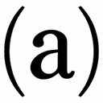
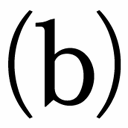
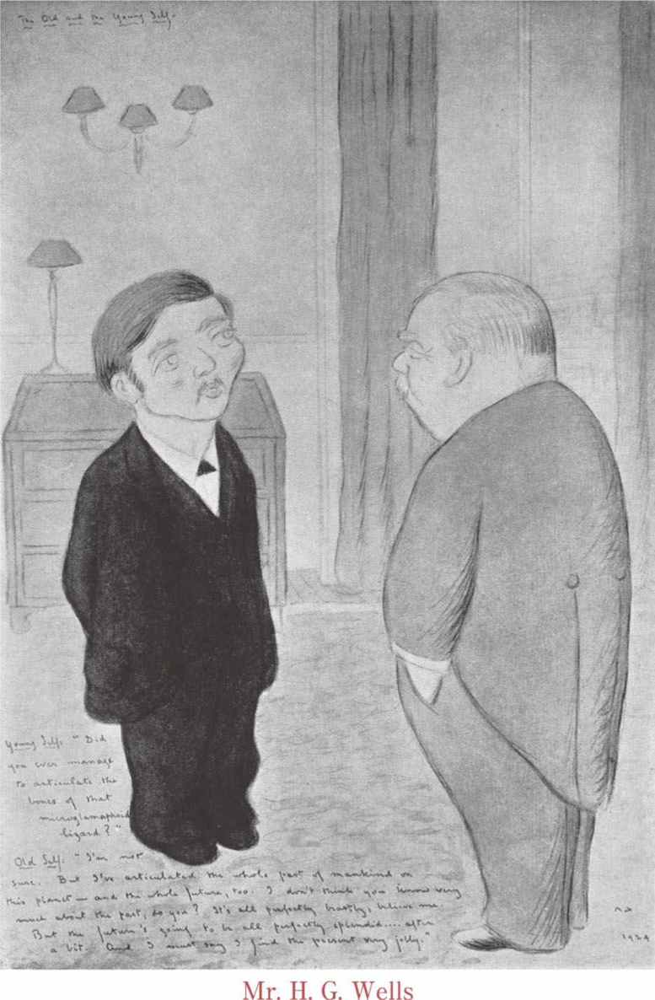

| 盗まれた細菌／初めての飛行機 | |
| ウェルズ | |
| (2010) | |
盗まれた細菌／初めての飛行機
ウェルズ
南條 竹則訳
Title: The Stolen Bacillus
1894
The Flowering of the Strange Orchid
1894
The Temptation of Harringay
1895
The Hammerpond Park Burglary
1894
The Purple Pileus
1896
The Truth about Pyecraft
1903
The Sad Story of a Dramatic critic
1895
The Lost Inheritance
1897
The Apple
1896
My First Aeroplane
1910
Little Mother up the Mörderberg
1910
Author: Herbert George Wells
『盗まれた細菌／初めての飛行機』目次
◎ご注意
本作品の全部または一部を無断で複製、転載、改竄、公衆送信すること、および有償無償にかかわらず、本データを第三者に譲渡することを禁じます。
個人利用の目的以外での複製等の違法行為、もしくは第三者へ譲渡をしますと著作権法、その他関連法によって処罰されます。
盗まれた細菌／初めての飛行機
「それから、こいつは」細菌学者は顕微鏡の下に載物ガラスを滑り込ませながら、言った。「彼の有名なコレラ菌の標本です──いわばコレラの種子ですな」
蒼白い顔の男は顕微鏡をのぞき込んだ。その種のものには不慣れな様子で、顕微鏡にあてていない目の上に、柔弱な白い手をかざすと、「よく見えませんが」と言った。
「この螺子をいじってごらんなさい」と細菌学者は言った。「きっと、顕微鏡の焦点があなたの目に合っていないんでしょう。目は人によってちがいますからな。こちらかあちらに、ほんの少しだけ螺子を回してごらんなさい」
「ああ！ 見えました」と訪問客は言った。「けっきょく、それほど見栄えのするものじゃないんですね。小さなピンクの縞と破片みたいなものがあるだけだ。しかし、あのちっぽけな粒子が、あのただの極微物が増殖して、都市を壊滅させることもできるんだ！ 素晴らしいな！」
彼は立ち上がり、載物ガラスを顕微鏡から抜くと、それを手に持って窓の方にかざした。「こうやっても、ほとんど見えやしない」標本をためつすがめつ見ながら、そう言って、ちょっと口ごもった。「これは、その──生きているんですか？ 今でも危険があるんですか？」
「そいつは染色して、殺してあります」と細菌学者はこたえた。「私としては、全宇宙のコレラ菌を一つ残らず殺して、染色したいものだと思いますよ」
「あなただって」蒼白い青年は顔にかすかな微笑みを浮かべて、言った。「こんなものを生きている状態で──活動する状態で、身のまわりに置きたくはないでしょうね」
「いやいや、我々はそうせざるを得んのですよ」と細菌学者は言った。「たとえば、ここに──」彼は部屋を横ぎって、密封された試験管が五、六本並んでいるうちの一つを取り上げた。「ここに入っているのは、生きたやつです。本物の、生きた病菌を培養しているんです」そう言って、ふと口をつぐんでから、「いわば瓶詰のコレラ菌ですな」
蒼白い男の顔を、一瞬、満足げな表情がよぎった。「そんなものをお持ちになっていては、危険千万ですねえ」彼は小さな試験管を喰い入るように見つめながら、言った。細菌学者は、訪問客の表情に病的な悦びの色が浮かんでいるのに気づいた。この男は今日の午後、旧友からの紹介状を持って訪ねて来たのだが、自分とは性格がまるで反対なものだから、面白い奴だな、と思ったのである。長く柔らかい黒髪と濃い灰色の眼、げっそりとやつれた面ざしに神経質な振舞い、むら気だが強い関心──訪問客のそうした様子は、細菌学者がふだんつきあっている科学者たちの、粘液質な慎重さとくらべると、いかにも目新しく感じられた。聞き手は細菌の殺人的性質に驚嘆していることがわかったから、その点をうんと強調して語りたくなったのは、自然というべきだろう。
細菌学者は試験管を手に持って、考え込むような様子をした。「そう、ここには疫病がとじ込められているんです。こういう小さな試験管を割って、飲み水の水源に放り込んでごらんなさい。この微細な生物たちに──染色して最高度の倍率の顕微鏡にかけなければ、目にも見えないし、匂いも味もないこいつらに、こう言っておやりなさい。『行け、産めよ殖やせよ、水槽に満てよ』そうすると、死が──謎めいた原因不明の死、迅速なおそろしい死、苦痛と恥辱に満ちた死が──この街に放たれ、犠牲者をもとめて徘徊するんです。ここでは夫を妻から奪い、ここでは子供を母親から、ここでは政治家をその職務から、そしてここでは労働者を労苦から奪い去る。細菌は水道管を伝って街路を忍び歩き、ここで一軒、彼処で一軒と、飲み水を煮沸しない家を見つけては罰を与える。鉱泉水の製造所の井戸に忍び込み、水洗いされてサラダの中にもぐり込み、氷の中に眠っている。馬槽にいて馬が飲むのを待ちかまえ、公共の噴水式水飲み器の中にいて、不注意な子供たちが飲むのを待っている。土壌に浸み込み、無数の思いがけない場所で、泉や井戸にふたたび姿をあらわす。ひとたびこいつが水道施設で悪さを始めたら、呼びかえすひまもないうちに、この大都会の人間を十人に九人は殺しているでしょう」
細菌学者は急に言葉を切った。君はすぐ演説口調になるのが欠点だと、いつも人に言われているからだ。
「しかし、細菌はこの中にいる限り、まったく安全なのです──さよう、まったく安全です」
蒼白い顔の男はうなずいた。両眼を輝かせ、咳払いをして、こう言った。「無政府主義者のならず者どもは馬鹿ですね。大馬鹿ですね──こういうものがあるというのに、爆弾を使うなんて。僕が考えるに──」
扉を優しく叩く音が、指先でそっと触れるだけの音が、聞こえた。細菌学者は扉を開けた。「あなた、ちょっとだけごめんなさいね」と彼の妻がささやいた。
研究室へ戻って来ると、訪問客は時計を見ていた。「気がつきませんでした。一時間もお邪魔してしまって──もう四時二十分前です。三時半にはおいとましなければいけませんでしたのに。でも、ほんとに興味深いものをお見せ下さったものですから。いえ、ほんとに、これ以上いるわけにはまいりません。四時に約束がありますので」
青年はくり返し礼を述べながら部屋を出て行き、細菌学者は玄関まで送った。そのあと、考えに耽りながら廊下を通って研究室へ戻った。あのお客は何人だろうと考えていたのだ。まちがいなくチュートン系ではないし、普通のラテン系人種でもない。「何にしても、病的なやつのようだな」と細菌学者はひとりごちた。「培養した病原菌を、さも嬉しそうに見ていたじゃないか！」ふと不吉な考えが頭の中をよぎった。彼は蒸気槽のそばの作業台をふり返り、それから大急ぎで書き物机に戻った。それから、あわててポケットをゴソゴソ探り、玄関へとんで行った。「広間のテーブルに置いたのかもしれない」と彼は言った。
「ミニー！」彼は玄関の広間でしゃがれ声を張り上げた。
「はい、あなた」遠くから声がかえって来た。
「さっき、おまえと話した時、わたしは手に何か持っていたかい？」
一瞬の沈黙。
「何も持っていなかったわ。わたし、おぼえてますけど......」
「〝青の破滅〟が！」細菌学者はそう一声叫ぶと、やにわに玄関の戸口へ走って行って、家の石段を駆け下りて通りへ出た。
ミニーは扉が乱暴に閉まる音を聞くと、何事かと思い、窓辺へ駆け寄った。通りの向こうの方で、瘦せた男が辻馬車に乗ろうとしていた。夫の細菌学者は帽子もかぶらず、室内用スリッパのまま、激しく身ぶり手ぶりをしながら、その男の方へ走って行った。片方のスリッパが脱げてしまったが、拾おうともしなかった。
「あの人、気が狂ったんだ！ あんなおそろしい科学の研究をしているせいだわ」
ミニーはそう言って、窓を開けて、うしろから呼びかけようとした。瘦せた男は、その時急にふり返ったが、やはり同じことを考えたらしい。あわてて細菌学者を指さし、御者に何か言うと、辻馬車の前垂がバタンと閉まって、鞭が鳴った。馬の蹄がカタカタと音を立て、馬車と、必死に追いかける細菌学者とは、あっという間に道の彼方へ遠ざかり、角を曲がって姿を消した。
ミニーはしばらく、窓から身をのり出したまま動かなかった。それから首を引っ込めて、部屋の中に戻ったが、呆然としてものも言えなかった。
「たしかに、あの人は変わってるけど、それにしても、ロンドンの街を──しかも、この社交季節の真っ盛りに──靴下だけで走りまわるなんて！」
その時、名案が浮かんだ。彼女は急いでボンネットをかぶると、夫の靴をつかんで、広間へ下りた。夫の帽子と薄手の外套を洋服掛けから取りおろして、玄関の石段に出ると、折よく辻馬車がゆるゆると通りかかったので、呼びとめた。「この道をまっすぐ行って、ハヴロック三日月街を曲がってちょうだい。そうしたら、綿天鵞絨の上衣を着た紳士が帽子をかぶらずに走っていないかどうか、さがしてちょうだい」
「綿天鵞絨の上衣で、帽子はなしだネ。よしきた、奥さん」御者はそう言うと、さっそく鞭をふるった。まるで〝綿天鵞絨の上衣〟という場所へ、毎日ずっと通いつけているかのように平然としていた。
それから数分後、ヘイヴァーストック・ヒルの御者だまりに屯する辻馬車の御者と浮浪者たちは、赤黄色の老いぼれ馬の引く辻馬車が猛然と走り過ぎて行くのを見て、度胆をぬかれた。
かれらは馬車が通り過ぎるまで黙っていたが、遠ざかって行くと、やっと口を開いた──「あれア、アリー・イックス（１）だぜ。野郎、どうしちまったんだ？」〝無駄口親爺〟のあだ名で呼ばれている恰幅の良い紳士がそう言った。
「鞭をしんどく使ってるぜ」と馬丁の小僧が言った。
「やあ、あれを見ろ！」トミー・バイルズ爺さんが言った。「もう一人、気の狂った奴が来たぜ。噓じゃねえ」
「ジョージの野郎だ」無駄口親爺は言った。「ほんとに、イカレた客を乗せてやがるな。あの男、馬車からつんのめって、あがいてるじゃねえか？ あいつ、アリー・イックスを追っかけてんのかな？」
御者だまりにいた連中は興奮した。合唱──「がんばれ、ジョージ！」「競走だ！」「追いつけ！」「もっと鞭を使え！」
「よく走る牝馬じゃないか」馬丁の小僧が言った。
「まったく、たまげた！」無駄口親爺が叫んだ。「よし、もうじきおれもおっ始めるとしよう。おや、また新手が来たな。今朝はハムステッド中の辻馬車が、みんなイカレちまったんじゃねえかな」
「今度の馬車に乗ってんのは、女だぜ！」馬丁の小僧が言った。
「女が男を追いかけてるのか」無駄口親爺が言った。「ふつうはその逆だが」
「あの女、手に何を持ってるんだろう？」
「山高帽子みてェだ」
「何て途方もねえ悪戯だろう。三一でジョージに賭けるぜ」と馬丁の小僧は言った。「お次はいねえかい？」
ミニーは素晴らしい拍手喝采をうけて、そこを通り過ぎた。きまりが悪かったが、自分は義務を果たしているんだと感じていた。馬車はヘイヴァーストック・ヒルの坂道を下り、カムデン・タウン・ハイ・ストリートを突っ走った。ミニーは、ジョージのキビキビした後姿からずっと目を離さなかった。あの御者は一体何だって、うちの気まぐれな夫を遠くへ連れて行こうとしているんだろう？
一番先頭の馬車に乗った男は、隅の方に坐ってうずくまっていた。両腕をひしと組んで、手には途轍もない災厄の可能性を秘めた小さな試験管を握っていた。彼は恐怖と歓喜の入りまじった妙な気分だった。彼がとくに恐れていたのは、目的を果たさないうちに捕まることだったが、心の奥には、自分が犯そうとしている罪の恐ろしさに対する、もっと漠然とした大きな恐怖があった。それでも、喜びは恐怖をはるかに凌いでいた。今までいかなる無政府主義者も、こんなことは思いつかなかった。おれはラヴァショル（２）とかヴァイヤン（３）といった著名人たちの名声を羨んでいたものだが、そうした連中も、もうおれと較べれば、ちっぽけな存在になってしまった。おれはただ間違いなく水道施設へ行って、あの小さな試験管を割って、貯水池に放り込みさえすれば良いのだ。おれの立てた計画は何と見事なものだったろう──偽の紹介状を書いて、研究室にもぐり込み、ものの見事にチャンスをつかんだのだ！ とうとう世界中におれの名が知れ渡る。おれを嘲笑ったり、ないがしろにしたり、他の人間を贔屓したり、おれと同席するのを嫌がった連中も、やっとおれに一目置くだろう。死ね、死ね、死ね！ あいつらはいつもおれをどうでも良い人間として扱った。世界中の人間が結託して、おれをおさえつけた。人を仲間外れにすると、どういうことになるか教えてやるぞ。ところで、この見おぼえのある通りは、どこだったかな？ グレイト・セント・アンドルーズ通りだ、そうに決まっている！ 追いかけっこはどうなったろう？ 彼は首をのばして、馬車の外をのぞいた。細菌学者は五十ヤードほどうしろまで追い迫っていた。こいつは拙い。このままでは捕まって、計画を阻止されてしまう。金はないかとポケットの中をさぐると、半ソヴリン貨が出て来た。彼は辻馬車の天井の跳ね蓋を開けて、御者の鼻先に金を突きつけると、「もっとやるぞ」と叫んだ。「もし、逃げ切れたらな」
御者は彼の手から金をひったくった。「合点だ」と御者は言って、跳ね蓋は閉まり、馬のつややかな横腹を鞭が打った。馬車は大きく揺れ、跳ね蓋の下に中腰で立っていた無政府主義者は、バランスを保つために、小さなガラスの試験管を持っている手を、思わず前垂についた。脆いガラスの砕ける感触がして、割れた試験管の半分が馬車の床に落ち、カランと鳴った。無政府主義者は悪態をつきながら座席に腰かけ、前垂についた二、三滴の液体を陰気な顔でながめていた。
彼はゾッと身震いした。
「そうすると、おれが最初の犠牲者ってわけか。やれやれ！ ともかく、殉教者にはなれる。それは中々のことだ。しかし、ひどい死に方をするにはちがいない。話に聞くほど苦しいものだろうか」
やがて、ある考えが浮かび──彼は足元をさがした。割れた試験管の先には、まだわずかな水滴が残っていたので、念のためにそれを飲んだ。念には念を入れておいた方が良い。ともかく、これで死に損うことはあるまい。
そうすると、もう細菌学者から逃げる必要はないことに気がついた。彼はウェリントン街で、止まれと御者に命じ、馬車を下りた。踏み段で足をすべらし、頭が変にぼうっとする感じがした。このコレラ菌の毒は効き目が速いようだ。彼は御者に手をふって、その場から消えてもらい、片腕を胸にあてて舗道に立ち、細菌学者が来るのを待った。その姿勢には何か悲劇的なものがあった。死が間近に迫っているという感覚が、彼にある種の威厳を与えていた。彼は不敵に笑いながら、追っ手を迎えた。
「無政府主義万歳！ 遅すぎたな、君。細菌は飲んじまったよ。コレラはもう蔓延りはじめた！」
馬車に乗った細菌学者は、妙にニコニコして、眼鏡ごしに相手を見やった。「飲んじまったって！ 無政府主義者なのか！ それでわかった」彼はさらに何か言おうとして、やめた。口元には微笑が浮かんでいた。細菌学者が馬車の前垂を開けて、下りようとすると、無政府主義者は大袈裟に別れの手を振り、ウォータールー橋の方へズンズンと歩いて行った──細菌に感染した身体を、なるべく大勢の人にわざと押しつけながら。細菌学者は男の後姿にすっかり気を取られていたので、ミニーが舗道にあらわれても、ほとんど驚きを示さなかった。ミニーは夫の帽子と靴と外套を手にしていた。「ありがとう。わたしの物を持って来てくれたんだね」彼はそう言いながら、しだいに遠ざかる無政府主義者の姿を、我を忘れたように見つめていた。
「おまえは馬車に乗った方がいい」細菌学者はなおも見つめながら、そう言った。ミニーは夫が狂っているものと完全に信じ込んでいたので、家へ戻るように、自分の一存で御者に指図をした。「靴を履けというのかい？ いいとも」夫はそう言った。辻馬車は回れ右をはじめて、気取って歩いて行く黒い後姿を──今はもう遠い小さな点になっていたが──彼の目から隠した。細菌学者は何か急にグロテスクなことを思いついて、笑った。それから、言った。「でも、本当に笑いごとじゃないんだ」
「あのね、おまえ、あの男はわたしを訪ねて来たが、無政府主義者だったんだ。だめだ──失神してはいかんよ。でないと、話の続きができないからな。それでわたしは、あいつが無政府主義者とは知らないものだから、ひとつビックリさせてやろうと思って、新種のバクテリアの培養菌を取り出して見せたんだ。そら、このあいだ話したやつだよ。いろんな猿の青い斑点に付着する菌で、わたしはこの菌が斑点をつくるんじゃないかと考えているんだが──ふざけて、そいつをアジア型コレラ菌だ、と言ったんだ。すると、あいつはロンドンの水源を毒するために、それを持って逃げ出した。たしかに、そんなことをしたら、この文明都市は真っ蒼になっていたかもしれん。ところが、あいつはあの菌を飲んじまった。もちろん、何が起こるかはわからんが、おまえも知っているように、あの菌に感染した子猫は真っ青になってしまったね。それから、子犬三匹はまだらに青くなって、雀は──あざやかな青になった。ただ厄介なのは──培養菌をまたつくるのに、金と手間ひまがかかることだ。
この暑い日に外套を着ろだって！ なぜだね？ ジャバー夫人に道で会うといけないから？ だって、おまえ、ジャバー夫人は隙間風じゃあるまいし。何だって、この暑い日に、ジャバー夫人のために外套を着なきゃならんのだ──えっ、なるほど。ふんふん、そういうわけか」
蘭を買うことには、つねにある種の投機的な気味合いがつきまとう。君の目の前には茶色くしなびた組織のかたまりがあるだけで、その余は君の眼力か、競売人か、幸運か──何でも良いが、そういったものに頼らなければならない。その株は枯れかかっているか、もう枯れているかもしれないし、金に見合うだけのちゃんとした買い物かもしれない。あるいは、ことによると──こういうことは何度となく起こっているが──幸せな買い手が喜びの目を瞠る前で、日ごとに何か新しい形態が、今まで見たこともない豊かさが──唇弁が奇妙な具合によじれていたり、常ならぬ微妙な色調があったり、思いもかけぬ擬態を呈していたり──そうしたものがゆっくりと姿をあらわすかもしれないのだ。ひとつの繊細な緑の穂状花序の上に、矜持と美と実益とが、もろともに花開く。そして、もしかすると不朽の名声さえ花開くかもしれない。なぜなら、自然の生んだ新しい奇跡には、新しい種名が必要となるかもしれないし、それには発見者の名前ほどふさわしいものがあるだろうか？ 「ジョンスミシア」！ いやいや、これよりひどい名前だって実際にあったのだ。
ウィンター・ウェダーバーンが蘭の即売会に始終通ったのは、おそらくこうした幸運な発見を期待してのことだったろう──そういう期待もあったし、また彼には、やってみて少しでも面白いと感ずることが、この世に一つもなかったためかもしれない。彼は引っ込み思案で、孤独で、どちらかというと無能な男だったが、なんとか食うに困らないだけの収入があり、骨の折れる仕事をわざわざする気力は持ち合わせていなかった。ことによれば切手や古銭を蒐めたり、ホラティウス（１）の詩を翻訳したり、本を装丁したり、新種の珪藻を発見したりしていたかもしれないが、彼の場合はたまたま蘭を栽培して、野心に満ちた小さな温室を持っていた。
「なんだか今日は」ウェダーバーンはコーヒーを飲みながら言った。「わたしに何か起こりそうな気がする」彼の話し方は──仕草も、ものを考えるのもそうだったが──ゆっくりだった。
「まあ、そんな縁起でもないこと、言わないでください！」遠縁の従姉妹にあたる家政婦が言った。彼女にとって、「何か起こる」というのは、たった一つのことを意味する婉曲な言いまわしだったからである。
「わたしの言うことを誤解してるよ。何もいやな意味で言ったんじゃないんだ......もっとも、自分でも何を言いたいのか、よくわからないんだがね」
「今日」とウェダーバーンは少し間をおいて、話しつづけた。「ピーターズで、アンダマン諸島とインド諸島の植物を売るんだ。どんな物があるか見に行ってくるよ。思いがけない掘出し物があるかもしれない。虫の知らせは、それかもしれない」
彼はコーヒーのおかわりをもらうために、カップを渡した。
「それって、このあいだお話しになった可哀想な若い方があつめたものですの？」従姉妹はカップにコーヒーを注ぎながら、たずねた。
「そうだよ」とウェダーバーンは言って、トーストを食べながら考えに耽った。
「わたしには何も起こらないな」彼はやがてひとりごとを言いはじめた。「どうしてなのかな？ 他の人間には随分いろんなことが起こるのに。たとえば、ハーヴィーだ。つい先週──月曜日、あいつは六ペンス拾った。水曜日には、あいつのひよこが全部暈倒病にかかった。金曜日は、あいつの従姉妹がオーストラリアから帰って来て、土曜日は踝を捻挫いた。何ていう刺激の連続だろう──このわたしに較べたら」
「わたしは、そんなに刺激がない方がありがたいわ」と家政婦は言った。「身のためになりませんもの」
「そりゃあわずらわしいだろうが、それでもね......だって、わたしには何ひとつ起こらないじゃないか。子供の頃には、一度も事故に遭わなかった。年頃になっても、恋をしたこともない。結婚もしなかった......自分の身に何か起こるっていうことは、何か本当にすごいことが起こるっていうのは、一体どんな気持ちがするものだろう。
あの蘭の蒐集家はまだ三十六だった──わたしより二十も若いのに、死んだんだ。それでも二度結婚して、一度離婚した。マラリアには四回かかって、一度は大腿骨を折った。マレー人を一度殺し、一度は毒矢にあたって傷ついた。しまいにはジャングルの蛭に殺された。そりゃあみんな厄介なことだったろうが、それでも、さぞや面白かったにちがいないよ──うむ、まあ、蛭はべつとしてだね」
「きっと、本人のためにはならなかったでしょうよ」家政婦は確信を持って言った。
「そうかもしれない」ウェダーバーンは時計を見た。「八時二十三分か。十二時十五分前の汽車で行くから、時間はまだたっぷりある。アルパカのジャケットを着て行こうと思う──あれは暖かいからね──それに、灰色のフェルト帽と茶色の靴を履いて行こう。それから──」
彼は窓の外の穏やかな空と陽のあたる庭をチラと見やって、それから、従姉妹の顔をおずおずと見た。
「ロンドンへ行くなら、傘を持って行った方が良いと思うわ」従姉妹は反駁を許さない声で言った。「駅からここまで帰り道が長いんですから」
家に帰って来た時、ウェダーバーンはいくらか興奮状態にあった。買い物をしたのだ。即決して物を買うなどめったにないことだったが、今度だけはそうしたのだ。
「これはヴァンダだよ」と彼は言った。「それからデンドロビウムが一株に、パレオノフィスが少しだ」彼はスープをすすりながら、買って来た蘭を愛おしげにながめた。蘭は目の前の汚点ひとつないテーブル掛けの上に並べられて、ウェダーバーンは晩餐をゆっくりと食べ進みながら、この植物のことをいろいろ従姉妹に語って聞かせた。いつもロンドンへ行くと、晩にその日のことをすっかり話して、彼女と自分自身を楽しませるのが習慣になっていた。
「今日は何か起こると思ってたんだ。果たして、これだけの花を買った。このうちのどれかは──いいかい──どれかはきっと、すごい花を咲かせるぞ。どうしてかわからないがね、まるで誰かにそう言われたみたいに、確信があるんだ──このうちのどれかは、すごいものになるっていう確信がね」
「あれは」──と言って、彼はしなびた根茎の一つを指さした──「品種がわからないんだ。パレオノフィスかもしれない──そうじゃないかもしれない。新種かもしれないし、ことによったら新しい属かもしれない。しかも、あれは気の毒なバッテンが採集した最後の蘭なんだ」
「見た目が良くないわ」と家政婦は言った。「形がずいぶんいやらしいじゃないの」
「形なんてないように思えるがなあ」
「あの、突き出しているものが気に入らないわ」
「明日、鉢に植えてしまうよ」
「なんだか、蜘蛛が死んだふりをしてるみたいだわ」
ウェダーバーンはニッコリ微笑い、小首を傾げて、根茎をしげしげと見た。「たしかに見てくれの良い塊じゃないが、こういうものは乾いた状態を見ても、善し悪しはわからないよ。じっさい、すごくきれいな蘭になるかもしれないんだ。ああ、明日は忙しいぞ！ 今夜のうちに、どうするか決めておかなくちゃいけない。それで明日になったら仕事に取りかかるんだ。
気の毒なバッテンは、マングローヴの茂る沼地で見つかった時、もう死んでいたのか、死にかかっていたのか──どっちだか忘れちまった」
彼はしばらくして、また語りはじめた。
「ほかでもないこの蘭の一つが、あいつの身体の下敷きになっていたんだ。あいつは数日前から土地の熱病にかかって、具合が悪かったというから、気を失っていたんだろう。ああいったマングローヴの沼地はひどく身体に悪い。ジャングルの蛭が、あの男の血を一滴残らず吸い取ってしまったそうだ。こいつは、彼が命と引きかえに手に入れた蘭そのものかもしれないよ」
「だからといって、有難味は感じませんわ」
「女は泣くとも男は働くべし、だ」ウェダーバーンはいともおごそかに言った。
「でも、考えてもごらんなさい。不便なところへ行って、汚ならしい沼地で死ぬなんて！ 熱病にかかっても、クロロダインとキニーネしか飲む物はないし──男の人を放っておくと、クロロダインとキニーネで三度の食事を済ませるでしょうよ──まわりにはおそろしい原住民しかいないなんて！ アンダマン諸島の人間って、じつにいやらしい連中だそうじゃありませんの──いずれにしても、必要な訓練を受けていないんですから、良い看護婦にはなれませんわ。それもこれも、イギリスにいる人間が蘭を欲しがるせいなんですから！」
「まあ快適じゃなかったろうが、そういうことを楽しいと思う人間もいるよ」とウェダーバーンは言った。「ともかく、あいつの一行の原住民たちはそこそこ文明化されていたから、仲間の鳥類学者が奥地から戻って来るまで、あいつの蒐集したものを全部大事にとっておいた。もっとも、あの蘭の種類が何かは知らなくて、しなびさせてしまったがね。そんなわけだから、これはよけいに興味深いのさ」
「よけい気味が悪いわ。マラリア菌が付いていやしないか、心配になりますもの。それに考えてもごらんなさい。あの無格好な物の上には死体が横たわっていたのよ！ そんなこと、今まで考えてもみなかったわ。ああ！ もう夕食が一口も喉を通りません」
「何ならテーブルからどかして、窓の腰掛けに置くとしよう。あそこに置いても、良く見えるからね」
そのあと二、三日、ウェダーバーンは蒸々する小さな温室で、まことに忙しく立ち働いた。木炭やチーク材のかたまり、苔などといった蘭の栽培家の七つ道具を使って、大騒ぎだった。自分は素晴らしく充実した時間をすごしている、と彼は思った。晩になると、新しい蘭のことを友人に語り、何か珍しいものが生まれるのではないかという期待を何度も口にした。
ヴァンダのいくつかとデンドロビウムは、世話した甲斐もなく枯れてしまったが、あの珍しい蘭は、やがて生きているしるしを見せはじめた。彼はそれに気づくと大喜びして、ジャムをつくっていた家政婦を連れて来て、蘭を見せた。
「あれが芽だよ。そのうちあすこに葉がいっぱいつくだろう。ここから出ている小さなものは気根だよ」
「わたしには、なんだか茶色いものから小さな白い指が突き出しているように見えるわ。好きじゃないわ」
「どうしてだい？」
「わかりません。指がこちらにつかみかかろうとしているように見えるのよ。好き嫌いはしようがないわ」
「はっきりとは言えないがね、わたしの知るかぎり、蘭にはああいう気根を持つ種類はないと思うんだよ。もちろん、思いちがいかもしれないがね。ほら、気根の端の方が少し平たくなってるだろう」
「わたし、嫌い」家政婦は急にゾクッと身震いして、顔をそむけた。「こんなこと言うのは馬鹿げてると思うし──あなたがそんなに気に入ってらっしゃるのに、申しわけないけれど、どうしても、あの屍体のことを考えてしまうんです」
「しかし、あの株じゃないかもしれないんだよ。わたしの想像にすぎないんだから」
家政婦は肩をすくめて、言った。「ともかく、わたしは嫌いです」
ウェダーバーンは彼女がこの植物を毛嫌いするので、少し感情を害した。それでも、気が向くたびに、蘭一般のことと、この特別な蘭のことを語るのをやめなかった。
「蘭という植物には、じつに奇妙なことがいっぱいある」と彼はある日、語った。「驚くべき可能性があるんだ。知ってるだろうが、ダーウィンは蘭の受粉を研究して、通常の蘭の花は、その構造全体が、蛾が花粉を株から株へ運びやすいようにできていることを示した。ところがね、これまでに知られている蘭の中には、花をそういう受粉のために用いることができないものも、いっぱいあるらしいんだ。たとえば、シプリペディウム種のあるものは、これを受粉させられるような昆虫が知られていないし、中には種子が一度も見つかっていないものもあるんだ」
「でも、それならどうやって新しい株を増やすんです？」
「匍匐枝とか塊茎とか、その種のひこばえによってさ。その点は容易に説明がつく。わからないのは、何のために花をつけるかだよ」
「どうやらね」と彼は言い足した。「わたしの蘭は、その種の変わったものらしいんだ。もしそうだったら、研究してみるつもりだよ。ダーウィンがやったような調査をしてみたいと、前々から思ってたんだ。でも、今までは時間がなかったり、何かしら支障が起きて、できなかったんだ。もう葉っぱがひらきかけている。君も見に来てくれるといいんだがなあ！」
しかし、家政婦は、蘭の温室は暑くて頭が痛くなると言った。じつをいうと、彼女はあのあと一度、問題の蘭を見ているのだが、その時はもう気根がのびて、何本かは一フィートを越える長さに生長していた。不幸なことに、彼女はそれを見ると、触手が何かをとらえようとして、ニューッと伸びたところを連想した。それらは夢にまであらわれ、信じがたい速度でのびて、追いかけて来るのだった。そんなわけで、家政婦は二度とあの植物を見ないことに決めており、ウェダーバーンは独りでその葉を観賞するしかなかった。この蘭の葉は通常の幅の広い形をしており、色は光沢のある深緑で、根元に濃い紅の斑や点々が入っていた。そんな葉は他に見たことがなかった。蘭の株は、温度計のわきの低い台に置いてあって、すぐそばに簡単な仕掛けがあり、蛇口から熱湯の管に水がしたたって、湿気を保つようになっていた。彼は近頃、この珍しい植物がもうじき開花する時のことを考えながら、午後をすごすのが習慣になっていた。
そして、ついに素晴らしいことが起こったのだ。彼は小さなガラスの家に入った瞬間、例の花序が花開いたことを知った。新しいお気に入りの蘭が置いてある隅は、大きなパレオノフィス・ロウイーの蔭にかくれて見えなかったが、空気に新しい香りが混じっていたからである。濃厚な、ひどく甘い香りで、混み合った蒸し暑い小さな温室にただよう他のすべての香りを圧していた。
彼はそれに気づくや否や、あの奇妙な蘭のそばへ駆け寄った。すると、見よ！ 這いまつわる緑の花序に、今、三つの大きな花が咲きひらいて、強烈な甘い香りを放っている。彼はその前に立ちどまって、恍惚と見入った。
花々は白く、花弁に金色がかったオレンジ色の条が入っていた。重たげな唇弁はとぐろを巻いて複雑な形に突起し、その部分は、素晴らしい青味がかった紫と金色が混じっていた。これはまったく新しい属だということが、一目でわかった。それに、この耐えがたい香り！ ここは何て暑いんだろう！ 目の前で、花がゆらゆらと揺れた。
彼は温度が正常かどうか、たしかめようと思った。温度計に向かって数歩進んだ。突然、あらゆるものがぐらついているように感じられた。床の煉瓦が上下に踊っていた。それから白い花々と、そのうしろの緑の葉と、温室全体が横にすべって、それから弧線を描いて上へのぼって行くようだった。
＊ ＊ ＊ ＊ ＊ ＊
彼の従姉妹は、決まりきった習慣にしたがって、四時半にお茶の支度をした。しかし、ウェダーバーンはお茶を飲みに来なかった。
「あのおそろしい蘭に見とれてるんだわ」彼女はそうひとりごちて、十分待った。「時計が止まってしまったにちがいないわ。呼んで来よう」
まっすぐ温室へ行って、扉を開けると、ウェダーバーンの名を呼んだ。返事はなかった。空気がひどく重苦しく、強烈な芳香に満ちていることに気づいた。それから、温水管の間の煉瓦の上に、何かが横たわっているのを見た。
彼女はたぶん、ものの一分間も、身じろぎもせずに立ち尽くしていたはずである。
ウェダーバーンが仰向けになって、あの奇妙な蘭の下に横たわっていた。触手に似た気根はもう空中に揺れてはおらず、かたまって、灰色のロープのようにもつれ、先端をピンと伸ばして、彼の顎と頸筋と両手にぴったりはりついていた。
従姉妹には、どういうことか、わけがわからなかった。そのうち、ふと気づいた。嬉しそうにウェダーバーンの頰にひっついている一本の触手の下から、血が細い糸のようにしたたっているのだ。
彼女は言葉にならぬ叫び声をあげて、ウェダーバーンに駆け寄り、蛭のような吸器から引き離そうとした。触手が二本プッツリ切れて、真っ赤な汁がしたたった。
やがて花のむせかえるような匂いのために、頭がクラクラしてきた。この触手は何としつこくひっついているんだろう！ 手強いロープを引きむしったが、ウェダーバーンと白い花がまわりを泳いでいるような気がしてきた。自分が気を失いかけているのを感じて、これはいけないと思った。ウェダーバーンを放し、急いで手近なドアを開けて、新鮮な空気の中でしばらく息をつくと、名案を思いついた。彼女は植木鉢をとり上げ、温室の端の窓に投げつけた。それから、また中に入った。もう一度力をこめて、ウェダーバーンの動かぬ身体を引きずり、奇妙な蘭を床に叩きつけた。蘭はそれでも無気味な粘り強さで獲物にまといついた。彼女はカッとなって、蘭をウェダーバーンもろとも外気の中へ引きずり出した。
それから、吸盤のような気根を一本ずつむしり取ることを思いつき、一分もすると、彼をおそるべき怪物から解放して、引き離しつつあった。
ウェダーバーンは蒼白になり、一ダースほどの丸い傷跡から血を流していた。
片手間仕事をする雇い人が庭へやって来て、ガラスが割れているのにびっくりした。見ると、この家の家政婦が血だらけの両手で、ぐったりして動かない人間の身体を引きずっている。雇い人は一瞬、あらぬことを考えた。
「水を持って来て！」と叫ぶ女の声が、空想を追い払った。大急ぎで水を持って来ると、彼女は興奮して泣きながら、ウェダーバーンの頭を膝にのせて、顔から血を拭き取っていた。
「どうしたんだ？」ウェダーバーンは細目を開けてそう言うと、またすぐに目をつぶった。
「アニーのところへ行って、ここへ来るように言ってちょうだい。それから、ハッドン医師のところへ、すぐ行ってね」家政婦は雇い人が水を持って来ると、すぐにそう言いつけた。そして相手がためらっているのを見て、言い足した。「事情は帰って来たら、すっかり話してあげます」
やがて、ウェダーバーンはふたたび目を開いた。自分は一体どうしたんだろうと面喰らっているので、家政婦は説明した。「温室で気を失っていたのよ」
「それで、蘭は？」
「わたしがちゃんとしておきます」
ウェダーバーンは多量の血を失ったが、それ以外、大した傷は蒙らなかった。ブランデーにピンクの肉のエキスを混ぜたものを飲まされ、二階のベッドへ運ばれた。家政婦はハッドン医師に、信じがたい話を切れぎれに語って、言った。「温室へ行って、ごらんになって下さい」
冷たい外気が開いたドアから吹き込み、むっとする香りはほとんど散り失せていた。引きちぎられた気根は大方、煉瓦の床についたたくさんの黒い汚点の間で、しおれていた。花序の茎は地面に落ちた時に折れて、花々はぐったりし、花弁の端が茶色くなっていた。医師はこの植物の方へかがみ込んだが、気根の一つが今もかすかに動いているのを見て、躊躇した。
翌朝、奇妙な蘭はまだそこにあったが、もう黒ずみ、腐りはじめていた。ドアが時折朝風に吹かれてバタンバタンと鳴り、ウェダーバーンが丹精した蘭はすべてしなびて、ぐんにゃりと地面にへたばっていた。しかし、ウェダーバーン自身は奇怪な冒険をしたことが嬉しくてたまらず、目を輝かせて二階で得々としゃべりつづけた。
１ ウェルギリウスと並び称される古代ローマの大詩人（前六五～前八年）。（本文へ戻る）
こんなことが本当に起こったのかどうか、さだかではない。すべては画家であるＲ・Ｍ・ハリンゲイの言葉にかかっているのだから。
彼の言うところによれば、次のことに誓ってまちがいはないそうである。ハリンゲイは十時頃、アトリエへ行った。前日描いていた人物の頭像に、何か手を加えられないかと思ったのだ。問題の頭像というのは、イタリア人のオルガン弾きを描いたもので、ハリンゲイの考えでは──しかし、まだそうと決めたわけではなかったが──絵の題名は「徹夜祈禱」とするつもりだった。彼の話はここまでは率直で、いかにも本当らしく聞こえる。彼はオルガン弾きが小銭を欲しがっているのを見ると、天才的な決断の早さで、男をすぐに部屋へ誘い入れた。
「ひざまずけ。顔を上げて、あの腕木を見てくれ」とハリンゲイは言った。「小銭を欲しがってるような顔をするんだ」
「歯を見せて笑うな！」とハリンゲイは言った。「おまえの歯茎なんか描きたくない。不幸せそうな顔をしろ」
さて、一晩寝てから見直すと、絵は明らかに満足の行く出来栄えではなかった。「よく描けてる」とハリンゲイは言った。「頸のところが少し......でも」
彼はアトリエを歩きまわり、いろいろな角度から絵をながめた。それから、けしからぬことを言った。その言葉は原文に書いてある。
「絵だ」と彼は言ったのだそうだ。「オルガン弾きを絵に描いた──ただの肖像画にすぎない。生きているオルガン弾きならいいんだが、僕にはどういうわけか、生きた絵を描くことができないんだ。僕の想像力に問題があるのかしら」
この言葉も、どうやら本当らしく聞こえる。実際、彼の想像力には問題があるからだ。
「創造の筆致！ それが、画布と絵の具で人間をつくるんだ──アダムが赤土からつくられたように！ しかし、この絵は！ こいつがもし、通りを歩いていても、アトリエで描いたものだとわかってしまうだろう。小さい子供は『あっちへ行け。額に入れてもらえ』って、こいつに言うだろう。ちょっとした筆使いの問題なんだが......ううむ──やっぱり、うまくないな」
彼は窓際に寄って、日避けを下ろしはじめた。日避けは紺のオランダ布に巻軸をつけたものだった。巻軸は窓の下にあるので、下に引いて光を入れるのだ。彼は机からパレットと筆と腕鎮（１）を取って来た。それから絵の方を向いて、口元に小さな茶色の点を描き加え、今度は瞳に注意をこらした。それから、徹夜祈禱にしては下顎が少し無表情すぎると思った。
やがて持ったものを下へ置くと、パイプに火を点けて、作品の進み具合を見た。「こいつは絶対、僕を嘲笑ってるぞ」とハリンゲイは言った。彼は今でも、絵が嘲笑っていたと信じている。
画中の人物はたしかにさいぜんより生き生きしてきたが、彼の望む方向にではなかった。嘲笑っているのは間違いなかった。「不信心者の徹夜祈禱ってとこかな。そう思って見れば、なかなか巧妙いし気が利いてるじゃないか！ でも、左の眉に皮肉っぽさが足りないな」
近寄って、眉のところに軽く一筆加え、唯物主義を暗示するために耳たぶを少し大きくした。さらに検討がつづいた。「徹夜祈禱はやめだ」とハリンゲイは言った。「メフィストフェレスはどうかな？ しかし、そいつもチト平凡にすぎる。『総督の友達』──それだったら、こんなに見すぼらしくないだろう。でも、鎧もいかんな。キャメロット風すぎる（２）。緋の衣を着せて、『神聖なる学舎の人』というのはどうだ？ ユーモアがあるし、中世イタリア史の教養を感じさせるぜ」
「むろん、ベンヴェヌート・チェリーニ（３）という手もある」とハリンゲイは言った。「隅に黄金の杯みたいなものを、さりげなく描いておくんだ。でも、この顔色じゃあそれらしくないだろうなあ」
彼はこんなふうに独り言を言いつづけたが、それは理由のわからない不快な恐怖感を抑えるためだった、と本人は言っている。その絵はたしかに、不愉快としかいえない表情を浮かべつつあった。しかし、たしかに前よりもずっと生きたものになって来て──たとえ不気味なものであろうと──彼が今までに描いたどんな絵よりも、ずっと生き生きしていた。「『紳士の肖像』と名づけようか」とハリンゲイは言った。「『さる紳士』だ」
「だめだな」ハリンゲイはなおも空元気を出して、言った。「こういうのは〝悪趣味〟っていうんだ。あの嘲笑いは消さなきゃいけない。あれを消して、眼にもう少し情熱をあらわして──こいつの眼がこんなに暖かいなんて、今まで気がつかなかった──そうしたら、きっと──『情熱に燃える巡礼』っていうのは、どうだろう？ しかし、あの悪魔みたいな顔じゃあいかんな──海峡のこっち側ではなあ」
「ちょっとした不正確さが原因なんだ」と彼は言った。「眉がきっと斜めになりすぎてるんだろう」──そこで、採光を良くするために日避けをさらに引き下ろし、パレットと筆を取った。
画布に描かれた顔は、それ自身の魂によって生気を帯びているように見えた。邪悪な表情がどこから来るのかは、わからなかった。実験が必要だった。眉は──眉のはずはあるまい？ しかし、彼は眉を描き直した。だめだ。良くなるどころか、前よりも少し悪魔的になってしまった。それじゃ口元か？ うへっ！ 前よりもっといやらしくなったぞ──手直ししてみると、今度は陰気な笑いになった。それじゃあ、眼か？ 大変だ！ 筆に茶色とまちがえて朱色をつけてしまった。でも、たしかに茶色だと思ったのに！ 眼玉がギョロッと動いたような気がして、焰のような眼で彼をにらんでいた。彼はカッとして、クソ度胸のようなものが出たのかもしれないが、真っ赤な絵の具のついた筆を、画面にたたきつけた。すると、じつに奇妙なことが、まったく奇怪なことが起こったのだ──もし本当に起こったのだとすれば。
彼の前にいる悪魔のようなイタリア人は、両眼を閉じ、口をすぼめて、顔についた絵の具を手で拭ったのだ。
それから赤い眼が、唇を開くような音を立ててふたたび開き、顔がニヤッと微笑った。「ちとせっかちだったな」と絵は言った。
ハリンゲイが言うには、最悪のことが起きてしまったので、彼は冷静さを取り戻したのだそうである。悪魔は物の道理のわかる生き物だと信じていたのが救いになった。
「そんなら、どうして動きまわるんだ？」と彼は言った。「変な顔をしやがって──僕がおまえを描いてる時に、ニヤニヤ笑ったり、眼を細めたりして」
「しやしないよ」と絵は言った。
「してるとも」とハリンゲイは言った。
「君自身がやってるんだ」と絵は言った。
「僕じゃない」とハリンゲイは言った。
「君自身だ」と絵は言った。「よせ！ もうおれに絵の具を塗りたくるのはやめろ。本当の事を言ってるんだからな。おまえは午前中ずっと、おれの顔をいじくって、まぐれあたりで表情をつけようとしていた。まったく、絵をどんなふうにするかっていう考えがないんだ」
「あるとも」とハリンゲイは言った。
「いや、あるものか」と絵は言った。「おまえは絵を描く時に、考えを持っていたためしがない。いつも、およそぼんやりした予感だけで描きはじめる。何か美しいものだ──それは間違いない──宗教的な、さもなくば悲劇的な絵だ。しかし、そこから先は全部実験で、偶然まかせだ。おまえさん、そんなふうにして絵が描けるとは思ってないだろ？」
さて、ここからあとは、ただハリンゲイがそう言っているだけだということを忘れないでいただきたい。
「僕は自分の好きなように絵を描くんだ」ハリンゲイは平然と言った。
すると、絵は少し困ったような様子で、「霊感が湧かなければ、絵は描けないぜ」と言った。
「でも、霊感ならあったさ──この絵は」
「霊感だと！」皮肉屋の絵姿は冷たく笑った。「オルガン弾きが窓を見上げたのを見て、ちょっと思いつきが浮かんだだけじゃないか！ 徹夜祈禱だと！ ハッハッ！ おまえは何かが偶然やって来るのを期待して、描きはじめただけだ──それだけだ。おれはおまえが絵を描きはじめたのを見て、やって来た。おまえと話がしたい！」
「芸術は、おまえにとって」と絵は言った──「みじめな仕事だ。おまえは怠け者で、腰が据わらない。どうしてか知らんが、魂を打ち込むことができないんだ。いろんなことを知りすぎていて、それが邪魔になる。興が乗っている最中に、こういうことは以前に誰かがやったんじゃないか、と考えてしまう。それで......」
「おい」批評よりも、もっとましなものを悪魔に期待していたハリンゲイは言った。「僕に絵の講釈をする気か？」彼は十二番と番号をふった豚の毛の絵筆に、赤い絵の具をたっぷりつけた。
「真の芸術家は」と絵は言った。「つねに無知な人間だ。自分の仕事について理屈をこねまわす芸術家は、もはや芸術家じゃなくて批評家だ。ワーグナーは......おい──その赤い絵の具をどうする気だ？」
「きさまを塗りつぶしてやるんだ」とハリンゲイは言った。「そんなゴタクは聞きたくない。僕の商売は画家だけれども、おまえに絵の講釈をすると思ったら、大まちがいだ」
「ちょっと待て」絵はおびえた様子で言った。「ひとつ提案をしたい──ほんとうに良い話だ。おれが言っているのは本当のことだ、おまえには霊感が不足している。いいか。たぶん、おまえも聞いたことがあるだろう。コローニュの大聖堂（４）とか、悪魔の橋（５）とか──」
「馬鹿な」とハリンゲイは言った。「名画を描いて酷評してもらう喜びのために、僕が地獄へ行きたがるとでも思ってるのか。クソくらえ」
彼は頭に血がのぼった。危険のためにかえって勇気が出て、行動に移ったのだと本人は言っている。それで、あいつは化け物の口に朱色をべったりと塗りつけた。イタリア人は何かモグモグ言って、絵の具を搔きのけようとした──明らかに狼狽している様子だった。それから──ハリンゲイの話によると──いとも珍妙な争いがはじまった。ハリンゲイが赤い絵の具をはねかけると、絵は身悶えて、塗った絵の具をすぐさま拭き取る。「傑作を二枚じゃどうだ」と悪魔は言った。「チェルシーの画家一人の魂と引きかえに、まごうことない傑作を二枚だ。お得だろう？」ハリンゲイは絵筆でこたえた。
二、三分間、筆を揮う音と、イタリア人がモガモガ早口にしゃべったり叫んだりする声のほかには、何も聞こえなかった。イタリア人は絵の具の攻撃を腕や手で何度もさえぎったが、ハリンゲイはしばしば防禦に打ち勝った。やがてパレットの絵の具がなくなり、両者は息を切らしてにらみ合った。絵はすっかり赤い絵の具に汚されて、まるで血糊の上を転げまわったみたいだった。苦しげにゼエゼエと息をついて、濡れた絵の具が頸筋を流れるのがひどく不愉快そうだった。それでも、第一ラウンドは全体として絵の方に分があった。「よく考えろ」絵はねばり強く同じことを言った。「至高の傑作を二枚──べつべつの画風でだぞ。どちらも例の大聖堂に匹敵する──」
「わかってるよ」ハリンゲイはそう言うとアトリエからとび出し、廊下沿いに妻の私室の方へ向かって行った。
一分後、彼は大きなエナメル剤の缶を抱えて、戻って来た──それはカヤクグリの卵色の光沢剤だった。それから、筆も持っていた。それを見ると、赤い眼をした芸術好きの悪魔は悲鳴を上げはじめた。「傑作を三枚だ──人類窮極の傑作だぞ」
ハリンゲイは悪魔の顔の真ん中に線を引いて、それから眼を一突きした。ブツブツとくぐもった声がした。「傑作を四枚」と言って、唾を吐く音。
だが、ハリンゲイは攻勢に転じたので、このまま優位を保つつもりだった。素速く大胆に筆を揮って、身悶える画布に色を塗りつづけ、しまいに画布は一面輝くカヤクグリの染料に塗りつぶされた。一度だけ、悪魔の口があらわれて「傑作を五──」とまで言いかけたが、口をエナメル剤でふさいでやった。最後の方になって、赤い眼が開き、憤然とこちらをにらめつけたが、結局残ったのは、乾きかけた光沢剤がピカピカと光る一枚の画板だけだった。しばらくの間は、表面下でかすかな動きがあり、ところどころに少し皺が寄ったが、やがてそれもおさまって、完全に静止した。
それから、ハリンゲイは──ハリンゲイの話によると──パイプに火を点けて腰を下ろし、光沢剤を塗った画布をじっと見つめながら、何が起こったのかはっきりと考えようとした。それから画布のうしろにまわって、裏に異常がないかどうかをたしかめた。後悔の念がわいて来たのは、それからだ。塗りつぶす前に、悪魔の写真をとっておくんだったと思ったのだ。
これはハリンゲイのした話で──わたしがでっちあげたんじゃない。彼はその証拠として、薄緑の光沢剤を塗った小さな画布（横二十四インチ、縦二十インチ）を持ち出し、断固として真実だと主張するのだ。それに彼がいまだかつて傑作を描いていないことも事実で、親しい友人達に言わせると、おそらくけして描くことはあるまいという。
１ イーゼルで絵を描く際、棒を画布の上に渡し、その上に筆を握った手を乗せて安定させる、その棒のこと。（本文へ戻る）
２ キャメロットはアーサー王の宮廷があったという伝説の都。中世の騎士を好んで題材にした当時流行の画風をさすか。（本文へ戻る）
３ イタリア・ルネッサンス期の彫刻家・金細工師（一五〇〇～七一年）。波乱に富んだ生涯をおくり、『自伝』を書き残した。（本文へ戻る）
４ コローニュの大聖堂建立をめぐって、大工の親方と悪魔が賭けをしたという伝説がある。Wilhelm Ruland,Legends of the Rhine参照。（本文へ戻る）
５ 悪魔が人の魂と引きかえに、難所に橋をかけてやると持ちかける。しかし、人は妙計をめぐらし、悪魔は魂を奪いそこねるという類の架橋伝説がヨーロッパ各地にある。（本文へ戻る）
夜間強盗がスポーツなのか、商売なのか、はたまた芸術と考えるべきかということは、議論の余地のある問題だ。商売として見ると、技術が十分確立されていないし、芸術と見なされるには、それが成功した場合の金銭的要素が邪魔をする。全体として、これはスポーツの部類に入れるのが、一番理にかなっているように思われる。このスポーツには、今のところ規則が定められておらず、賞金はごく手軽なやり方で配付されるのだ。残念なことにハマーポンド邸に於いて、二人の前途有望な初心者が身を滅ぼしたのは、夜間強盗のこの形式張らぬやり方のせいであった。
この一件で呈示された賞金は、新婚間もないエイヴリング卿夫人の所有するダイヤモンドと、その他の骨董品だった。エイヴリング卿夫人は、読者も御記憶の通り、社交界に名だたる女主人、モンタギュー・パングズ夫人の一人娘だった。エイヴリング卿との結婚のことは、新聞でもさかんに喧伝され、結婚祝いにどれだけの素晴らしい贈り物をもらったとか、蜜月はハマーポンドで過ごすとかいったことを書き立てられた。こうした貴重な景品についての報道は、テディー・ワトキンズ氏を親方として尊敬する狭い仲間内でも相当な話題を呼び、ワトキンズ氏は然るべき優秀な助手を伴い、職業上の立場でハマーポンド村を訪れることが決まった。
生来内気で遠慮深いワトキンズ氏は、この訪問をおしのびですることにした。そして、いろいろ条件を熟慮した末、風景画家の役割を演じ、スミスという気どらぬ苗字を名乗ることにした。彼は先に現地へ乗り込み、助手はハマーポンドで過ごす最後の日の午後にやって来る段取りを立てた。ところで、ハマーポンド村はおそらくサセックス州でもっともきれいな、こぢんまりした場所の一つである。藁葺き屋根の家がまだいくつも残っているし、燧石で建造された、高い尖塔のある教会は丘の麓に心地よく安らっているが、この州でももっとも美しく、修復された部分の少ない教会の一つだ。それに、お屋敷へつづく道の橅の木と蕨の茂みには、通俗な画家や写真家が「小品の題」と称するものがまことにふんだんにあった。そういうわけで、ワトキンズ氏はまっさらな画布二つに真新しい画架、絵の具箱に旅行鞄、組み立て式の便利な小さい梯子（これは最近惜しまれつつ世を去った巨匠チャールズ・ピース（１）のお手本に倣ったものだ）、鉄梃と針金の束をたずさえて彼の地に到着すると、半ダースほどもいる絵描き仲間が、あふれるばかりの歓迎の意といくぶんの好奇心とをもって迎えたのだった。おかげで、画家の扮装は思いのほかそれらしく見えたわけだが、そのかわり美学的な会話につきあわされる羽目になって、氏はそういうことにはまったく不慣れだった。
「もう大分展覧会には出しましたか？」ポーソン青年は「駅馬車と馬」亭の酒場で、こう話しかけた。ワトキンズ氏は到着の晩、ここで地元の情報を巧みに収集していたのである。
「ほんの少しでサ」とワトキンズ氏はこたえた。「あちこちにちっとばかりで」
「王立美術院は？」
「もちろんでサ。それにクリスタル・パレスにも出しましたぜ」
「良いところに引っかけてくれたかい？」とポーソンは言った。
「冗談いっちゃいけない」とワトキンズ氏は言った。「そんなの、真っ平御免だ」（２）
「僕が言うのは、良いところに入れてくれたかっていうことですよ」
「どういう意味だね？」ワトキンズ氏は訝しげにたずねた。「まるで、あたしがムショに入れられたみてえな言い方をなさいますね」
ポーソンは叔母さんたちに育てられ、画家にしても、とくに育ちの良い青年だった。「ムショ」というのが何を意味するか知らなかったが、そういうつもりで言ったんじゃないと説明しておいた方が無難だと思った。絵をかけるという話題はワトキンズ氏には禁句のようなので、話を少し外らそうとした。
「人物画はやりますか？」
「いや。勘定をする頭はねえもんでね」とワトキンズ氏は言った。「うちのかみさんに──スミス夫人にやってもらうんです」
「奥さんも絵をお描きになるんですか！」とポーソンは言った。「そいつは中々すごいな」
「まァね」ワトキンズ氏はべつにすごいとも思わなかったが、いいかげんに返事をして、話がだんだん理解できなくなってきたので、こう言い添えた。「あたしは月光に照らされるハマーポンド邸を描きにやって来たんです」
「ほんとですか！」とポーソンは言った。「それは中々斬新なアイデアですね」
「ええ」とワトキンズ氏は言った。「自分でも中々良い考えが浮かんだもんだと思いましたよ。明晩から取りかかるつもりなんです」
「何ですって！ まさか夜に、屋外で描こうっていうんじゃないでしょうね」
「でも、そうするんですよ」
「しかし、どうやって画布を見るんです？」
「お巡りの野郎の提灯が──」ワトキンズ氏はうっかりそうこたえてしまったが、すぐに気がついて、ダーガン嬢に大声でもう一杯ビールを注文した。「龕灯提灯（３）というものを使おうと思ってるんです」とポーソンに言った。
「でも、今頃は新月です」ポーソンは異をとなえた。「月は出ていませんよ」
「月は出なくたって、家はあるでしょう」とワトキンズは言った。「ともかく、まず家を描いて、そのあとに月を描きますよ」
「おお！」ポーソンは驚き呆れ、話をつづけることができなかった。
「聞くところじゃ」亭主のダーガンは客が専門的な話をしている間、黙って傾聴していたのだが、ここへ来て口を開いた。「エイズルワースから三人も警官が来て、毎晩お屋敷に詰めてるってことだよ──例のエイヴリングの奥様の宝石を守るためだ。一人が昨夜、従僕長に四六も勝ったそうだ──硬貨投げをやってな」
翌日、陽の沈む頃、ワトキンズ氏はまっさらな画布と、画架と、諸道具の入ったかさばる箱をかかえて、橅の林からハマーポンド邸園の方へ、くだんの心地良い小径をブラブラ歩いて行き、屋敷を一望できる戦略的位置に七つ道具を据えた。ここで彼はラファエル・サント氏の目にとまったのである。サント氏はチョークを採掘した大坑をスケッチしたあと、屋敷地を横切って帰って来たところだった。新顔が来たとポーソンから聞いて好奇心を燃やしていたので、ひとつ夜景画の話でもしようと思って、こちらへ寄って来た。
ワトキンズ氏はサント氏が近づいて来たのに気づかない様子だった。つい今し方まで、ハマーポンド卿夫人の執事と親しくおしゃべりをしていたのだが、執事は三匹の飼い犬に囲まれて──晩餐を給仕し終えたら、犬どもに散歩させるのが彼の日課だった──道を遠ざかって行った。ワトキンズ氏はじつに一生懸命、絵の具を混ぜている様子だった。近づいて来たサントは、問題の絵の具が想像を絶するほどどぎつく、鮮やかなエメラルド・グリーンであるのを見て、一驚した。幼い頃から色彩に対してこよなく繊細な感性を育んできたサントは、この調合物を一目見た瞬間、歯の間にヒュッと息を吸い込んだ。ワトキンズ氏はふり返って、困ったような顔をした。
「そのえげつない緑を、一体どうするつもりなんです？」とサントは言った。
ワトキンズ氏は、執事の前で忙しそうなふりをするあまり、技術的な誤りに陥ったことに気づいた。彼はサントを見て、口ごもった。
「失礼をお許しください」とサントは言った。「でも、ほんとに、その緑はスゴすぎる。びっくりしましたよ。それで何をなさるんです？」
ワトキンズ氏は勇気をふり絞った。こうなったら、度胸あるのみだ。「ここへ来て、あたしの仕事の邪魔をするなら」と彼は言った。「おまえさんの顔に絵の具を塗ってやるぞ」
サントは引き下がった。ユーモアを解する、穏やかな人間だからだ。丘を下りて行くと、ポーソンとウェンライトに出会った。「あの男は天才か、さもなければ危険な狂人だ。上がって行って、あいつの緑を見てごらんよ」サントはそう言って歩きつづけたが、その顔は明るく輝いていた。もうじき薄暮の画架のまわりで楽しい喧嘩がはじまり、緑の絵の具がふんだんに流れることを期待していたのだ。
しかし、ポーソンとウェンライトに対して、ワトキンズ氏はさほど攻撃的な態度を示さず、この緑は絵の下塗りをするのだと説明した。彼は相手の言葉にこたえて、これは自分が発明したまったく新しい方法であると認めたが、それからあとは言葉少なになった。通りすがりの人間に、いちいち自分のやり方を教える気はないと説明し、巨匠に「つきまとって」、盗める技術は盗もうとする輩の下劣さを痛罵したので、二人は即刻退散した。
夕闇が垂れ込め、星が一つ、また一つとあらわれた。お屋敷の左手にある高い木立の烏たちは、もうとうに眠くなって黙り込み、屋敷自体も建築の細かいところはすべて消え去って、暗い灰色の輪郭を残すだけとなった。やがて、客間の窓が煌々と輝き出し、温室は明かりに照らされ、あちこちの寝室の窓に黄色い灯がともった。この時、もし誰かが邸園に置かれた画架に近寄っても、そばには人っ子一人いなかったはずである。鮮やかな緑の絵の具で書かれた短い不作法な言葉が、清らかな画布を汚していた。ワトキンズ氏は茂みの中で助手と忙しく仕事をしていた。助手は屋敷の馬車道からやって来て、慎重に彼と合流したのだ。
ワトキンズ氏は、今回の巧妙な工夫を自画自讃したい気持ちだった。それによって大胆にも衆人環視の中で、七つ道具を現場まで運んだのだから。
「あすこが更衣室だ」彼は助手に言った。「女中が蠟燭を持って夜食を食べに下りて行ったら、忍び込むぞ。いやはや！ あの家はたしかにきれいだなあ！ 星空を背にして、窓と照明が輝いていてよ！ まったく、ジム、おれはほんとに絵描きだったらよかったと思っちまうぜ。あの針金は、洗濯場から道のこちらへ張っておいたか？」
彼は家に用心深く近づき、更衣室の窓の下に立つと、折りたたみ式の梯子を組み立てはじめた。百戦錬磨の玄人なので、何も特別の興奮は感じなかった。ジムは喫煙室の様子を偵察していた。と、突然、ワトキンズ氏の近くの茂みでドサッという音がして、小声で毒づくのが聞こえた。助手が仕掛けたばかりの針金に、誰かがつまずいたのだ。向こうの砂利道を走って来る足音が聞こえた。本物の芸術家はみんなそうだが、ワトキンズ氏もはなはだしく人見知りする性だったので、折りたたみ式の梯子を思わず手から落とし、用心しながら藪の中を走りはじめた。人が二人、自分を追い駆けて来るのをぼんやりと感じた。前の方に助手の姿がうっすら見分けられるように思った。次の瞬間、彼は藪を囲っている低い石塀を乗り越えて、広々した邸園に出た。そのあとから、ドスンと芝生にとび下りる音が二回聞こえた。
暗闇の林の中で、激しい追いっ競がつづいた。ワトキンズ氏はしまりのない身体つきだが、日頃よく鍛えていたので、前の方でしきりにゼイゼイいっている人物に、手がとどきそうなくらい近づいた。どちらも口を利かなかったが、ワトキンズ氏は前の男の横に並んだ時、おそろしい疑念に襲われた。同時に相手もふり返って、こちらを見ると、驚きの声をあげた。「ジムじゃない」ワトキンズ氏がそう思ったとたんに、見知らぬ男はワトキンズの膝にとびかかり、二人はそのまま地面の上で格闘した。「ビル、手を貸してくれ」見知らぬ相手は、第三の男が近づいてくると言った。ビルはその通りにした──二つの手が出て、思いきり足も出た。四人目の男はたぶんジムだろうが、わきの方へ逃げてしまった。ともかく、三人の取っ組み合いには加わらなかった。
そのあとの二分間に起こった出来事について、ワトキンズ氏にはごく曖昧な記憶しかない。一人目の男の口に親指を突っ込んでいて、食いちぎられないかと心配したのをかすかに憶えている。それに少なくとも数秒間、ビルと呼ばれて返事をした紳士の頭をつかまえ、髪の毛をつかんで地面に押さえつけた。また、身体中を足で蹴られ、大勢の人間にやられたような気がした。やがて、ビルではない方の紳士がワトキンズ氏のみぞおちに膝蹴りを入れ、くの字に曲げようとした。
感覚がいくらかハッキリしてきた時、彼は芝生に坐っていた。八人か十人くらいの男が──暗い晩だったし、気が動転していて、数はかぞえられなかったが──まわりに立ち、彼の意識が戻るのを待っている様子だった。残念ながら、つかまったんだと思った。腹の中が苦しくて口が利けなかったが、さもなければ、たぶん、運命の定めなさについて哲学的な所感を述べたことだろう。
彼は手錠をされていないことに、すぐ気がついた。やがて、ブランデーの小壜を渡された。これにはちょっと感動した──思いがけない親切だったからだ。
「気がついたようです」と声がしたが、ハマーポンド邸の従僕長らしかった。
「やつらはつかまえました。二人とも」とハマーポンド邸の執事が言った。ブランデーの小壜を渡した男だ。「ありがとうございました」
誰もそれにこたえなかった。ワトキンズ氏は自分が礼を言われたことにまだ気がつかなかった。
「頭がぼうっとしてるんだよ」と聞き慣れない声がした。「悪党どもに殺されかかったんだものなあ」
テディー・ワトキンズ氏は状況がよく呑み込めるまで、ぼうっとしていることに決めた。そばに並んで立っている二つの黒い人影が、打ち沈んだ様子をしているのがわかった。経験を積んだ彼の目には、この二人の肩の動作からして、両手をつながれていることが見てとれた。彼は小壜をグッと空けると、よろめいて──親切そうにさしのべられた手にすがりながら──立ち上がった。同情のささやき声が聞こえた。
「握手しましょう、あなた、握手しましょう」そばにいた一人の人物が言った。「自己紹介させてください。わたしは本当に感謝しております。このごろつきどもを家に引き寄せたのは、わたしの妻エイヴリング卿夫人の宝石なのです」
「お近づきになれて光栄です」とテディー・ワトキンズは言った。
「あなたは賊が藪へ向かって来るのを見て、あいつらにとびかかったんでしょう？」
「まさにその通りです」とワトキンズ氏はこたえた。
「やつらが窓から押し入るまで、待てばよかったんです」とエイヴリング卿は言った。「押し込みの現行犯でつかまえた方が、罪が重くなりますからな。それに、あなたは運が良かったんです。警官が二人、門のそばにいて、あなたがた三人を追いかけたのですから。さもなかったら、あの二人はつかまらなかったかもしれない──しかし、それにしても素晴らしく勇敢な御振舞いでした」
「はい。そこのところを考えてみればようござんしたが」とワトキンズ氏は言った。「あれもこれもと気がまわりませんで」
「当然です」とエイヴリング卿は言って、「あいつらに少し傷めつけられたようですね」と言い添えた。人々はもう家の方に動き出しつつあった。「足を引きずっていらっしゃいますね。腕をお貸ししましょう」
こうしてワトキンズ氏は、更衣室の窓から忍び込むかわりに──少しばかり酔って、また上機嫌になり──生きた本物の貴族の腕にすがって、正面玄関からハマーポンド邸に入ったのだった。「こいつは、気の利いた押し入り方だぜ！」とワトキンズ氏は思った。〝悪漢ども〟の顔をガス灯の明かりで見たが、見おぼえのない地元の素人にすぎなかった。かれらは食料貯蔵庫へ連れて行かれ、そこで三人の警官と、弾をこめた鉄砲を持つ二人の猟場番人と、執事と馬丁と御者に監視されて、夜明けと共にヘイゼルハーストの警察署へ移された。ワトキンズ氏は大広間で丁重にもてなされた。人々は彼をソファーに坐らせ、その晩は村へ帰そうとしなかった。この方はきっと才能ある絵描きさんにちがいないわ、とエイヴリング卿夫人は言った──きっとターナー（４）もこういう無骨な、半分酔っぱらった人で、深い目をしていて、勇敢で、賢かったと思うのよ、と。誰かが藪で見つけたという、良く出来た小さな折りたたみ式の梯子を持って来て、組み立てて見せてくれた。藪からは針金も見つかったが、うかつな追っ手の足をすくって転ばせるために仕掛けたものらしい。こういう罠に引っかからなくて幸運でしたね、と人々はワトキンズ氏に言った。それから、彼は宝石を見せてもらった。
ワトキンズ氏はあまりしゃべらないように気をつけた。話をして受けこたえにつまると、身体の中が痛むといって胡麻化した。そのうち背中が凝って、あくびが出てきた。賊と闘って傷めつけられた人にいつまでもしゃべらせておくのは酷だ、と一同は急に気づいたので、彼は早々に部屋へさがった。赤い装飾をほどこした小部屋で、エイヴリング卿の続き部屋の隣だった。
朝日が昇った時、ハマーポンド邸の庭には、一脚の画架が打ち棄ててあった。画布には緑の絵の具で文字が書きなぐってあり、その頃、ハマーポンド邸はてんやわんやの大騒ぎだった。しかし、もし朝日がテディー・ワトキンズ氏とエイヴリング卿夫人のダイヤモンドを照らしたとしても、お日様が警察に通報することはなかった。
クームズ氏は人生が嫌になった。不幸せな家を出て来たが、自分が生きていることが嫌だっただけでなく、他のみんなが生きていることにもうんざりしていたので、街中を避けるため、ガスワーク小路に折れて木橋を渡り、運河を越えてスターリング住宅街の方へ向かった。しばらく行くと、まわりは湿った松林になり、一人ぼっちで、人家も見えず、人の声も聞こえなくなった。彼にはもう我慢できなかった。ふだん口にしない悪口雑言をまじえて、もう我慢できないぞ、と大声で何度も叫んだ。
クームズ氏は蒼白い顔をした小男で、瞳は黒く、黒々した立派な口髭をたくわえていた。硬くピンと立った襟が少しすり切れていて、まるで二重顎のように見え、外套には（着古して汚れていたが）アストラカンの縁がついていた。手袋は明るい茶色で、指のつけ根のところに黒い縞が入っており、指先が破れていた。あなたの格好は軍人のようだわと、妻がかつて言ってくれたことがある。もう取り戻すことのできない、なつかしい遠い昔──すなわち、妻と結婚する前──に。ところが今では、彼のことをこう呼ぶのだ──夫婦の間でそんなことを言うなんて、ひどい話だが、彼を「チビの地虫」と呼ぶのだ。しかも、妻のつけたあだ名はそれだけではなかった。
喧嘩の元は、またしてもあのいまいましいジェニーだった。ジェニーは妻の友達で、クームズ氏が招ぶわけでもないのに、毎週日曜日というとお昼食を食べに来て、午後いっぱい騒ぎまくるのだ。ジェニーは大づくりな、やかましい娘で、派手な色を好み、甲高い声で笑うのが好きだった。この日曜、彼女は今までの傍若無人に輪をかけた振舞いをして、自分と同じくらいけばけばしい男を一緒に連れて来たのだ。そしてクームズ氏が、糊のきいた清潔な襟と日曜日のフロックコートを着て、自分のテーブルで黙って怒りをこらえている間、女房とお客は愚かな、ろくでもないことをしゃべり散らして、大笑いするのだった。それはまあ、我慢をした。ところが午餐（これは「いつものように」遅かった）が終わると、あろうことかジェニー嬢はピアノに向かって、まるで平日のように、バンジョーの曲を奏きはじめたのだ！ 血のかよった人間に、そんなでたらめは耐えられるものではない。隣の家にも聞こえるだろうし、往来でも聞こえるだろう。恥を大っぴらにさらしているようなものだ。彼は一言言わなければすまなかった。
しゃべりはじめると同時に、顔から血の気が引いてゆくのが自分でもわかった。呼吸苦しくなったような気がした。彼は窓際の椅子に坐っていた──新顔の客が肘掛椅子を占領してしまったからだ。頭をめぐらして、突っ張った襟ごしに、「今日は日曜だぞ！」と警告するような声で言った。「日曜だ！」それは世に謂う「険呑な」声だった。
ジェニーはピアノを奏きつづけたが、ピアノの上に重ねてある楽譜を見ていた妻は、夫をにらみつけて言った。「何だっていうの？ 人が楽しくしちゃいけないの？」
「節度のある楽しみなら、いっこうにかまわん」と小柄なクームズ氏は言った。「だが、この家では日曜日に平日の曲を奏くなんて、ごめんこうむる」
「あたしがピアノを奏いて、何がいけないんです？」ジェニーはピアノを奏くのをやめると、スカートのひだが擦れる音を盛大に立てて、ピアノの腰掛けに坐ったまま、クルリとこちらを向いた。
これは喧嘩になりそうだと見てとると、クームズ氏は──臆病で神経質な男はみんなそうだが──いやに勇ましく火蓋を切った。「腰掛けの上で動くんじゃない！ そいつは目方の重い人間用にできちゃいないんだ」
「目方のことなんて、放っといてちょうだい」ジェニーはカッとして、言い返した。「わたしのピアノがどうだこうだと、うしろで何を言ってたの？」
「クームズさん、まさか日曜に音楽は全然いけないっておっしゃるんじゃないんでしょう？」新来の客は肘掛椅子にそりかえって煙草の煙を吐き出しながら、哀れむような微笑を浮かべて、言った。と同時に、妻がジェニーにこんなふうなことを言った。「あの人のことは気にしないで、おつづけなさい。ジェニー」
「わしは断然そういう主義です」クームズ氏は新来の客に向かって、言った。
「なぜか教えてもらえませんか？」新来の客は紙巻煙草と議論のはじまりそうな雲行きとを両方とも楽しんでいる様子だった。ちなみに、この男はひょろりとした青年で、あざやかな鳶色の服に白いネクタイ、真珠と銀のネクタイ・ピンという、洒落込んだ扮装をしていた。黒い上衣を着て来れば、その方が趣味が良いのに、とクームズ氏は思った──
「なぜかといえば」とクームズ氏はしゃべりはじめた。「わしにふさわしくないからだ。わしは商売人だ。得意先のことを考えなけりゃならん。節度のある楽しみなら──」
「得意先ですって！」クームズ夫人は嘲るように言った。「この人の言うことは、いつもこれなの。ああしろ、こうしろって──」
「わしの得意先のことを考えるつもりがないんなら」とクームズ氏は言った。「どうしてわしと結婚したんだ？」
「どうしてかしらね」ジェニーがそう言って、またピアノの方を向いた。
「あなたみたいな人、見たことないわ」クームズ夫人が言った。「結婚してから、すっかり変わってしまったわね。以前は──」
すると、ジェニーがまたタン、タン、タンと奏きはじめた。
「おい、聞け！」クームズ氏はついに堪忍袋の緒を切らし、立ち上がって声を上げた。「そんな音楽はやめろと言ってるんだ」フロックコートが怒りに波打っていた。
「暴力はいけませんぜ」鳶色の服を着たひょろ長い青年が、起き直って言った。
「全体、おまえはどこの馬の骨だ？」クームズ氏は怒り狂って言った。
すると、みんなはいっせいにしゃべりはじめた。僕はジェニーの「いいなずけ」だから、彼女を守る、と新来の客は言った。そうしたければ、するがいい、しかし自分の（クームズ氏の）家ではごめんだ、とクームズ氏は言った。お客様を侮辱するなんて、恥を知りなさい、とクームズ夫人は言って、あなたはほんとにチッポケな地虫になって来たわ、と（例の文句を）つけ加えた。しまいにクームズ氏は客人たちに家から出て行けと命じたが、かれらは出て行こうとせず、それなら、わしが出て行くとクームズ氏は言った。顔はカッカと火照り、目から興奮の涙があふれ出して、廊下へ出た。外套を苦労して着込み──フロックコートの袖が蛇腹になって二の腕にひっついた──シルクハットにブラシをかけていると、ジェニーがまたピアノを奏き出し、嘲るような調子で、彼を家から送り出した。タン、タン、タン。彼は家が震えるほどの音を立てて、店の扉を閉めた。簡単に言うと、以上のような次第で、彼は憂鬱に沈んでいるのだった。生きるのが嫌になった気持ちも、これで少しは御理解いただけるのではないかと思う。
樅の木の下のぬかるんだ小径を歩きながら──十月の末で、溝や樅の落葉の山には、茸がみっしりと生えていた──彼は結婚生活の憂わしい歴史をふり返った。それは短かくて、平凡なものだった。今にしてはっきりとわかったけれども、妻が自分と結婚したのは生まれつきの好奇心からでもあり、また作業場での気苦労の絶えぬ、辛い不安定な生活から逃れるためでもあった。そして彼女の階級の人間は大概そうだが、愚かで、夫の仕事に協力するのが自分の義務だということを理解できないのだ。楽しむことに貪欲で、おしゃべりで、人づきあいが好きで、貧しさの束縛を今も抜けきれていないことに幻滅しているようだった。夫の心配は彼女を苛立たせ、やることに少しでも口を出すと、「文句ばかり言う」といってなじる。あなたはどうして優しくしてくれないの──以前みたいに？ それにクームズ氏の方も、悪気はないが器の小さな男で、『自助論』（１）を心の養いにし、克己と競争によってしまいには「充足」に達しようという、けちな野心を持っているにすぎなかった。そこへジェニーが女のメフィストフェレスよろしくあらわれ、「男連中」のことをおしゃべり日記さながらに噂して、妻を年中劇場や「いろんなとこ」へ連れて行こうとする。それに加えて、妻の叔母やいとこ（男もいれば女もいる）がよってたかって彼の資産を食いつぶし、個人的に侮辱したり、商売の手筈を狂わせたり、上得意の御機嫌を損じたりして、彼の生活全体を害しているのだった。クームズ氏が怒りと憤りと何か恐怖のようなものにかられて家をとび出すのは、けっしてこれが初めてではなかった。そんな時、彼はいきり立って、もう我慢しないぞと心に誓い、口にさえ出すことによって、怒気をもっとも抵抗の少ないはけ口に吐き出すのだった。しかし、この日曜日の午後ほど人生が嫌になったことは、かつてなかった。日曜日の午餐も──それに灰色の曇り空も、絶望を醸成するのに一役買っていたかもしれない。それにたぶん、彼は商売人としての耐えがたい挫折が、結婚のせいだということを悟りはじめていたのだろう。このままではいずれ破産し、そのあとは──たぶん、妻は手遅れになってから後悔することだろう。そして運命は、すでに述べた通り、森の小径に悪臭を放つ菌類を生やしていた──あたり一面に、右側だけでなく左側にも、みっしりとさまざまな種類の茸を生やしていたのだ。
小さな店屋の主人というのは、つれあいが忠実に協力してくれないと、嘆かわしい境遇に置かれるものだ。彼の資産はすべて商売につぎ込んでいたので、妻と別れることは、すなわち、どこか見知らぬ土地へ行って失業者の仲間入りをすることだ。離婚などという贅沢は、彼の身分ではとてもままならない。だから、結婚という古き良き伝統は、良かれ悪しかれ容赦なく彼をとらえており、万事は悲惨な結末に向かって、一歩一歩進んでいるのだ。煉瓦職人は女房を蹴殺すし、公爵は妻を裏切る。だが、今日びの零細な事務員や商店主たちは、喉を搔っ切ることが一番多い。このような状況下ではさほど驚くにもあたらないが──それに、読者はなるべく寛大にうけとっていただきたいが──クームズ氏はいっとき、そういう派手なやり方で、潰えた希望に結着をつけてしまおうかと考えた。剃刀、ピストル、パン切りナイフはどうだろうとか、検屍官宛てに切々たる手紙を書いて、敵を名ざしで非難し、つつしんで神の赦しを祈ろうか、などと思った。しばらくすると、激しい怒りは物悲しい気分に変わった。彼は結婚した時、ほかならぬこの外套をまとっていたのだ──その下には、初めてつくった一着きりのフロックコートにボタンをかけて着ていた。ほかならぬこの道で愛をささやき合ったことや、元手をつくるために、かつかつの暮らしの中から何年も貯金したこと、結婚した頃の明るい希望を思い出した。それが、結局こんなことになろうとは！ 情深い統治者はこの世のどこにもいないんだろうか？ 彼は死を考えはじめた。
ついさっき渡って来た運河のことを考え、あすこは真ん中辺へ行ったら、背が立たない深さじゃないかな、と思った。そうして水死のことを考えているうち、紫の茸がふと目にとまったのだ。彼はそれが目に入ると、立ちどまって、拾おうとしてかがみ込んだ。財布のような小さい革製品かと思ったのだ。しかし、そいつは紫色をした茸の笠だった──異様に毒々しい紫色で、ぬらぬらして光沢があり、酸っぱい匂いを放っていた。彼はその茸から一インチほどのところまで手を伸ばしてためらったが、毒のことが脳裡をかすめた。それで摘み取り、手に持って、また立ち上がった。
匂いはたしかにきつかった──ツンとするが、しかしけっして嫌な匂いではない。ひとかけら千切ってみると、切口は乳白色で、十秒も経つと、それが魔法のように黄緑色に変わった。色の変わる様子も、なにか心魅かれるようだった。それをもっと見たいと思って、また二かけら千切った。素敵だなあ、この茸ってやつは、とクームズ氏は思った。しかも、こいつらはみんな猛毒なんだ。父さんがよく言ってたっけな。死ぬほどの猛毒だと！
思いきってやるなら、今しかない。今ここでやってしまえ。クームズ氏はそう思って、小さいかけらを味見してみた。本当に小さな──パン屑くらいのかけらを。舌を刺すようにピリッときたので、吐き出しそうになったが、そのまま口に入れていると、ただ辛くて濃厚な味がするだけになった。ドイツの辛子に洋山葵を少し、それに──そう、マッシュルームを混ぜたようだ。彼は勢いにまかせて、嚥み込んでしまった。美味いのか、美味くないのか？ 彼の心は奇妙に投げやりだった。もう少し食べてみよう。ふむ、なかなか悪くない──美味いぞ。彼は目前の興味にひかれて、悩みを忘れた。死と戯れているのだった。もう一口かじり、それから今度は口一杯に頰張って、ゆっくりと嚥み下した。指先と足の爪先が妙にチクチクしてきた。脈が速くなった。耳の中で、血が水車の水路のように鳴りはじめた。「もうちっと食べてみよう」クームズ氏はふり返って、そこらを探したが、足元がふらつく感じだった。十二ヤードほど向こうに小さな紫のかたまりを見つけて、よろめきながら、そちらへ向かって行った。「けっこうなシロモンだ」とクームズ氏は言った。「食え、食え──も少し食え」突んのめってうつ伏せになり、両手を茸の群れの方に伸ばしたが、それ以上は食べなかった。何もかもすぐに忘れてしまった。
彼は寝返りを打ち、きょとんとした顔で起き直った。入念にブラシをかけたシルクハットは、溝の方に転がっていた。彼は額に手をあてた。何かが起こったようだが、それが何かはっきりわからない。ともあれ、もう憂鬱ではなかった──冴えざえとして、明るい気分だった。そして喉が焼けるようだ。彼は急に愉快になって、笑った。おれはふさぎ込んでいたんだろうか？ わからないが、ともかく、もうふさぎ込んだりはしないぞ。身を起こして、よろよろと立ち、気持ちの良い笑顔であたりを見た。だんだん記憶が戻ってきた。頭の中に蒸気の回転木馬がまわりはじめたので、はっきりとは思い出せないが、それでも、家でみんなを不愉快にさせたことはわかった──みんなは楽しくやろうとしただけなのに。連中はまったく正しい。人生はせいぜい陽気に過ごさなければいけない。家に帰って、この埋め合わせをして、みんなを安心させてやろう。この素敵なクサビラちゃんを少しばかり持ち帰って、みんなに食べさせてやったらどうだろう？ 少なくとも、帽子に一杯分は。あの白い斑点の入った赤い茸も少し持って行こう。それから、黄色いやつも二つ三つ。おれはクサクサふさぎ込んで、楽しい気分をぶちこわした。その埋め合わせをするんだ。外套の袖をめくって、黄色い針金雀花をチョッキのポケットに何本か挿したら、派手やかで良いだろうな。そうしたら家に──歌をうたいながら──帰って、楽しいたのしい夕べを過ごすんだ。
クームズ氏が出て行ったあと、ジェニーはピアノをやめて、腰掛けに坐ったまま、またクルッと回った。「何でもないことで随分大騒ぎするのね」
「あの通りなの、クラレンスさん、あたしはあれを辛抱しなくちゃならないんです」とクームズ夫人が言った。
「旦那さんは少しせっかちですね」クラレンス氏は分別臭く言った。
「わたしたちの立場というものが、ちっともわかっていないんです」とクームズ夫人は言った。「そこが、わたし不満ですの。店のことっきり頭になくて、わたしがお友達を連れて来たり、身だしなみに気をつけて何か買ったり、家計費で必要な小物を買ったりしますと、面白くないことになるんです。『倹約だ』とか『生存競争だ』とか何とか言いましてね。そんなことばかり、夜も寝ないで考えてるんです。どうやったらわたしから一シリングしぼり取れるか、なんてことに気を砕いてるんです。一度なんかは、わたしたちにドーセットのバターを食べさせようとしたんですのよ。いっぺんでも、あの人の言うなりになった日には──もうたいへんよ！」
「その通りだわ」とジェニーが相槌を打った。
「男がもし女性の価値をみとめるなら」クラレンス氏は肘掛椅子にゆったりと背中を凭せて、言った。「犠牲を払う覚悟がなくちゃいけません。僕だったら」クラレンス氏はジェニーをチラリと見て、「立派な結婚生活ができる地位につくまでは、結婚を考えませんね。そんなことをするのは、まったく身勝手というものです。男は苦労を独りで乗り越えるべきであって、女性をそこに引きずり込んでは──」
「わたし、必ずしもそうじゃないと思うわ」とジェニーが言った。「男が女の助けを借りてはいけないっていうことはないんじゃない？ もちろん、女に卑劣な仕打ちをしなければ、の話だけど。問題は卑劣さよ──」
「ほんとに、お話になりませんの」とクームズ夫人が言った。「でも、あの人と一緒になるなんて、わたしが馬鹿だったんですわ。あんな男だっていうことは、わかりそうなものだったのに。うちの父がいなかったら、わたしたち、結婚式に馬車にも乗らなかったでしょうよ」
「何とまあ！ そこまでひどかったんですか？」クラレンス氏は愕然とした。
「その分のお金で、株か何か、くだらないものを買いたいというんです。それにね、週に一回来てもらう手伝いの女の人だって、わたしが頑張り通さなければ雇ってくれなかったでしょう。それに、お金のことでいつも大騒ぎ──わたしのところへ勘定書を持って来て、泣き出さんばかりなんですのよ。『今年を乗りきれば、商売はきっとうまく行く』って言うんです。『今年を乗りきったら』とわたしは言ってやります。『今度は、来年を乗りきったらに変わるだけだわ。あなたがどういう人か、わかってるわ。わたしは身を削って、ガリガリに瘦せて汚なくなったりはしませんからね。あなたは、下働きの女中と結婚すればよかったのよ──ちゃんとした娘のかわりに、女中が欲しかったんなら』って」
クームズ夫人はこういう調子だったが、こんなためにもならぬ会話を書きつづけるのはやめにしよう。クームズ氏がうまい具合にいなくなったので、三人は炉端で心地良いひとときを過ごした、と言っておけば十分だろう。やがてクームズ夫人はお茶の支度をしに行き、ジェニーはクラレンス氏の椅子の肘掛けに、媚態をつくって腰かけていた。そのうち、扉の外で茶器がカタカタと鳴った。「今聞こえたのは何の音かしらね？」クームズ夫人はからかうようにそう言いながら入って来て、キスのことで冗談が交わされた。みんなが小さな円テーブルに着いた時、クームズ氏の帰宅を告げる最初の物音が聞こえた。
玄関のドアの掛け金をガチャガチャやる音だった。
「旦那が帰って来たわ」とクームズ夫人は言った。「ライオンのように出て行ったけど、小羊のように戻って来るのよ。賭けてもいいわ」
店で、何か物が倒れた。椅子が倒れたような音だった。それから、廊下でややこしいダンスのステップを踏むような音がした。それからドアが開いて、クームズ氏があらわれた。しかし、それは変わり果てたクームズ氏だった。まっさらな襟は首元から無造作に引きちぎられていた。入念にブラシをかけたシルクハットは腋の下に抱えていたが、押しつぶした茸が半分くらい詰まっていた。外套は裏表で、チョッキは黄色い針金雀花の花束で飾られていた。しかしながら、日曜の晴れ着がこうして少しばかり変わっていることは、彼の顔の変化に較べれば、何でもなかった。その顔は気味悪く白々として、両眼は不自然に大きく輝いていた。血の気のない真っ青な唇は引きつり、陰気な笑い顔をつくっていた。「やっほウ！」彼はドアを開けるためにダンスをやめたのだが、「節度のある娯楽だぜ、ダンスは」そう言うと、摩訶不思議なステップを三つ踏んで、部屋の中によろけ込み、うなだれたまま立っていた。
「ジム！」クームズ夫人は金切り声を上げた。クラレンス氏は口をポカンと開け、石のようにかたまって坐っていた。
「お茶か」クームズ氏は言った。「良いもんだな、お茶ってのは。でも、キノコも良いぜ。なあ、兄弟」
「酔っ払ってる」とジェニーが弱々しい声で言った。彼女は今まで、酔っ払いがこんなに蒼ざめているのも、目をこんなに大きく開いて、ギラギラ光らせているのも見たことがなかった。
クームズ氏は深紅の平べったい茸をひとつかみ、クラレンス氏の方に差し出した。「うめえよ。ちょっと食べてみな」
彼はその瞬間までにこやかだったが、三人の驚いた顔を見ると、狂人特有の早変わりで、激怒した横柄な態度になった。そして、家を出て行く時の口喧嘩を急に思い出したらしい。クームズ夫人がいまだかつて聞いたことのない大声を出して、叫んだ。「おれん家だぞ。おれはここの主人だ。おれが食えといったら、食え！」彼は力みもせず、乱暴な仕草もしないで、ささやく人のようにじっと立ったまま、ひと握りの茸を差し出して、こうわめいたのだ。
クラレンスは臆病者の地金をさらけ出した。クームズの狂暴な目をまともに見ることができなかった。いきなり立ち上がると、椅子をうしろに押して、背中を曲げながら顔をそむけた。すると、クームズは彼に襲いかかった。ジェニーはその隙に、声にならない悲鳴を上げて、戸口へ走った。クームズ夫人もあとを追った。クラレンスは身を躱そうとした。お茶のテーブルがガシャンと音を立てて引っくり返り、クームズはクラレンスの襟元をつかんで、口の中に茸を押し込もうとした。クラレンスは襟がとれたのもかまわず、廊下へとび出したが、ベニテングタケの赤いかけらが顔にひっついたままだった。「閉じ込めるのよ！」クームズ夫人はそう叫んで、ドアを閉めようとしたが、味方は彼女を捨てて逃げた。ジェニーは店に通じるドアが開いているのを見て、そこから姿を消し、向こうから鍵を掛けた。一方、クラレンスはあわてて台所へ逃げ込んだ。クームズ氏はドアに激しく体当たりした。クームズ夫人は鍵が部屋の中にあることに気づくと、二階へ駆け上がり、予備の寝室に鍵をかけて閉じこもった。
かくして生きる歓びに宗旨変えした男は、廊下に出た。花の飾りは少し散ってしまったが、例の茸が入っている立派な帽子は依然腋の下に抱えていた。彼は三人の誰を追いかけようかと迷った末、台所を攻めることにした。クラレンスは鍵を掛けようとしてガチャガチャやっているところだったが、この家の主人を閉じ込めることはあきらめ、洗い場へ逃げ込んだ。しかし、庭へ出るドアを開けないうちにつかまえられてしまった。そのあと起こったことについて、クラレンス氏は妙にだんまりを決め込み、語ろうとしない。だが、どうやらクームズ氏の一時的な腹立ちはおさまり、彼はふたたび愛想の良い遊び仲間に戻ったらしい。その場にはナイフや肉切り包丁があったので、クラレンス氏は寛大にも相手の機嫌をとって、悲劇的な事態を避けようとした。クームズ氏が心ゆくまでクラレンス氏と遊んだことは疑いない。二人は、たとえ長年の知り合いでも、こんなに楽しくうちとけて遊びはしなかっただろう。クームズ氏は上機嫌でクラレンスに茸をすすめ、くんずほぐれつじゃれ合った末、客人の顔を汚してしまったことに気づいて、すまないと思った。クラレンスは流しの下に引きずり込まれ、靴墨を塗るブラシで顔をこすられたらしい──それでも、ひたすら狂人の機嫌をとることにつとめた──しまいに、髪は少々乱れ、打たれて、あちこち色が変わってはいたけれども、外套を着せてもらい、裏口から送り出されたらしい──店へ通じるドアには、ジェニーが鍵をかけてしまったからである。クームズ氏のとりとめのない考えは、次はジェニーの方へ向かった。ジェニーは店の玄関のドアを開けることはできなかったが、クームズ氏が鍵を開けようとするのに対し、かんぬきをおろして侵入を防いだ。そして、その晩ずっと店を占領していた。
クームズ氏はそのあともなお歓楽を求めて、台所へ戻ったらしい。厳格な禁酒主義者（２）だったにもかかわらず、夫人が健康のためだといって買っておいた黒ビールを五本も飲んだ（あるいは、一張羅のフロックコートの前にこぼした）模様だ。彼はビール壜の首を、夫人が結婚祝いにもらった料理皿でぶち砕き、景気の良い音を立てた。それから、この大酒宴の初めのうちは、陽気な民謡をいろいろ歌った。壜の一つで指をひどく切った──この物語で唯一の流血沙汰だ──せいもあるし、クームズ夫人の黒ビールの効き目で、酒に慣れぬ生理機能が組織的痙攣を起こしたせいもあって、茸の毒がいくらか和らげられたのかもしれない。しかし、この日曜の午後の出来事に関しては、これ以上の言及を避けたいと思う。事件はけっきょく地下の石炭置場で、癒される深い眠りによって幕を閉じたのである。
五年の歳月が過ぎた。やはり十月の日曜日の午後、クームズ氏はふたたび運河の向こうの松林を歩いていた。この物語の始まりにそうであったごとく、彼は今でも瞳が黒く、黒い口髭を生やした小男だったが、二重顎は以前とちがって、錯覚でそう見えるのではなかった。外套は新しく、天鵞絨の折り返しがついていて、糊の利きすぎた野暮ったさのない当世風の折り襟が、以前の万能の襟に代わっていた。帽子はつやつやと光り、手袋も新しく──といっても、一本の指の先が破れて、丁寧に繕ってあった。そして行きずりの者が見ても気がつくだろうが、しっかりした物腰といい、首筋をピンと伸ばしたところといい、彼には自信を持った人間特有の雰囲気があった。彼は今や、三人の店員を使う親方だった。その隣を歩いているのは、クームズ氏をひとまわり大柄にして陽焼けさせたような人物で、ついこのあいだオーストラリアから帰って来た弟のトムだった。二人は若い頃の苦労話をしていたところで、クームズ氏はちょうど家の財政事情を話していた。
「なかなか良い小商売じゃないか、ジム」と弟のトムは言った。「今日び競争の時代だってのに、そんなに繁盛するたァじつに運が良いぜ。それに兄貴のところみたいに、かいがいしく手伝ってくれる奥さんがいるってのも、果報者だな」
「ここだけの話だがな」とクームズ氏は言った。「初端からそうじゃなかったんだ。こんな風じゃなかった。第一、うちの奥さんはちっと浮わついていたよ。女ってのはおかしな動物だな」
「まさか、ほんとかい！」
「ああ。信じられんだろうが、あいつはひどい贅沢者でな、始終おれに文句ばかり言ってた。おれがちっとだらしなくて甘かったもんだから、あいつは何でも彼でも自分のためにあるもんだと思っちまった。おれん家をまるで旅館同様にしちまって、親戚だの、仕事仲間の娘だの、そいつの男友達だのを入りびたらせたんだ。日曜日にふざけた歌をうたったりして、商売なんかそっちのけだ。しかも、あいつまで男どもに色目を使いやがって。いいか、トム、あの家はおれの家じゃなかった」
「そんな風には、とても思えねえぜ」
「ところが、そうだったんだよ。うん──おれはあいつに言って聞かせた。『おれは公爵様じゃないから、女房をペットみたいに飼うことはできないんだ。おまえと結婚したのは、相棒として力になってもらうためだ』とな。『おまえは商売を手伝って、成功させてくれなきゃいかん』あいつは聞く耳を持たなかった。『よかろう』とおれは言った。『おれは怒らせない限り、おとなしい男だ。しかし、そろそろ堪忍袋の緒が切れるぞ』あいつは警告しても耳を貸さなかった」
「それで？」
「女ってのは、そういうもんなんだ。おれは怒ったりしないと思ってたのさ。あの手の女は（ここだけの話だがな、トム）少しは怖がらせてやらないと、男を尊敬しないんだ。だから、おれは示しをつけるために一発ガンとやった。ジェニーっていう女が、家へやって来てな。女房と一緒に働いてた娘だが、そいつの男友達も連れて来やがった。おれたちはちょっと喧嘩して、おれは出て行った──ちょうど今日みてえな日だったよ──それから、おれはよく考えてな。家へ戻って、あいつらをとっちめた」
「やったのかい？」
「やったとも。もう頭に血がのぼってたんだ。できれば女房を殴ったりはしたくねえから、家に戻ると、あの男をぶったたいて、おれの力を見せてやった。しかも野郎は大男だったよ。うん、おれは男をつまみ出して、そこいらのものをたたっ壊して、女房を脅しつけてやったら、あいつは二階に駆け上がって、予備の部屋に鍵を掛けて閉じこもっちまったよ」
「それから、どうした？」
「それだけさ。次の朝、おれは言ってやった。『これでわかったろう。おれを怒らせると、どうなるか』それっきり、もう何も言う必要はなかったよ」
「あとはめでたしめでたし、ってわけかい？」
「そうさな。女には、きっぱりしたところを見せるに限る。あの日の午後がなかったら、おれは今頃宿無しになって、道を歩いてたろうよ。あいつはきっとおれを責めて、あいつの家族は、おれのせいで貧乏になったといって文句をつけたろう──そういうケチな連中なのさ。でも、今は万事順調だ。おまえの言う通り、小さな店だが、商売もうまく行ってる」
二人は思いに耽りながら、道を歩きつづけた。「女ってものは、おかしな生き物だなあ」と弟のトムが言った。
「きちっと手綱をしめてかからなけりゃいけないんだ」とクームズ氏が言った。
「ここいらには、ずいぶんたくさん茸が生えてるな」弟のトムは、しばらくしてから言った。「あんなもの、一体何の役に立つんだろう」
クームズ氏はその方を見て、こたえた。「きっと、何か賢い目的があって、この世に遣わされてるんだろうよ」
このおかしな小男は紫の茸に狂わされて、決然たる行動に及び、人生を一新させたのだが、それに対する感謝の言葉はこれだけだった。
あいつはここから十二ヤードと離れていない場所に坐っている。肩ごしにふり返れば、見えるだろう。そして、もしあいつと目が合ったら──僕はたいてい奴と目が合うんだ──あいつの目は、ある表情をしてこちらを迎えるだろう。
それは主として訴えるようなまなざしだが──そこには不信の念がまじっている。
人を疑いやがって、糞くらえ！ 僕があいつのことを言うつもりなら、とうの昔に言ってるはずだ。僕は言わない。言わないんだから、気を楽にしていいわけなんだ。もっとも、あの男みたいにでぶでぶ太った奴が、楽に感じることなんてあるんだろうか！ 僕がもし話したとしても、一体誰が信じてくれるだろう？
可哀想なパイクラフト！ でっかくて、どこに行っても居心地の悪い、ゼリーのような物質の塊！ ロンドンのクラブ員で一番太っている男。
かれは暖炉のそばの柱と柱の間に置かれたクラブの小卓に向かって、何か腹に詰め込んでいる。何を食っているんだろう？ さりげなくそちらの方を見やると、やつは熱々の、バターを塗ったティーケーキにかぶりつきながら、僕をじっと見ている。くそったれ──僕をじっと見ていやがるんだ！
そんなら、こっちにも考えがあるぞ、パイクラフト！ 君がどうしてもその見下げ果てた根性を捨てないで、僕がまるで信義を守らぬ人間であるかのようにどうしても振舞うからには、ここで、君の落ちくぼんだ目の前で、あのことを書いてやる──パイクラフトが隠している本当の事を。僕が助けてやった男、庇ってやった男、しかもそいつはその返報に涙まじりの訴えをして、四六時中「言わないでくれ」というまなざしで、僕のクラブをまったく耐えがたいものにしてしまうんだから。
それにあいつは何だって、のべつ幕なしに食っているんだろう？
さて、それではこれから真実を、包み隠しのない真実を、ただ真実のみを申し上げよう！
パイクラフト──僕がパイクラフトと知り合いになったのは、まさにこの喫煙室でだった。僕は若い、おどおどした新会員で、あいつはすぐそのことに気づいた。僕はたった独りで坐っていて、もっと大勢の会員と知り合いになりたいと思っていた。すると突然、あの男がやって来た。肉のだぶついた雄大な顎と太鼓腹がこちらへ近づいて来て、フウッとうなってそばの椅子に坐り込んだ。しばらくゼエゼエと息をつき、マッチをしばらく摺っていたが、やがて葉巻に火をつけて、僕に話しかけた。何と言ったかは忘れてしまった──マッチがちゃんと点かないとかどうとか言っていたが、そのあとも話の合間に、通りがかった給仕を一人また一人呼びとめては、あのかぼそい笛の音のような声で、マッチのことを言っていた。だが、ともかく、そんなふうにして僕たちはおしゃべりをはじめたのだ。
あいつはいろいろな話をして、話題がスポーツのことに及び、そこから、僕の身体つきと顔色のことになった。「君はさぞかしクリケットが得意だろうな」とかれは言った。僕は身体が細い方で、人によっては瘦せっぽちと評するかもしれない。それに色も黒い方だ。しかし──僕はインド人のひいお祖母さんを持つことを恥じてはいないが、それでも、たまたま出会った見知らぬ人間に、一目で彼女のことを見抜かれるのは愉快ではなかった。そんなわけで、パイクラフトに対しては初めから良い感じを抱かなかった。
しかし、あいつが僕のことを言ったのは、自分の話をする取っかかりにすぎなかった。
「君は」と奴は言った。「僕と同じくらいしか運動しないし、食べ物だって、たぶん同じくらい食べてると思うんだ」（太りすぎの人間はみんなそうだが、あいつは自分が全然ものを食べないと思っていた）「それなのに」──といって、横目でニヤッと微笑った──「僕らはずいぶんちがうな」
それから、自分の肥満についてえんえんと語りはじめた。自分が肥満解消のために何をしたか。これから何をするか。人が何をしたら良いと勧めたか。世間の自分みたいに太った人間が、肥満解消のためにやっているというのは、どんなことか。
「人はア・プリオリにこう考える」とあいつは言った。「栄養摂取の問題は食餌法で対処できるし、消化の問題は薬で対処できる、とね」それは聞いていて息の詰まりそうな、重苦しいおしゃべりだった。僕はあいつの話を聞いていると、胸がむかついて来た。
クラブへ行けば、たまにはそういうことを我慢しなきゃならない時もあるが、そのうち僕はあんまりだと思うようになった。まったく、あの男はあまりにも図々しく僕につきまとうんだ。僕が喫煙室へ行くと、必ずのたくさと近づいて来て、時によると、昼食を食べている間、僕のそばへ来て、とめどなく物を食いまくることもあった。ほとんど僕につきっきりでいることもあった。あいつは鬱陶しい男だったが、僕しか相手をしてやらないほど不人気ではなかったので、奴の態度には、最初から何か含むところがあったのだ。まるで知っているような──僕ならばできるかもしれないということを──他の誰にも期待できない、かすかな、例外的なチャンスが僕にだけあることを、見通しているようなところがあった。
「体重を減らすことができれば、何だってする」とあいつは言うのだった──「何だってだ」そう言って、大きな頰っぺたの上から僕を見つめて、ゼイゼイ息をするんだ。
可哀想なパイクラフト！ あいつはたった今銅鑼を鳴らしたが、バターつきのティーケーキをもう一皿頼むにちがいない！
かれはある日、肝腎なことに触れて来た。
「われわれの薬局方は」とあいつは言った。「われわれ西洋人の薬局方は、けして医学の最終結論というわけじゃない。聞くところによると、東洋では──」
奴は言葉を切って、僕をじっと見つめた。まるで水族館の魚でも見るような目つきだった。
僕は急にむかっ腹が立ってきて、言った。「おい。僕のひいお祖母さんの秘薬のことを、一体誰に教わったんだ？」
「いや、なに」とあいつは受け流した。
「この一週間、顔を合わせるたびに」と僕は言った。「──しかも、僕らはかなり頻繁に会っているが──君は僕のささやかな秘密をあてこすっているじゃないか」
「うむ」と奴は言った。「そうと知られたからには仕方がない。白状するが、その通りなんだ。僕が聞いたのは──」
「パティソンからか？」
「間接にだがね」と奴は言ったが、それは噓にちがいない。「そうなんだ」
「パティソンは、危険は覚悟のうえで薬を飲んだんだよ」
あいつは口をすぼめて、うなずいた。
「僕のひいお祖母さんの処方はね」と僕は言った。「けったいなものなんだ。僕は父に約束を──」
「させられたわけじゃないんだろう？」
「うん。でも、父は僕に戒めを与えた。父は自分で飲んだことがあるんだ──一ぺんだけ」
「ああ......しかし、君の考えじゃどうなんだね？──仮に──仮にそういうものがあったとしたら──」
「あれは奇妙な古文書なんだ。匂いからして......いや、おことわりだね！」
しかし、パイクラフトは、ここまで話したからには、僕をとことん追いつめるつもりだった。あいつはしびれをきらしたら、僕にいきなり襲いかかって、窒息死させるんじゃないかと、僕はいつも少しだけ心配していた。僕は弱虫だったことを認めるが、パイクラフトにはホトホトうんざりしていたのも事実なのだ。そんなこんなで、「よし、一か八かやってみたまえ」と言いたくなってしまった。さっき言ったパティソンの一件は、これとはまったく事情がちがった。あの薬が何だったかは今のわれわれには関係ない話だが、ともかく、あの時に用いた処方が安全であることはわかっていた。ほかの処方に関してはあまりよく知らなかったが、全体として、まったく安全かどうか疑わしいと思っていた。
しかし、たとえパイクラフトが毒に中ったとしても──
白状するが、僕はパイクラフトを毒殺したら、なかなかの快挙だと思ったのだ。
その晩、僕は金庫の中から、あの風変わりな、変な匂いのする白檀の箱を取り出して、カサカサ音のする獣皮を広げた。僕のひいお祖母さんに薬の処方を書いてくれた紳士は、いろいろな獣の皮に目がなかった人とみえて、しかも、その筆跡は悪筆もいいところだった。僕には全然読めない個所もあったし──うちの家族はインド政庁とつながりがあったため、ヒンドゥスタン語の知識を代々受けついで来たのだけれども──すらすら読めるところはひとつもなかった。それでも、目あての処方はじきに見つかって、僕は金庫のそばの床に坐り込んだまま、しばらくそれを見ていた。
「いいかい」僕は次の日、パイクラフトにそう言って、処方箋をあいつの手からもぎ取った。
「僕に判読できる限りでは、これは〝体重を減らす〟処方箋だ。（「ああ！」とパイクラフトはため息をついた）。絶対にそうだという自信はないが、たぶん間違いないと思う。しかし、僕の意見としては、やめておいた方がいいと言っておく。なぜかというと──パイクラフト、僕は君のためにあえて身内をそしるが──僕のそっち方の御先祖様は、僕の知る限りじゃ、大分奇妙な人たちだったからだ。わかったかい？」
「試しにやらせてくれ」とパイクラフトは言った。
僕は椅子の背によりかかった。心の中で想像力を大いに働らかせてみたが、駄目だった。
「ねえ、パイクラフト、君が瘦せたら、一体どんなふうに見えると思う？」
あいつは理屈の通じない男だった。僕はあいつに約束させた。たとえ何が起ころうとも、不愉快な肥満の話を、二度とふたたび口にしない──そう誓わせて、あの小さな皮の切れ端を渡してやった。
「汚ないぜ」と僕は言った。
「かまうものか」
あいつはそう言って切れ端を受けとると、目を丸くして、それを見ていた。「でも──でも──」
英語で書かれていないことに、今頃気がついたのだ。
「僕の能力の及ぶかぎり、翻訳してやろう」と僕は言った。
僕は最善を尽くした。そのあと、僕らは二週間口をきかなかった。あいつが近づいて来るたびに僕は眉をしかめ、手を振って追っ払った。あいつは約束を尊重したが、二週間経っても、少しも瘦せなかった。それで、ついに一言文句を言った。
「言わせてもらうが、こりゃあ不公正だ。どこか間違ってるにちがいない。全然効き目がないじゃないか。これじゃ、ひいお祖母さんの沽券にかかわるってもんだぜ」
「処方箋はどこにある？」
あいつは手帳の間から、おもむろにそれを取り出した。
僕はその一々の個条に目を走らせた。「卵は腐らせてあったかい？」とたずねた。
「いや。腐らせなきゃいけなかったのか？」
「そのことはね、ひいお祖母さんの処方では言わずもがなのことだから、とくに書いてないんだ。状態とか質とかを明記していない場合は、ドロドロに腐ったやつを手に入れなけりゃいけない。ひいお祖母さんは、やるとなったらトコトンやる人だった......それから、ほかの材料の中には、一つ二つ代用品で済ませられるものもある。生きたガラガラ蛇の毒は手に入れたかい？」
「ガラガラ蛇はジャムラックのとこで買った。一体、いくらしたと思って──」
「それはともかく、君の問題だ。この最後の品目は──」
「おれの知ってるある男はな──」
「よしよし、わかった。それじゃ、代用品として使える材料を書いといてやろう。僕がこの言語について知っているかぎりじゃ、この処方箋の綴りはひどくでたらめなんだ。ちなみに、ここに犬とあるのは、たぶんパリア犬（１）のことだろう」
それから一月の間、クラブで始終パイクラフトに会ったが、相変らず太っていて、それを気にしている様子だった。奴はわれわれの取り決めを守っていたが、時々物憂げに首を振って、せっかくの取り決めの精神をぶち壊すのだった。そうしてある日、奴は手洗い所で言った。「君のひいお祖母さんは──」
「お祖母さんの悪口は言うな」と言うと、あいつは黙り込んだ。
そのうち、やつは例のことをあきらめたようなそぶりを見せた。ある日、三人の新入会員をつかまえて、太りすぎの話をしていたが、何かべつの処方をさがしているようだった。ところが、そのあとまったく突然に、あいつから電報が来たのだ。
「フォーマリンさん！」給仕が僕の鼻先でどなったので、僕は電報を受けとって、さっそく広げてみた。
「頼ムカラ来ラレタシ──パイクラフト」
「ふふん」と僕は言った。じつを言うと、それを見て、ひいお祖母さんの名誉が回復されたのは間違いないと思い、嬉しかったから、じつに美味しい昼食をいただいたのである。
パイクラフトの住所は玄関のボーイから聞いた。あいつはブルームズベリーのとある家の上階に住んでいて、僕はコーヒーとトラピスタイン（２）を飲むと、すぐそちらへ向かった。葉巻を吸い終えるまで待っていられなかった。
「パイクラフトさんは？」僕は玄関でそう言った。
かれは病気らしいという話だった。二日間外出していないのだ。
「呼ばれてるんです」と言うと、家の者は僕を二階に上げてくれた。
僕は踊り場の格子戸のところで鈴を鳴らした。
「やっぱり、あんなものを試してみるべきじゃなかったんだ」と僕はひとりごちた。「豚みたいに食べる男は、豚みたいに太っていて当然なんだ」
見るからに立派そうな婦人が、心配顔で、モスリン帽をぞんざいにかぶってあらわれ、格子の隙間から僕をじろじろと見た。
僕が名前を言うと、うさんくさそうに扉を開けた。
「さて？」僕はパイクラフトの住居の踊り場から中へ入って、言った。
「あなたさまがおいでになりましたら、お通しするように言われました」婦人はそう言って僕を見たが、どこにも案内しようとはしなかった。やがて声をひそめて言った。「部屋に閉じこもっていらっしゃるんです」
「閉じこもってるって？」
「昨日の朝、部屋に鍵をかけて閉じこもって、それっきり誰も中へ入れないんです。時々悪態をついてらっしゃいます。まったく、どういうことでしょう！」
僕は彼女が目で示した扉を見ながら、言った。「この中ですか？」
「さようでございます」
「どうしたんですかね？」
婦人は悲しげに首を振った。「ひっきりなしに食べ物を持って来いとおっしゃるんです。重たい食べ物ばかりですわ。欲しいというものは、なるたけ用意してさしあげます。豚肉をおあがりになったし、スエット・プディング（３）にソーセージを召し上がって、パンはちっとも召し上がりません。そんなものばっかりなんです。それを扉の外へ置いて、おまえはあっちへ行けというんです。まァそらおそろしいくらい食べてますわ」
扉の内側から、笛のような甲高い声でどなるのが聞こえた。「フォーマリンか？」
「君か、パイクラフト？」僕は叫んで、ドアに近づいて叩いた。
「彼女に向こうへ行けと言ってくれ」
僕はその通りにした。
すると、ドアをペタペタと撫でるような奇妙な音が聞こえて来た。まるで誰かが暗闇で取っ手を探しているような音だった。それからパイクラフトの聞き慣れたうなり声が聞こえた。
「大丈夫だ」と僕は言った。「彼女は行ったよ」
しかし、ドアは長い間開かなかった。
鍵がまわる音がした。それから、パイクラフトの声が言った。「入りたまえ」
僕は取っ手をまわして、ドアを開けた。当然のことながら、パイクラフトがそこにいるものと思っていた。
ところが、あいつの姿はなかったんだ！
僕は生まれてから、あんなにびっくりしたことはない。そこは奴の居間で、乱雑に散らかっており、本だの書き物だのの間に皿や大皿が置いてあって、椅子が何脚も倒れていたが、パイクラフトは──
「いいから気にするな。ドアを閉めろ」声がして、僕はやっとかれを見つけた。
あいつはドアに近い片隅の、蛇腹の上にいた。まるで誰かが奴を天井に膠で張りつけたようだった。顔には不安と怒りを浮かべていた。あいつはゼイゼイいって、大きな身ぶりをした。「ドアを閉めろ。あの女に見られでもしたら──」
僕はドアを閉め、少し離れたところへ行って、あいつをまじまじと見た。
「柱かどこかがぶっ壊れて、転がり落ちたら」と僕は言った。「君、頸の骨を折るぜ、パイクラフト」
「折れるもんなら、折ってみたい」と奴は息を切らして言った。
「君の年齢と体重で、子供みたいな体操をやるとは──」
「ちがう」と言って、奴は苦しみに満ちた表情をした。「君のろくでもないひいお祖母さんが──」
「口の利き方に気をつけてくれ」と僕は警告した。
「まあ聞いてくれ」奴はそう言って、大袈裟な身ぶりをした。
「一体どうやって、そんな高いところにつかまってるんだい？」
僕はそう言ってから、突然気づいた。あいつはものにつかまっているんじゃないのだ。そこに浮いているのだ──皮袋にガスを充満させたら、ちょうどそのへんに浮かんでいるだろう。あいつは懸命にもがいて、天井から身体を突き放し、壁をつたって僕の方へ下りてきた。「あの処方のせいだ」壁を這いながら、あえぎあえぎそう言った。「君のひいお祖母──」
「やめてくれ！」と僕は叫んだ。
パイクラフトはしゃべりながら、額に入った版画をいささか不用意につかんだので、版画は下に落ちて、あいつはまた天井に浮き上がり、絵はソファーにぶつかった。あいつはドシンと天井に突きあたった。あいつの身体の出っ張った部分がどこもかしこも白くなっている理由は、それでわかった。あいつはもう一度、今度はもっと注意深く、マントルピースの方から下りようとした。
それは本当に奇異なながめだった。あのでっかい、太った、今にも脳卒中を起こしそうな男が、さかさになって天井から床へ這い下りようとしているのだから。「あの処方は効き目がありすぎたんだ」と奴は言った。
「どうしてだね？」
「体重が減った──ほとんど完全になくなってしまった」
それでもちろん、僕は了解した。
「いやはや、パイクラフト、君は肥満を解消したかったんだよな！ ところが、いつも体重、体重と言っていた。肥満と言いたくなかったんだ」
僕はなんだか無性に嬉しくなった。この時ばかりは、パイクラフトが愛い奴に思えてきた。「手伝わせてくれ！」と言って、奴の手を取って、引きずり下ろした。あいつはどこかに足場をさがそうとして、足を蹴った。まるで風の強い日に旗を掲げているような塩梅だった。
「あのテーブルは」とパイクラフトは指さして言った。「マホガニーで、非常に重いんだ。できたら、僕をあの下に入れてくれないか──」
言う通りにしてやると、奴はテーブルの下で、引っかかった風船のようにころげまわり、僕は暖炉の敷物の上に立って、話しかけた。
僕は葉巻を点けた。「教えてくれ。何が起こったんだい？」
「あれを飲んだのさ」とあいつは言った。
「どんな味だった？」
「いや、ひどいもんだったぜ！」
ひいお祖母さんの薬はたぶん、みんなそうだろうと思う。材料を見ても、そこから生じ得る化合物を考えても、起こり得る結果を想像しても、ひいお祖母さんの治療薬のほとんどは、少なくとも僕には、とても飲む気になれない。僕としては──
「最初は、ほんの一口だけすすったんだ」
「そうかい？」
「すると、一時間経ったら、身体が軽くなったような感じがしたんで、一服ちゃんと飲むことにした」
「おやおや！」
「鼻をつまみながらな──そうしたら、身体がどんどん軽くなって──もうどうにもならないんだ」
あいつは突然激情にかられて、言った。「おれは一体、どうしたらいいんだ？」
「ひとつ、してはいけないことがあるのは明らかだね。君がもし外へ出たら、どんどん上へのぼって行くだろう」僕はそう言って、片腕を上げた。「君を引きずり下ろすには、サントス＝ドゥモント（４）で追いかけなきゃならないだろうよ」
「そのうち効き目が切れるだろうね？」
僕は首を振って、言った。「それはあてにできないと思う」
すると、あいつはまた憤り立って近くの椅子を蹴とばし、床をバンバン叩いた。身体のでっかい、太った、わがままな男が苦しい目に遭ったらやりそうなことをした──つまり、はなはだ見苦しい振舞いに及んだのだ。あいつは僕と僕のひいお祖母さんについて、まったく分別に欠ける言葉を口走った。
「あの薬を飲んでくれなんて言ったおぼえはないぞ」
僕はそう言って、あいつが吐きかける侮辱を寛大にも無視しながら、あいつの肘掛椅子に坐り込んで、冷静に好意的な口調で話しかけた。
これは君が自ら招いた災いで、ほとんど詩的正義（５）の趣がある、と僕は指摘した。君は食べ過ぎなんだ。パイクラフトはそれに反論し、二人はしばらくその点を言い争った。
あいつがだんだんやかましく乱暴になってきたので、僕はこの論点から言い諭すのをやめた。「それにね」と僕は言った。「君ははっきりものを言わないという罪を犯した。肥満と言うのが正しいのに、体裁が悪いから体重と言った。君は──」
あいつはわかった、わかったと僕の言葉をさえぎった。それで、どうすればいいんだ？
君は新しい状況に順応すべきである、と僕は言った。そこでわれわれは現実的な話に移った。両手を使って天井を歩きまわることをおぼえるのは難しくないだろう、と僕は言った──
「これじゃ眠れないんだ」とあいつは言った。
だが、それはさして困難な問題ではない。ベッドを上下逆転して大改造することは十分可能だ、と僕は指摘した。ワイヤー・マットレスの下に敷物をテープで留めて、毛布とシーツと上掛けは、ボタンで横を留めればいい、と。家政婦には事情を打ち明けないわけにはゆくまい、と僕は言って、口論のあげく、あいつもそれを承知した。（あとになって、善良な婦人はこうした驚くべき逆転を事もなげに受け入れてくれたが、それは見ていてまったく嬉しいくらいだった）。それから、書斎の梯子を部屋へ持ち込んで、食べ物は全部、書棚の上に置けばいい。僕らはまた、いつでも好きな時に床へ下りて来られる巧い方法を思いついた。それはただ、『大英百科事典』（第十版）を書棚のてっぺんに並べるだけのことだ。二、三冊引っぱり出して抱きしめれば、そら、手もなく下りて来られるというわけだ。それに、壁の下の幅木に沿って鉄の鍄を打ちつけなければいけない、ということで意見が一致した。そうしておけば、部屋の下の方を動きまわりたい時は、いつでも鍄につかまることができる。
こうした工夫に取りかかっているうち、僕はいつのまにか熱中していた。家政婦を呼んで事の次第を打ち明けたのも僕だし、さかさまのベッドを据えつけたのも主に僕だった。じっさい、僕はかれの住居で丸二日を過ごしたのだ。僕はねじ回しを持たせれば役に立つ、お節介な人間である。パイクラフトのために、ありとあらゆる気の利いた改造をほどこしてやった──呼び鈴に手がとどくように線を引いてやったり、下向きの電燈を全部上向きにしたり、いろいろだ。何もかも、僕にはじつに興味深くて面白かったし、パイクラフトが大きな太った青蠅みたいに天井を這いまわって、部屋から部屋へ、ドアの楣をつたって移動する姿を考えただけで愉快だった。それにもう二度と、二度と、二度とあいつがクラブへ来ないと思うと......
ところが、僕は致命的ともいえる己が発明の才に負けてしまった。僕はあいつの家の炉端で、あいつのウイスキーを飲んでいた。あいつは蛇腹のそばのお気に入りの片隅に浮かんで、トルコ絨毯を天井に鋲で留めていたが、その時、ふと思いついたのだ。「いやはや、何てこった、パイクラフト！」と僕は言った。「こんなこと、全部無駄だったんだぜ」
そして、自分の思いつきがどういう結果をもたらすかをよく考えもしないで、つい言ってしまったんだ。「鉛の下着だよ」それが禍いとなった。
パイクラフトはそれを聞いて、涙を流さんばかりに喜んだ。「また地面に足をつけて歩けるとは──」
僕はそれが自分にとってどういう事態を引き起こすか気づかぬうちに、あいつに秘密をすべて教えてしまった。
「鉛板を買って、たくさん円形に打ちぬくんだ。それを、必要なだけ、下着のあちこちに縫いつけるんだ。靴底にも鉛を張って、重い鉛の鞄を持てば一丁上がりだ！ 君はここへ閉じ込められるかわりに、また外国へも行けるぞ、パイクラフト！ 旅行だって──」
僕は、それよりもさらに素敵なことを思いついた。
「君はもう船が難破するのを恐れることはないぞ。服を少し脱ぐか、全部脱ぐかして、必要なだけの荷物を手に持って、宙に浮かべばいいんだからな──」
あいつは感激のあまり、鋲槌を僕の頭すれすれのところに落とした。「ありがたい！ またクラブに行けるな」
言われて、僕はハッとした。「しまった！」とかすかな声で言った。「そうさ。もちろんだよ──君」
果たして、あいつは戻って来た。今もここに来ている。あすこの、僕のうしろの席に坐って、今も──まちがいない！──バターつきティーケーキの三皿目を腹に詰め込んでいる。しかも、家政婦と僕をのぞいて──世界中の誰も知らないのだ。あいつの体重がほとんどゼロに等しく、あいつはただの鬱陶しい消化力を持つ物質のかたまりであって、服を着たただの雲、空無、虚無、およそつまらない人間にすぎないことを。あいつはあそこに坐って、僕がこれを書き終えるまで見張っている。それから、できれば、僕をつかまえるだろう。巨体をゆっさゆっさと揺らして、こちらへ近づいて来るだろう......
あいつは例のことをまたひととおり、僕に語ってきかせるだろう。こんな感じがするとか、しないとか、時々少し薬の効き目が薄らいできたように思うとか。そして、しまりのない長話の途中に、どこかできっとこう言うのだ。「秘密は守ってくれているだろうな？ もし誰か人に知られたら──僕は大恥をかくからな......まるっきり馬鹿みたいじゃないか。天井を這ったり、それから......」
さて、それでは何とかパイクラフトをやりすごして、逃げなきゃいけない。あいつは僕とドアの間に、素晴らしい戦略的位置を占めている。
私は以前──今はそうでない理由は、これからお聞かせする──エグバート・クラドック・カミンズだった。名前は今も同じである。今でも（天よ、助けたまえ！）「焰の十字架」紙の劇評家である。もう少ししたら何になるかは、自分でもわからない。私は今非常に悩み、心乱れてこれを書いている。おそるべき困難に直面した自分のことを、なるべくわかりやすく伝えるつもりだ。私の話にしばらく御辛抱いただきたい。人間が自己の本性を急速に失いつつある時、言いたいことを表現するのが難しくなるのは、あたりまえではないか。もうじき物語の取っかかりがつかめたら、うんとわかりやすく御説明しよう。ちょっと待ってくれよ──どこまで話したっけ？ ええと。ああ、思い出した！ 死んだ自分自身の話！ エグバート・クラドック・カミンズの話だ！
以前の私なら、そんなものを書きたいとは思わなかったろうが、これからお話する物語には「私」がたくさん出て来ざるを得ない。前も後ろも「私」だらけで、黙示録の獣（１）──子牛みたいな頭がついたやつさながらなのだ。しかし、私の趣味は劇評家になって、その道の大家たちを──Ｇ・Ｒ・ＳやＧ・Ｂ・ＳやＧ・Ａ・Ｓを研究して以来、変わってしまった。あれから、何もかも変わってしまったんだ。少なくとも、これは私自身についての物語なのだから──多少弁解の余地があるわけだ。それに、これはまったく自己中心のおしゃべりではない。なぜなら、今も言ったように、あの当時から、私の本性は完全なる変化をこうむったからだ。
過ぎしあの頃......私は──当時は──なかなか好い男で、やや内気で──服は灰色を好み、小さなモサモサした口髭を生やし、「面白い」顔で、若い頃、学校の友達の口真似をしたために、少しどもる癖がついていた。ディーリアという素敵な女の子と婚約していた。彼女はかなり新しい考えを持った女性で──煙草はどうだね──私が人間的で個性があるといって、好いてくれた。私がラム（２）に似ていると思っていた──きっと、どもる癖のせいだと思う。彼女の父親は郵便切手に関する名の知れた権威だった。ディーリアは大英博物館でたくさん読書をした（３）（あの大英博物館というのは、文学好きな人々にとっては申し分のないデートの場所だ──ジョージ・エジャートン（４）やジャスティン・ハントリー・マカーシー（５）やギッシング（６）を読むといい）。私たちは知的に愛し合い、明るい希望を分かち合っていた（それも今は昔だ）。それに彼女のお父さんは、私が切手の話を熱心に聞くふりをするので、私を気に入っていた。彼女には母親はなかった。まったく、私には、若者にとってこれ以上ないほど幸福な将来の展望があったのだ。あの当時、私はけして劇場へは行かなかった。伯母のシャーロットが、死ぬ前に頼んだからだ。
ところが、「焰の十字架」の編集長バーナビーが──私はそれを逃れようと必死の努力をしたにもかかわらず──私を劇評担当にしたのだ。あいつは、バーナビーは、押出しの立派な健康な男で、途方もなく大きい頭にちぢれた黒い髪を生やし、その態度には人を納得させてしまうものがあった。あいつはウェンブリーに会いに行こうとしていた私を、階段でつかまえた。午餐をとったところで、ふだんより上機嫌だった。「やあ、カミンズ！ 君こそ、うってつけの男だ！」彼は私の肩だか襟だかをつかんで、狭い廊下を引きずって行き、事務室の紙屑籠ごしに、私を肘掛け椅子の上に放り投げた。「坐ってくれ」と言って、それから部屋の向こうへ走って行くと、桃色と黄色の切符を何枚か持って来て、私の手に握らせた。「オペラ・コミック」と彼は言った。「木曜日だ。金曜日はサリー座、土曜はフリヴォリティ座。これで全部だと思う」
「でも──」と私は言った。
「君の時間が空いていて、助かる」彼はそう言うと、事務机から何かの校正刷りを引ったくって、読みはじめた。
「どういうことか、わかりません」と私は言った。
「何だと？」彼は大声を張り上げた。私はもう行ってしまったと思っていたのに、口ごたえをされて驚いたようだった。
「この芝居を批評しろというんですか？」
「何かしら書くんだ......素晴らしいと思ったかどうか」
「書けませんよ」
「おれを阿呆だというのか？」
「だって、生まれてから一度も劇場へ行ったことがないんです」
「処女地だな」
「ですが、芝居のことなんて、これっぽっちも知らないんですよ」
「そこが良いんだ。新しい視点。旧慣にとらわれないし、紋切り型でお茶を濁すこともなしだ。うちは活きの良い新聞で、小細工の袋じゃないんだ。玄人ずれした機械的なジャーナリズムはこの会社じゃあ必要ない。それに、おれは君の優秀さを信頼してるからな──」
「でも、僕にだって良心の呵責が──」
彼はいきなり私をつかまえ、ドアの外に放り出した。「そんな話はウェンブリーのところへ行って、してこい。あいつが説明してくれるだろう」
途方に暮れて突っ立っていると、バーナビーはまたドアを開けた。「こいつを忘れてた」と言って、四枚目の切符を私の手に押し込み（それはその晩の芝居で──もう二十分もすれば始まるのだった）、ドアをピシャッと閉めた。表情は穏やかだったが、うむを言わさぬ目をしていた。
私は諍いが嫌いだ。彼の忠告に従って、劇評家になることに（それが私の身を滅ぼすのだが）決めた。私は廊下をゆっくり歩いて、ウェンブリーのところへ行った。あのバーナビーという男には、際立った説得力がある。我々は四年間楽しくつきあって来たが、あいつが何か言い出したら、結局私を承服させてしまわないことは稀だった。むろん、こちらが優柔不断な性格なのかもしれない。私は周囲に同調しすぎるきらいがある。じっさい、私の不幸はすべて、鮮烈な印象に敏感なことから来ているのだ。前に言ったと思うが、私は若い頃、学校の友達の影響で、少しどもる癖がついてしまった。しかし、これは話が脱線した......私は身形をととのえるため、辻馬車に乗って帰宅した。
初日の観客という不思議な集まりについての所感を述べて、読者のみなさんを退屈させるのはやめておく。それは私の『回想録』のためにとっておこう。それから、幕間に赤い天鵞絨を敷きつめた廊下で迷い子になり、第三幕を天井桟敷から観たという恥ずかしい話もだ。強調しておきたい点はただ一つ、芝居が私に及ぼした並々ならぬ影響である。お忘れになってはいけないが、私は平穏なひっそりした暮らしを送っていて、劇場へは一度も足を踏み入れたことがなかったし、しかも、鮮烈な印象に極端に敏感なのである。くどいようだが、こうした点はハッキリ言っておかなければいけない。
芝居から受けた最初の影響は、警戒の念がいくらか交じった深い驚きだった。劇場に通いはじめの頃は、たいていの人間が、役者の演技のとてつもない不自然さに当惑をおぼえる。かれらはやがて慣れてしまう──突飛な仕草や、燃えるがごとき感情、奇怪な口の歪め方や、歌うような鼻声や、苦しい悲鳴をあげたり、唇を嚙んだり、睨みつけるような恐怖の表情をする、といった舞台独特の感情表現に。少なくとも、それはかれらにとって単なる無言の言語となり、観客は役者の対話を聞きながら、足並そろえてそれを読み解くのだ。しかし、これらはみな、私にとっては目新しいものだった。その夜観た芝居は現代喜劇と称しており、登場人物はイギリス人という設定で、現代流行の服を着たアメリカ人のような服装をしていた。そして私は、役者が人間を演じようとしているのだという、初心者にはありがちな誤解に陥ってしまった。一種驚嘆の念に打たれて、まわりにいる初日の観客を見まわし──なりたての劇評家が誰しもそうするように──演劇を改革するのは己のつとめだということを発見し、興奮して夜食を搔っ込むと、事務所へ行って、評を書いた。その評は、〝斬新な所説〟が雑駁にまじっており（私の書くものはみんなそうだ──そうなってしまうのだ）、憤りで真っ赤に燃えていた。バーナビーは喜んだ。
しかし、私はその夜眠れなかった。役者の夢を見た──目をギラギラと光らせる役者たち、胸を叩く役者たち、片手の指をいっぱいに開いてグッと突き出す役者たち、苦笑いする役者たち、自暴自棄に笑ったり、絶望して倒れたり、馬鹿のように死んだり──翌朝は十一時に目を醒ましたが、少し頭痛がした。自分が「焰の十字架」に書いた評を読み、朝食をとって、髭を剃りに部屋へ戻った（そういう習慣だったのだ）。その時、奇妙なことが起こった。髭剃りが見つからなかったのだ。昨日、鞄から出しておかなかったのをふと思い出した。
「ああ！」私は鏡の前で言った。それから、「何たることだ！」とつけ足した。
旅行鞄のことを考えた時、私はまったく無意識のうちに左腕を（五指を思いきり伸ばして）ふり上げ、右手でみぞおちのところをつかんでいた。私は常日頃、非常に自意識の強い人間である。その仕草は、私にはまったく新しいものに思われ、納得が行くように、もう一度やってみた。「変だな！」それから（いささか当惑して）、旅行鞄の方をふり向いた。
髭剃りが終わると、私の考えは昨夜観た芝居のことに戻った。私は姿見の前でジャファリーの大袈裟な仕草を真似て、楽しんだ。「ほんとに、これは人が見たら病気かと思うだろうな」と私は言った──「ブタイアルキ病！」（冗談に真実が語られることはしばしばある）。それから、記憶違いでなければ、ウェンブリーに会いに行って、そのあとディーリアと大英博物館でお昼食を食べた。私たちは将来のことを、私の新しい仕事の観点から話し合った。
だが、その仕事が転落のはじまりだったのだ。その日から私は必要に迫られて、劇場に絶え間なく足を運び、ほとんど知らずしらずのうちに変わりはじめた。髭剃りのことで妙な仕草をしたあと、最初に気づいた異変は、ディーリアと会った時のことだ。いつのまにか私は何とも言うにいいがたいやり方でお辞儀をし、古風な、うやうやしい姿勢で、彼女の手の上に身をかがめていた。気がつくと、ハッと身を起こしたが、じつにきまりが悪かった。ディーリアは不思議そうにじっと見ていた。それから仕事場で、バーナビーに質問をされてうまく答えられなかった時、私は歯に指をあてて、「神経質な仕草」を演っていることに気づいた。それから、ディーリアと些細なことで意見がちがった時、額に手を押しあてた。それから、時々社交的なつとめを、役者のように妙にもったいぶってやった。私はそんなことをしたくなかった──芝居がかった挙動がひどく馬鹿げていることを、私ほど痛感している人間はいなかった。しかし、やってしまったのだ！
これはどういうことなのか、だんだんとわかって来た。芝居の演技は、私の繊細な神経組織にとって刺激が強すぎたのだ。自分でもわかっているが、私はいつも周囲からの働きかけに反応しすぎる性である。英国演劇の慣習的な身ごなしや声の抑揚を、夜ごと神経を凝らして観賞していたことが、次第次第に私のしゃべり方や振舞いに影響していたのだ。私は共感的模倣癖に感染したのだ。夜ごと、私の可塑的な神経組織は何かしら新しい驚くべき仕草や、新しい感情の誇張表現の印象を受け──それらをあとにとどめていたのだ。一種の劇場的外飾が私の個性を覆って、完全に消し去ろうとしていた。私は一種の幻影の中で自分自身を見た。ある夜、独りで腰かけていると、新しい私が部屋の向こうからスーッと入って来て、いろいろな姿勢を取ったり、身ぶり手ぶりをするのが見えた。彼は喉を搔きむしったり、指を開いたり、高級な操り人形のように、歩きながら股を開いたりした。次々といろいろな格好をしてみせた。まるで機械仕掛けのようだった。このことがあってからすぐ、私は劇評の仕事を辞めさせてもらおうとしたが、バーナビーは私がいる間ずっと、ポリホイドル離婚事件の話しかしないので、望みを伝える機会がなかった。
やがて、ディーリアの私に対する態度が変わって来た。私たちの交際はうちとけたものではなくなった。彼女は私を嫌いになりはじめたのが感じられた。私は彼女に向かって、歯を剝いて見せたり、跳ね回ったり、渋面をつくったり、気取った姿勢をしたりしたが──何という声なき苦悶だろう──そんなことをするからいけないのは承知していたのだ。もう一度、劇評を辞めさせてもらおうとしたが、バーナビーは「ニュー・レヴュー」の「Ｘ」や「Ｚ」や「Ｙ」の噂をし、私に強い葉巻を吸わせて、つけいる隙を与えなかった。それから私はアッシリア展示室（７）をアーヴィング（８）のように颯爽と歩いて行って、ディーリアと会い、危機を加速させた。
「ああ──いとしい人よ！」と私は言った。（自分を破滅させる）劇評家の仕事をするまで、そんな快活さと感情を声に出したことはなかった。
ディーリアはちょっとよそよそしく片手をさしのべながら、私の顔を仔細に観察した。私は新しく身につけた優雅な身のこなしで、彼女と並んで歩こうとした。
「エグバート」ディーリアはそう言うと、立ちどまって考えた。それから私を見た。
私は何も言わなかった。この先どうなるかを予感していた。無格好によたよたと歩き、訥々としゃべるけれども誠実な、以前のエグバート・クラドック・カミンズに──彼女はその男を愛していたのだから──戻ろうと必死で試みたが、無駄だった。自分は新しい存在、沸き立つ感情と不思議な一徹さを持つ存在であって、かつてこの世に生きたいかなる人間にも似ていない──舞台上の人間以外には──と感じていた。
「エグバート、あなた、人が変わったようだわ」と彼女は言った。
「ああ！」私は思わずみぞおちに手をあてて、顔をそむけた（舞台で役者がするように）。
「ほら、それよ！」と彼女は言った。
「君は何が言いたいんだ？」私は傍点つきのささやき声で──役者がどんなふうにそれを演るか御存知だろう──言った。ディーリアの方をふり向き、顔に困惑の色を浮かべ、右手は下げ、左手は額にあてて。彼女の言いたいことはよくわかっていた。自分の振舞いが芝居じみて現実離れしているのも、よくわかっていた。しかし、どうにもならなかった。「君は何が言いたいんだ？」私はそう言って、それから、しわがれたささやき声で、「僕には理解できない！」
ディーリアは本当に私が嫌いになったような顔をした。「何のために、そんな気取った格好ばかりしてるの？ わたし、好きじゃないわ。以前はそんなじゃなかった」
「そんなじゃなかったって！」私はその言葉をゆっくりと二度繰り返した。目を怒らせ、短かく鋭いまなざしを放って、展示室のあちこちを見やった。「ここには僕たちしかいない」と早口に言って、「聴いてくれ！」人差し指を彼女に向けて──にらみつけた。
「僕は呪われているんだ」
日傘を握った彼女の手が強張るのがわかった。「あなたは何か、悪い影響を受けているんだわ」とディーリアは言った。「それはおよしになった方がいいわ。人があなたみたいに変わるのって、見たことがありません」
「ディーリア！」私は悲愴な調子で言った。「僕を哀れんでくれ。おお！ ディーリア！ 哀れんで──くれ！」
彼女は批難がましい目で私を見た。「なぜこんな馬鹿な真似を続けるのか知りませんけど、とにかく、あなたみたいな振舞いをする人とは、一緒に外を歩けないわ。水曜日は、あなたのせいで二人とも大恥を搔いたじゃないの。はっきり言って、今のあなたは嫌い。それを言いたくて、ここでお会いしたの──確実に二人きりになれる場所は、ここだけだからよ──」
「ディーリア！」私は拳を白くなるほど握りしめ、強い口調で言った。「君、まさか──」
「そのまさかよ」とディーリアは言った。「女の運命っていうのは、恵まれている時でも悲しいものよ。それが、あなたと一緒じゃ──」
私は額を手でハタと打った。
「それじゃ、さようなら」ディーリアは冷淡に言った。
「おお、ディーリア！ 噓だろう、こんなことは」
「さようなら、カミンズさん」
私は必死の努力をして自分を抑え、彼女の手に触った。何か言訳をしようとしたのだ。彼女は私の引きつった顔をのぞき込んで、たじろいだ。「わたし、どうしてもお別れしたいの」身も蓋もなくそう言って、プイと背を向けると、足早に展示室を去って行った。
ああ、何ということだ！ 私の胸の中で、人間としての苦悩がいかに叫びを上げたことか！ 私はディーリアを愛していた。しかし、その気持ちを何ひとつ表わすことができなかった──新しい自分が、私のまわりを厚い殻で覆ってしまったからだ。
「さよう──なら！」私は遠ざかる彼女の姿を目で追いながら、最後に言った。そんなことを言う自分をどんなに憎んだことだろう！ 彼女の姿が見えなくなると、夢見るような声で「さよう──なら！」と繰り返し、絶望の目であたりを見まわした。それから一種傷心の叫びを上げて、握りしめた拳をふりまわし、翼のある彫刻の台座のところによろけ込んで、両腕に顔を埋め、肩を震わせた。その間に、私の心の中で何かが「馬鹿め！」と言った（博物館の警備員が苦悩の叫びを聞きつけてやって来たので、私は酔っ払っているのではなく、少し気分が悪くなっただけだと言いつくろうのに一苦労した）。
しかし、この大きな悲しみでさえ、私を悲惨な運命から救う役には立たなかった。私にはわかっている。他のみんなもわかっている。私は日を追うごとに「演劇的」になってゆく。しかも、演劇的な振舞いの途轍もない愚かさを、私ほど痛切に感じている人間はいないのだ。物静かで、神経質だが人好きのするＥ・Ｃ・カミンズは消滅する。私には彼を救うことができない。私は三月の風に吹かれる枯葉のようなものだ。このせつは洋服屋まで、私の変調にかぶれて来ている。彼は何が似合うかということに、とくに敏感だ。この春、私は地味な灰色の背広をつくってもらおうとしたが、洋服屋はあざやかな紺の背広を私に押しつけた。おまけに、今度新調する礼服のズボンのわきに、組紐を入れたのだ。理髪師は、私の髪に「ウェーブ」をかけると言ってきかない。
私は役者たちとつきあいはじめた。あの連中は大嫌いだが、かれらと一緒にいる時だけは、自分がひどく目立っていると感じないで済むのだ。連中の話し方が私に伝染ってきた。私の文体には演劇的な簡潔さ、ダッシュや間を好む傾向、それにお辞儀をしたり、いろいろの姿勢をとるような句読点の使い方が目立って来た。バーナビーもそれに気づいた。昨日、私はウェンブリーに「坊や」と呼びかけて、あいつを怒らせた。この先一体どうなるかを考えると恐ろしくてならないが、逃れる道はないのだ。
じつのところ、私は消滅しようとしている。若い頃ずっと地味で世離れた生活を送っていた私は、繊細な人間の素描、ほのかな色と淡い線で描かれた存在として、劇場へやって来た。そんな私を俳優たちの派手な色彩が、すっかり消してしまった。言葉遣いとか仕草とかが伝染性のものであることを、人間は忘れてしまう。私は以前、舞台病にかかった人のことを聞いた時、そんなものは言葉の綾にすぎないと思った。私は冗談に「病気だね」と言ったが、冗談ではない。実際に病気なのだ。しかも、私はその病気にかかって、今や重態なのだ！ 心の奥深くで、自分の人格に対してなされた不当な仕打ちに抗議するが──その甲斐はない。週に三時間以上も劇場へ行って、新しい劇に注意力を集中しなければならず、芝居はおそろしい支配力をますます強めるのだ。私の態度物腰は派手派手しく、私の熱情はひどく職業的で、初めにも言った通り、そんなふうに振舞っているのが本当に自分であるのかどうか、疑わしくなってくる。私が感ずるのはただ、この演劇的包装の芯が次第に厚くなり、私を──私と私の芯を圧迫していることだ。私は鉛の大外衣を着たジョン王の僧院長のような感じがする。
じっさい、私はもう足搔くのをやめた方が良いかとも思っているのだ──自分に適さない日常生活のこの悲しい世界を去り、カミンズという名前を捨てて、何か芸名を名乗り、自己消滅を完成させて──奇癖と襤褸、気取った身ぶりと見せかけだけの存在として──舞台に上がるのだ。私にはもうその道しか残されていないように思える──「自然に向かって鏡をかざす」（９）ことしか。というのも、正直な話、もはや日常生活では誰一人、私を正気の人間として扱ってくれないのである。私は舞台に立った時だけ、真面目に相手をしてもらえるにちがいない。行き着く先はそんなところだ。きっと、そうにちがいないとわかっている。しかし......正直に告白するが......俳優をふつうの人間と区別するところのものが......私は大嫌いなのだ。私は今でもシャーロット伯母さんと同じ意見で、芝居などというものは、清らかな心を持った人間が注意を傾けるに値しないと思っている──ましてや、それに参加するなど。私は今でも劇評の仕事を下りて、休みたいと思うのだが、ただ、バーナビーをつかまえることができないのだ。手紙で辞表を書いても、彼はけして読んでくれない。自社の編集長に手紙を出すなんて、ジャーナリズムのしきたりに反する、と言うのだ。しかし、会いに行くと、あいつはまた大きな葉巻と強いソーダ割りウイスキーをくれて、それから、何か必ず私の説明を妨害する出来事が持ち上がるのだ。
１ 「ヨハネ黙示録」第十三章十一節など参照。（本文へ戻る）
２ 随筆家チャールズ・ラム（一七七五～一八三四年）のこと。（本文へ戻る）
３ 大英博物館には図書館部門があったが、一九七三年に移転した。現在の大英図書館はユーストン・ロードの北側にある。（本文へ戻る）
４ エジャートンは筆名で、本名メアリー・チェイヴリタ・ダンという英国の女流作家（一八五九～一九四五年）。「Keynotes」「Discords」などの作品で知られる。当時流行の〝新しい女〟を描いた作家でもある。（本文へ戻る）
５ 英国の劇作家（一八六〇～一九三六年）。「ルバイヤート」の翻訳者としても知られる。（本文へ戻る）
６ ジョージ・ギッシング（一八五七～一九〇三年）。「新三文文士街」「ヘンリ・ライクロフトの私記」などで知られる英国の作家。（本文へ戻る）
７ 大英博物館の中にある。（本文へ戻る）
８ ヘンリー・アーヴィング（一八三八～一九〇五年）。英国の名優。（本文へ戻る）
９ シェイクスピア『ハムレット』第三幕第二場のハムレットの台詞。（本文へ戻る）
「おれの伯父は」とガラス玉のような目をした男は言った。「俗にいう中位の億万長者だった。十二万ポンドくらい財産を持ってたんだ。そうとも。それで、おれに金を全部遺してくれたんだ」
私は彼の上衣のツルツルになった袖をチラリと見ると、すり切れた襟に目をとめた。
「一文残らずだ」ガラス玉のような目をした男はそう言った。よく動く瞳が、少し腹立たしげに私を見ていた。
「僕はそんな幸せに恵まれたことがありません」私は羨ましそうに言って、相手の機嫌をとろうとした。
「遺産てのも、ありがたいものとは限らない」男はそう言ってため息をつくと、諦観したような様子で、赤い鼻と強い口髭を、しばらく大ジョッキに突っ込んでいた。
「そんなものかもしれませんね」と私は言った。
「伯父は物書きだったんだ。それで、たくさん本を書いた」
「へえ、それはすごい！」
「そのことが間違いの元だったんだ」男は私が自分の言葉を理解しているかどうかたしかめるように、機霊い目でこちらを見つめた。それから、顔を少しそむけて、楊枝を取った。
「つまりね」男はしばらくしてから、舌打ちして言った。「こういう次第だったんだ。あの人はおれの伯父──母方の伯父さんだった。そして、あの人は──何ていったらいいんだろうな──啓蒙文学を書くのが道楽だったんだ。道楽なんていう言葉じゃ、なまぬるい──まるきり狂って、血道を上げてるっていった方が近い。伯父は工芸学校の図書館司書をしていたんだが、金が入ってくるとさっそく、志す道に打ち込むようになった。おれにいわせればまったく尋常じゃない、わけのわからない話さ。あの人は三十七歳になって突然、黄金の山を手に入れたんだが──その金で、たったの一日だって浮かれ騒いだりはしなかった。そんな身分になったら、誰でも、ちっとは良い服装をしようと思うだろう──たとえばさ、ウエスト・エンドの仕立屋へ行って、ズボンを三十着もつくってもらうとかさ。ところが、伯父はそうしなかった。信じられないだろうが、あの人は死んだ時、金時計一つ持っちゃいなかったんだ。ああいう人間に金を持たせるのは間違いだと思うよ。伯父のやったことといえば、ただ家を一軒借りて、五トン近くの本とインクと紙を注文して、根のつづくかぎり夢中で啓蒙文学を書きはじめただけだった。おれにはほんとに理解できないが、伯父はそうしたんだ。伯父に金が入って来たのは、奇態なことだが、やっぱり母方の伯父さんが遺してくれた遺産で、伯父が三十七の時に思いもよらず入って来た。おれのおふくろは、広い広いこの世間にたった一人だけの伯父の身寄りだった──もっとも、はとこ夫婦がいることはいたんだがね。そして、おれはおふくろの一人息子だ。わかるかい？ はとこ夫婦にも一人息子がいたが、あいつらは息子を伯父に早く会わせすぎた。あいつは──その息子っていうのは、ちょっと甘やかされたガキでな、伯父さんの顔を見たとたんに、素っ頓狂な大声でわめきだしたのさ。『あの人、イヤ──あっち連れてって。あっち連れてって』それで、こいつは全然望みなしってことになったんだ。おれにとっては中々順調なすべり出しだったと思うだろう？ おふくろは分別のある慎重な女だったから、伯父貴がこうと決めるよりもずっと前から、腹の中で心づもりを立てていたんだ。
おれのおぼえている伯父は、一風変わった小柄な人だった。はとこのガキが恐がったのも、ふしぎはないよ。髪の毛は、町で売ってる日本人形みたいだった。まっすぐな強い黒髪が頭の縁に生えているが、おツムの真ん中には毛がないんだ。その下に生っ白い顔があって、やや大き目な暗灰色の瞳が、眼鏡の奥で動きまわっている。身形にたいそうやかましくて、いつも裾の長い外套を着て、とんでもなくでっかい鍔広のフェルト帽をかぶっていた。まったく、変てこりんな小さな乞食みたいに見えたよ。家の中ではたいがい、薄汚れた赤いフランネルの部屋着に、黒い縁なし帽という格好だった。あの黒い縁なし帽をかぶっているせいで、いろんな有名人の肖像画に似ていた。伯父さんは年中引っ越しをして、持ち物といえば、サヴェージ・ランドー（１）のものだったという椅子と、二つの書き物机──一つはカーライルので、もう一つはシェリー（２）のものだったと家具屋は言ったそうだ──それに、伯父さん本人に言わせると英国で一番完備した、持ち運びできる参考図書一式──伯父はこうした大荷物を引きずって、ある時はダーウィンの故地に近い丘陵地帯の家へ行ったかと思うと、ライゲットのメレディス（３）の近所へ越して、それからヘイズルミアへ行って、その次はチェルシーにしばらく戻って来て、それから北のハムステッドへ行った。伯父は自分の書く物がどこか拙いことを知っていたが、自分のお頭脳に拙いところがあるのに、ついぞ気づかなかった。悪いのはいつだって空気か、水か、標高か、なんたらかんたらなんだ。『環境によるところが大きいんだ』伯父はいつもそう言って、おれをじっと見るんだ。まるでこちらが、顔の下に薄笑いを隠していやしないかと疑ってるみたいだった。『わしのように敏感な人間は、環境に左右されるところが大きいんだ』
伯父の名前は何というのかって？ 言っても、きっと、あんたは知らないだろう。あの人は、人が読んでくれるものを書いたことがない──一つもだ。伯父の書いたものは誰にも読めなかった。伯父は偉大な教師になりたいと言っていたが、人に何を教えたいのかを、そこらの子供ほども知っちゃいなかった。それで、〝真理〟とか〝義〟とか、〝歴史の精神〟とか、そういったことについて、漠然としたたわごとを書き散らすだけだった。次から次へ本を書いて、自費出版した。ほんとのところ、頭がまともじゃなかったんだな。それで、批評家の悪口を言うんだが──いいかい、べつに連中に酷評されたからじゃないんだよ──伯父は酷評されるのは好きだった──そうじゃなくて、連中が伯父に少しも注目しなかったからなんだ。『諸国民に必要なものは何か？』伯父は茶色の鉤爪を突き出して、こうたずねるんだ。『それは教育だ──指導だ！ 人々は羊飼いのいない羊のように、丘に散らばっている。〝戦争〟と〝戦争の噂〟、墓から呼び起こされた〝不和の精神〟が、国内外に漂っている──虚無主義、生体解剖、予防接種、暴飲、貧窮、欠乏、社会主義の誤謬、利己主義な資本が！ あの雲が見えるか、テッド？』──テッドというのは、おれの名前だ──『雲が地上に覆いかぶさっているのが見えるか？ あのうしろには──蒙古人（４）どもが待ちかまえているんだぞ！』あの人はいつも蒙古人とか、社会主義の妖怪とかいったものの話に夢中だった。
そのうち、伯父はおれの方に指を突き出して、両眼をギラギラさせて、縁なし帽子を斜めにかぶって、こうささやくんだ。『しかしな、ここにわしがいる。わしのやりたいことは何か？ 諸国民に教えることだ。諸国民にだぞ！ わしはな、テッド、自慢するわけじゃないが、それをやれるんだ。人々を導きたい。いや！ 必ず人々を導いて、安全な場所へ、乳と蜂蜜が流れる〝義〟の国へ連れて行くんだ』
あの人はいつもこんな調子で語りつづけた。諸国民とか、正義とかについて、とりとめのないことを熱に浮かされたようにしゃべりつづけるんだ。あれは一種の、聖書とヨタ話を混ぜたミンスミートみたいなものだったな。十四の年から二十三になるまで──おれの精神を向上させることができたはずの、あの年頃に、おふくろはいつもおれを風呂に入れて、髪の毛にブラシをかけて（少なくとも、初めの何年かはそうしてくれた）、真ん中できれいに髪を分けると、週に一ぺんか二へん、あの狂ったじいさんのところへ連れて行った。すると、伯父はその朝新聞で読んだ事柄について、カーライルの真似を精一杯やりながら、くっちゃべるんだ。おれはいつも言われた通り坐って、賢そうに澄ましている。伯父さんのおっしゃることは、みんな頭に入ってますってな顔をしてるんだ。あとになると、おれは自分の自由意志で、遺産欲しさに伯父を訪ねて行った。あの頃、伯父のところへ会いに行く人間は、おれしかいなかった。伯父は、世間で少しでも評判になった人間のところへ、誰彼かまわず手紙を出して、自分の本を一冊か二冊送りつけ、自分のところへ来て諸国民について語り合わないかと招待した。しかし、返事をくれた相手は半分もいなかったし、誰一人訪ねて来る者はなかった。それで、あの若い女中が扉を開けて中に入れてくれると──あの子は中々ずるがしこい娘だったが──広間の椅子には、これから出す手紙が山になっていて、宛名にはビスマルク公とか合衆国大統領とか書いてあったものさ。それから階段を上がって、蜘蛛の巣だらけの廊下を通って行くと──家政婦がひどい大酒飲みで、廊下はいつも蜘蛛の巣だらけだった──やっと伯父さんの部屋に行き着く。部屋中に読みかけの本が開いたまま伏せてあって、床には破いた紙が山のようにつもっていて、電報や新聞がそこらに散らかり、机やマントルピースの上には、空っぽのコーヒー碗や食べかけのトーストが転がっている。そんな中に、伯父の丸まった背中が見える。伯父の髪の毛は、部屋着の襟と縁なし帽子の間から、ピンと突き出している。
『ちょっと待て！』と伯父は言うんだ。『ちょっと待て！』と肩ごしにな。『適切なる言葉だ、テッド、知ってるだろう。適切なる言葉だ。義しき思想に義しき表現──ああ──いわゆる連鎖法（５）だな。ところで、テッド』と伯父は書斎の椅子に坐ったまま、クルリと向きを変えて、言うんだ。『〝若きイングランド〟のごきげんはいかがかな？』〝若きイングランド〟っていうのは、あの人がおれにつけた馬鹿なあだ名さ。
うん、伯父はまずこういう人で、こんなふうなしゃべり方をした──少なくとも、おれに向かってはね。ほかの人間が相手だと、いくらか内気になるようだった。ところで、伯父はおれにおしゃべりしただけじゃなくて、本もいっぱいくれた。六百ページくらいある本で、『絶叫する婦人団体』とか、『狂信のベヘモテ』とか、『坩堝と笊』とかいった馬鹿な見出しがついてるんだ。どの本も非常に激烈な調子だったが、独創的なものは一つもなかった。最後から二番目に伯父に会った時、伯父は本を一冊くれた。伯父はあの時でさえ具合が悪くて、手がふるえていたし、気が沈んでいた。おれは遺産を狙ってるから、当然、そういう細かな兆候に注意していたんで、気がついたわけだ。『わしの最後の本だよ、テッド』と伯父は言った。『いいかい、わしの最後の本だ。聞く耳を持たぬ石頭の諸国民におくる最後の言葉だ』そして、これは噓じゃないが、あの人の黄色いしわだらけの頰っぺたを、涙が一粒つたわって落ちた。伯父は泣いていたんだ。人生がもう終わるというのに、今までたったの五十三冊しかたわごとの本を書けなかったからだ。『テッド、わしは時々、こう考えたことがある』──伯父はそう言って、言葉を切った。
『もしかすると、わしはせっかちすぎて、今の頑固な人間に腹を立てすぎたかもしれん。もう少し優しくして、目がくらむような光をもう少し弱めてやればよかったのかもしれん。わしは時々思ったんだ──そうすれば、連中の心を動かしたかもしれないとな。それでも、わしは精一杯やったんだよ、テッド』
その時、伯父は感きわまって、あとにも先にもただ一ぺんだけ、自分は失敗者だと告白した。伯父は本当に具合が悪いらしかった。ちょっとの間、何か考えている様子だったが、それから、静かな低い声でしゃべりだした。おれが今こうしてしゃべってるように、正気で落ち着いた口ぶりだった。『わしは馬鹿だった、テッド』と伯父は言った。『一生の間、くだらんことばかり言っておった。そこに虚栄心以上の何物かがあったかどうかは、人の心をお読みになるあの御方だけが御存知じゃろう。テッドや、わしにはわからないが、あの御方は御存知なんだ。それに、わしは愚かな虚しいことをしていたんだとしても、心の中では──心の中では──』
伯父はこんなふうに同じことを繰り返していたが、突然口をとざして、震えながら、あの本をおれに渡した。すると、目に輝きが戻って来た。おれはあの時のことをハッキリおぼえている。というのも、家に帰ると、年老ったおふくろを少し元気づけようとして、伯父の言葉や仕草を真似てみせたからだ。『この本をやるから、読みなさい』と伯父は言った。『これはわしの最後の言葉だ。本当に、最後の最後の言葉だ。わしは持てるものをすべておまえに授けた。だから、テッドや、おまえはそれをわしよりも上手に使うがいい』伯父はそう言うと咳き込んだ。
あの時のことは今でもよくおぼえている。おれはそのあと、大喜びで家へ帰った。次に訪ねて行った時、伯父は寝込んでいた。家政婦は一階で酔っ払っているし、おれは伯父の部屋へ行く前、廊下であの娘と──若い男なら誰でもするように──ふざけていた。伯父は刻々と弱っていったが、それでも虚栄心は消えなかった。
『あの本を読んだか？』と伯父はささやいた。
『一晩中寝ずに読みました』おれは励まそうとして、耳元で言った。『あれは最後の御本ですね』おれはそう言って、それから何かの詩を思い出して、言い足した。『でも、伯父さんの書いた一番大胆で、出来の良い本ですよ』
伯父はちょっと微笑って、女がするように、おれの手をギュッと握りしめようとしたが、途中で握るのをやめて、じっと動かなくなった。『一番大胆で、出来の良い本ですよ』おれは伯父が喜んだのを見て、もう一度言ってやったが、伯父は返事をしなかった。女中がドアの外でクスクス笑うのが聞こえた。おれたちは時々、伯父の変人ぶりを悪気なしに笑うことがあったんだ。おれは伯父の顔を見た。目をつぶっていて、まるで誰かが鼻を両側から打ったかのようだった。それでも、依然微笑みを浮かべていた。考えてみると、妙な話だ──伯父は死んで、まったくの失敗者として死んで横たわっているのに、顔には志を全うしたような微笑みを浮かべていたんだからな。
それが伯父の最期だった。御想像通り、おれとおふくろは立派な葬式を上げてやった。それから、もちろん、遺言状探しが始まった。初めのうちはお上品にやっていたけれども、期限が切れる頃になると、椅子の覆いは剝がすし、書き物机の板は割る、壁は叩いて音をたしかめるという具合だった。いつ何時ほかの連中がしゃしゃり出て来るか知れないからだ。家政婦に訊いてみると、果たして遺言状を見たことがあるという──それはふつうの便箋の半分の大きさの紙で、文面はうんと短かった、と家政婦は言った──それを見たのは、一月と経たない前だそうだ。もう一人の証人は庭師で、家政婦の言うことはいちいち本当だと保証した。しかし、いまいましいことに、その遺言状も、べつの遺言状も、どうしても見つからないんだ。おふくろはさんざんひどいことを言ったから、伯父はきっと、お墓の中で寝返りを打ったろうよ。しまいにライゲットの弁護士が、もう何年も前、伯父がおふくろと一時仲違いしていた頃に書いた遺言状を持ち出して来やがった。見つかった遺言状はそれだけで、それによると、伯父の全財産は『あの人、連れてって』と言ったはとこのガキに譲るというんだ──一生に一度だって、伯父の話を聞いてやりもしなかった野郎に」
ガラス玉のような目をした男は黙り込んだ。
「たしか、お話では──」と私は言った。
「ちょっと待て」ガラス玉のような目をした男は言った。「この話は、今朝になってやっと結末がついたところなんだ。それまで、おれはあんた以上に納得が行かなかったんだよ。おまえさんもちょっと待ってくれ。遺言は執行されて、あっちのガキが財産をもらったが、二十一歳になったとたん、湯水のように使いはじめた。まったく、よく使ったものさ！ 博奕はする、酒は飲む、あれやこれやで新聞沙汰にはなる。まったく、あいつがどんなに良い目を見たかと思うと、居ても立ってもいられなくなる。あの野郎は三十にもならないうちに、金を残らず使い果たしてしまって、あいつの噂を最後に聞いたのは──ホロウェイ刑務所でだった！ 三年前のことだ。
それで、おれは当然辛い目に遭った。おれが知っている商売といえば、遺産狙いだけだったからな。言ってみれば、おれの立てていた計画は、すべてあの爺さんが死んでから始まる予定だったんだ。あれ以来、おれの人生には色々浮き沈みがあった。今はちょうど落ち込んでる時期だ。正直言うと、誰か援助してくれる人をさがしてるんだ。おれは今すぐ入り用な金をつくろうと思って、金目のものはないかと部屋の中を探していた。その時、伯父にもらった本が目にとまったんだ──あんなもの、誰も買いやしないし、バターの包装紙にもならない──うん、それで、おれはイラついてきた。おれはあの本の山を手放さないと伯父に約束したが、手放したくても売れやしないんだから、こんなに楽に守れる約束はなかったんだ。おれは本を靴で蹴って、部屋の向こう側まですっ飛ばした。一冊の本が蹴られて高く飛び上がって、クルクル回りながら飛んで行った。すると、その本の中からヒラヒラと落ちて来たのは──さあ、何だと思う？
それは遺言状だった。伯父は、それをあの最後の最後の本に挟んで、手ずから渡してくれたんだ」
男はテーブルの上に腕を組み、よく動く目で空の大ジョッキを悲しそうにながめていた。それから、ゆっくり首を振って、ささやくように言った。「おれはあの本を開いてもみなかったし、ましてやページを切ったりはしなかったんだ！」それから、苦々しく笑って、同情を求めるようにこちらを見上げた。「まさか、あの中に隠すとはなあ！ なあ、そうじゃないか？ よりにもよって」
彼はぼんやりとした様子で、死んだ蠅を指でいじくりはじめた。「ありゃアまさに作家の虚栄心っていうやつだな」と私を見上げて、言った。「伯父さんはべつに、悪ふざけをしたわけじゃない。全然悪気はなかったんだ。おれが家に帰ったら、あのろくでもない本をおしまいまでちゃんと読むと本当に信じてたんだ。しかしな、これを見てもわかるじゃないか？」──彼の視線はふたたび大ジョッキに落ちた──「これを見れば、おまえさんにもわかるだろう。我々哀れな人間ってものは、お互いを理解できないってことが」
しかし、彼の目が渇きを雄弁に訴えていることは誤解のしようがなかった。私が一杯おごると言うと、彼はわざとらしく驚いたふりをして、うなずいた。もらってもかまわないぜ、と例の巧い決まり文句を言ったのだった。
「こいつを厄介払いしたいんだ」客車の隅にいる男はそう言って、ふいに沈黙を破った。
ヒンチクリフ氏はその言葉がよく聞き取れなかったので、顔を上げた。彼は旅行鞄の取っ手に紐で結びつけた大学の学帽を、うっとりと見入っていたのだ──それは彼が新しく得た教師としての地位を、目に見える形であらわすもので──彼は大学の学帽をながめ、それがかき立てる愉快な期待を、うっとりと楽しんでいた。というのも、ヒンチクリフ氏はこのほどロンドン大学を卒業したばかりで、ホルムウッド中等学校の下級助教員という──人も羨む地位につこうとしていたからだ。彼は同じ客車の向こう側に坐っている旅客をしげしげと見た。
「人にくれてやったらどうだ？」とこの人物は言った。「くれてやるんだ！ それでいいじゃないか？」
彼は背が高く黒髪の、日焼けした男で、青白い顔をしていた。両腕をかたく組み、両足を前の座席にのせていた。長く黒い口髭を引っぱり、爪先をじっと見つめていた。
「それでいいじゃないか」と彼はくり返した。
ヒンチクリフ氏は咳払いをした。
見知らぬ男は視線を上げ──風変わりな、濃い灰色の眼だった──うつろな顔でヒンチクリフ氏を、たっぷり一分間も見つめていた。やがて、その表情に、興味ありげな様子が浮かんで来た。
「そうとも」男はゆっくりと言った。「いいじゃないか。それでケリをつけちまえ」
「おっしゃることがよくわかりませんが」ヒンチクリフ氏はもう一度咳払いをして、言った。
「よくわからないだと？」見知らぬ男はそっけなく言った。彼の奇妙な瞳はヒンチクリフ氏から、帽子を見せびらかすように結びつけた鞄へ、それからまたヒンチクリフ氏の柔毛の生えた顔へと視線をさまよわせた。
「唐突におっしゃるものですから」とヒンチクリフ氏は弁解した。
「それで何が悪い？」見知らぬ男は自分の考えに耽りながら、言った。「あんたは学生かね？」と今度はヒンチクリフ氏に話しかけた。
「僕は──通信教育ですが──ロンドン大学の学生です」ヒンチクリフ氏は得意顔を隠しきれず、ネクタイを神経質にいじりながらこたえた。
「知識を求めているんだな」見知らぬ男はそう言うと、急に前の座席から足を下ろし、両膝に拳をあてて、まるで学生というものを初めて見るかのように、ヒンチクリフ氏をじろじろと見つめた。「そうだ」と彼は言って、人さし指を立てた。それから立ち上がって帽子掛けから鞄を取り、鍵を開けた。無言で、鞄の中から丸い、銀紙にくるまれたものを引っぱり出すと、注意深く包みをはがした。そしてヒンチクリフ氏の方へ──小さくて、じつにつやつやとした黄金色の果物を差し出した。
ヒンチクリフ氏は目を丸くして、ポカンと口を開けていた。その果物を受けとろうとはしなかった──仮に受けとる気があったとしても。
「これは」不思議な見知らぬ男は、ごくゆっくりとしゃべった。「知恵の木の林檎だ。見てごらん──小さくて、光っていて、素晴らしい──知識だ──これを、あんたにくれてやるというんだ」
ヒンチクリフ氏は一瞬考え込んだが、やがて、「狂人だ！」という十分な説明が脳裡に閃き、状況を明らかにした。機嫌の良い狂人だ。彼は少し首を傾げた。
「知恵の木の林檎ですか、ほほう！」ヒンチクリフ氏はそう言うと、さも興味ありげに果物を見て、それから相手の男を見た。「でも、御自分で食べたくはないんですか？ それに──一体どうやって手に入れたんです？」
「こいつはけして萎びない。おれはこいつを手に入れて、もう三カ月になるんだが、このとおり、いつまでもピカピカ光っていて、なめらかで、熟していて美味そうだろう」男は手を膝の上に置き、感懐に耽るように、その果実を見た。それから、また紙に包んだ。人にやろうという考えを捨てたようだった。
「でも、どうやって手に入れたんです？」少し理屈っぽいところのあるヒンチクリフ氏はたずねた。「それに、どうして知恵の木の実だとわかるんですか？」
「おれは三カ月前に」と見知らぬ男は言った。「この実を買った──一杯の水と、ひとかけらのパンと引きかえにな。これをくれた男は──おれはそいつの命を助けてやったから、くれたんだが──アルメニア人だった。アルメニア！ あの素晴らしい国、世界で最初にできた国には、大洪水の時の箱舟が今日まで残っている──アララト山の氷河に埋もれているんだ。ところで、この男はほかの仲間と一緒にクルド人に追われて、山奥の寂しい場所へ逃げ込んだ──人間がふつう知らない場所へ。そして迫り来る追っ手から逃げているうちに、高い山の峰に囲まれた斜面に出た。そこにはナイフの刃みたいな草が青々と茂っていて、入って来る者を容赦なく切りつけた。クルド人はすぐ後ろまで迫っていたから、そこへとび込むしかなかったが、最悪なのは、自分たちが血を流してつくった道を通って、クルド人が追いかけてくることだった。逃げていた連中は、このアルメニア人ともう一人を除いて、みんな殺された。味方の悲鳴や泣き声や、追っ手が草を搔きわける音が聞こえた──人の背丈よりも高い草だった。それから叫び声と、それに応じる声がして、しばらくして立ちどまった時、あたりはしんとしていた。アルメニア人は妙に思ったが、傷だらけになって血を流しながら、また先へ進んで行くと、断崖の下の切り立った岩の斜面に出た。それから、あたり一面の草が燃えているのが見えて、煙が自分と敵の間に帷のようにかかっていた」
見知らぬ男は黙り込んだ。
「それで？」とヒンチクリフ氏は言った。「それで？」
「男はそこに、ナイフの刃みたいな草に切られて、傷だらけ、血だらけで立っていた。岩々は午後の日射しを浴びて燃えるように輝き──空は真鋳を溶かしたようで──火の煙がこちらへ流れて来た。そこにとどまっていることはできなかった。死ぬのは何とも思わなかったが、拷問はいやだ！ 遠く、煙の彼方から悲鳴や泣き声が聞こえてきた。女たちが金切り声で叫んでいた。それで男は岩の間の峡谷をよじ登った──いたるところに灌木の茂みがあって、葉の間に、棘のように突き刺さる乾いた枝が出ていた──しまいに山の背を登り越えて、身を隠すことができた。そのあと、やはり逃げおおせた仲間の羊飼いと出会った。二人は寒さも飢えも喝きもクルド人にくらべれば何程のこともないと思って、山深く、雪と氷の中へ分け行った。丸三日間、彷徨い歩いた。
三日目に二人は幻を見た。飢えた人間はよく幻を見るというが、しかし、この実がある」彼は銀紙につつまれた丸い果物を持ち上げた。「それに、おれは伝説を知っている山男たちからも、同じ話を聞いたことがある。夕暮れ時、星の数が増えてきた頃だった。磨いたようにつるつるした岩の斜面を下りて行くと、大きな暗い谷間があって、ひね曲がった見たこともない木がそこら中に生えていた。その木に、蛍の火みたいな小さな丸い球が──不思議な丸い、黄色い光がかかっていた。
突然、谷間は遠くまで、何マイルも先まで、ずっと先の方まで、パアッと明るくなった。金色の焰がゆっくりと行進でもするように谷を渡って、ひねこびた木々は闇のように真っ黒くなった。まわりの斜面も、男たちの姿も燃える黄金みたいだった。男たちは山の伝説を知っていたから、自分たちが見ているのはエデンの園か、エデンの園の見張り番だということが、すぐにわかった。それで二人は死んだように、うつ伏せに倒れた。
しばらくして、もう一度面を上げて見ると、谷間は暗かったが、やがてまた光が戻って来た──燃える琥珀のような光がこちらへ引き返して来たんだ。
すると、羊飼いはガバと立ち上がって、大声をあげながら、光の方へ駆け下りて行ったが、もう一人の男は恐ろしくてついて行かなかった。呆然と、驚愕と恐怖にかられて、連れが輝く光の方へ遠ざかって行くのを見守っていた。羊飼いが走り出すとほとんど同時に、雷の鳴るような音がした。見えない翼が羽ばたいて、谷の向こうから翔んで来るのが聞こえ、凄まじい恐怖におそわれた。おれに木の実をくれた男はふり向いて、逃げようとした。そうして、あのざわめく群れに追いかけられながら、斜面を夢中で駆け登っていると、例のひねこびた灌木に蹴つまずいた。熟した実が一つ、手の中へ落ちて来た。それがこの実なんだ。そのとたん、翼の群れと雷が男を取り巻いて鳴り響いた。男は倒れて失神した。気がつくと、真っ黒に焼けて廃墟となった自分の村に戻っていた。おれたちが怪我人の面倒をみていた。幻だって？ でも、あの黄金色の木の実はあいつの手にしっかりと握られていた。伝説を知っている者は他にもいた──その不思議な実が何なのかを知っている者がな──それで、こいつがその実なんだ」
サセックス鉄道の三等車でこんな話を聞かされるとは、何とも驚くべきことだった。まるで現実は夢幻にかかったただの帷にすぎず、ここに夢幻が帷を破って突き出したかのようだった。ヒンチクリフ氏には「そうですか？」としか言えなかった。
「伝説によると」と見知らぬ男は言った。「楽園のまわりに生えているひねこびた木の茂みは、アダムとイヴが追い出された時、アダムが手に持っていた林檎から生えてきたんだそうだ。アダムは手に何か握っているのに気がついて、見ると食いかけの林檎だったから、癇癪を起こして放り投げた。あの茂みはそこに生えているんだ。万年雪に取り囲まれた、あの寂しい谷間に。そして、焰の剣が審判の日まであそこを護っているんだ」
「でも、こういうことは──」ヒンチクリフ氏はそう言って、ちょっと口ごもった。「お話──というより、寓話だと思ってました。あなたがおっしゃりたいのは、アルメニアに──」
見知らぬ男は言いかけた質問に、掌の上の果物を以てこたえた。
「でも、わからないじゃありませんか」とヒンチクリフ氏は言った。「それが知恵の木の実かどうか。その男は、あるいは──一種の蜃気楼を見たのかもしれません。仮に──」
「これを見ろ」と見知らぬ男は言った。
その果物はたしかに奇妙な球体であって、ヒンチクリフ氏の見たところ、林檎ではなかった。まるで光そのものをこねて物質にしたかのような、奇妙な輝く黄金色だった。見ていると、彼の心の中にも山奥の寂しい谷間や、焰と燃える護りの剣の様子がまざまざと浮かんできて、今しがた聞いた物語の奇妙な古めかしさが感じられた。彼は拳で目をこすって、「しかし──」と言った。
「こいつは三カ月も、この通り、つるつるしていて萎びないんだ。もう三カ月を何日か越えたろう。干からびもしないし、しぼみも、腐りもしない」
「それで、あなた御自身は」とヒンチクリフ氏は言った。「本当に信じていらっしゃるんですか──」
「禁断の木の実だ」
男が真剣に語っていることと、まったく正気であることには疑いがなかった。「知恵の木の実だ」と彼は言った。
「そうだとしたら？」ヒンチクリフ氏はやや間をおいて、なおも果物を見つめながら言った。「でも、結局のところ、それは僕が欲しがっている知識──その種類の知識じゃないかもしれない。つまり、アダムとイヴはそれをすでに食べているということです」
「われわれはかれらの罪を受け継いでいるんだ──知識ではなく」と見知らぬ男は言った。「それを食べれば、すべてがふたたびはっきりと輝かしく見えるだろう。われわれは万物を見透し、万物を見抜き、万物のもっとも深い意味を知るだろう──」
「それなら、あなたがお食べになってはいかがです？」ヒンチクリフ氏はふと閃いて、言った。
「食うつもりで持って来たんだ」と見知らぬ男は言った。「〝人間〟は堕ちた。これをまた食べるだけでは、なかなか──」
「知は力です」とヒンチクリフ氏は言った。
「だが、知ることは幸福かな？ おれはあんたよりも年寄りだ──倍以上の年齢だ。おれは何度も何度もこいつを手に取ってみたが、これを食べたら、どれだけのことを知るかと思うと、そのおそろしい明瞭さを思うと、勇気がくじけるんだ──もし突然、全世界が容赦なくはっきりと見えたら──」
「そいつは非常に有利だと思いますね」とヒンチクリフ氏は言った。「全体としてはね」
「もし、まわりにいる人間の心が全部見通しになって、人がもっとも秘密にしている奥底まで見えてしまったら？──あんたが愛し、その人の愛情を貴んでいる人々の心が、だよ」
「ごまかしはじきにわかりますよ」ヒンチクリフ氏は、その考えに大いに心を動かされて言った。
「それに、もっと悪いことがある──自分自身を知ってしまうことだ。深くなじんだ幻想を剝ぎとられて。分相応の自分を見ることだ。欲望やうぬぼれに曇らされて正視できなかったものを、すべて見ることだ。遠近法のごまかしは一切抜きで、だ」
「それも素敵かもしれませんよ。『汝自身を知れ』というじゃありませんか」
「あんたは若い」と見知らぬ男は言った。
「食べたくもないし、邪魔になるんでしたら、捨ててしまったらいかがです？」
「これもきっと、おまえさんにはわからんだろうな。おれとしては、こんな光り輝く素晴らしいものをどうして捨てられるだろう？ 一度持ってしまったら、虜になるんだ。しかし、ただでくれてやるのはどうだ！ 誰か知識に餓えている人間、ああいう明晰な知覚を持つことを考えても、恐怖を感じない人間にくれてやるのは──」
「もちろん」ヒンチクリフ氏は考え深げに言った。「そいつは有毒な果実かもしれません」
その時、何か動かないものが彼の目に留まった。白地に黒い文字を書いた看板の端が、客車の窓の外に見えたのだ。「──ムウッド」とあったので、ヒンチクリフはハッと身じろぎした。
「大変だ！ ホルムウッドだ！」──目の前の現実が、彼の心に忍び寄っていた神秘的な認識を搔き消した。
次の瞬間、彼は旅行鞄を手に、客車の扉を開けていた。車掌はもう緑の旗を振っていた。ヒンチクリフ氏は跳び下りた。「そら！」とうしろから声がした。見知らぬ男が黒い眼を輝かせて、ピカピカ光る黄金の果実を、客車の開いた扉からさし出していた。ヒンチクリフ氏は思わずそれを受けとった。列車は動きはじめていた。
「いかん！」見知らぬ男はそう叫んで、果実を取り返そうとするような仕草をした。
「さがって下さい」田舎駅の赤帽が前に出て、扉を閉めた。見知らぬ男は何か叫び──ヒンチクリフ氏には聞きとれなかったが──興奮して頭と腕を窓から突き出した。やがて橋の影が男の上にかかり、男はたちまち見えなくなった。ヒンチクリフ氏は愕然と立ち尽くして、最後の車輛が道の曲がり目に消えて行くのをじっと見守っていた。手には、あの素晴らしい果実を握っていた。しばらく頭の中が混乱していたが、やがてプラットホームに二、三人立っている人たちがこちらを怪訝そうに見ているのに気づいた。自分は中等学校の新任教師として、初舞台を踏むのではないか。もしかしたら、この果物はオレンジの素朴な変種かもしれないと、ふと思った。そう思うと顔を赫らめ、果物をわきポケットに突っ込んだ。ポケットはみっともなくふくらんだが、仕方がないので、きまり悪さをぎこちなく隠しながら、人のいる方へ行って、中等学校までの道をたずねた──それに、プラットホームに置いた旅行鞄とブリキの箱二つを学校へ運ぶにはどうしたら良いかを。しかし、あの男はよくもあんな変竹林な、埒もない法螺を吹いたものだ！
荷物は六ペンス払えば荷車で運んでくれるから、歩いて先に行けば良いそうである。人々の声に皮肉めいた響きがあったような気がした。ポケットがひどく出っ張っているのが、気になってならなかった。
列車で会ったあの男の妙に真剣な様子と、彼がした話の妖しい魅惑が、いっとき、ヒンチクリフ氏の思考の流れをあらぬ方へ外らし、目下の関心事を霧のように覆っていた。行ったり来たりする焰だって！ しかし、新しい役職のさまざまな問題や、ホルムウッドの人々、とりわけ学校関係者に与えなければいけない印象といったことが、駅を出る前に思い出されて、彼に活力を吹き込み、彼の心はすっきりと晴れ渡った。それにしても、直径が三インチとない、柔らかくて、輝かしい金色の果実を持たされたことが、ここ一番の良い服装をした敏感な若者にとって、こんなにも邪魔になるとは不思議なことだ！ その果実は黒い上着のポケットをおそろしくふくらませて、格好をすっかり台無しにしていた。黒い服を着た小柄な老婦人とすれちがったが、その視線がすぐさま突っ張ったポケットに落ちるのを感じた。彼は手袋を片方はめ、もう片方をステッキと一緒に持っていたから、果実を堂々と持って歩くことは出来なかった。とある場所にさしかかった時、町への道がちょうど閑散としていたので、邪魔物をポケットから取り出し、帽子に入れてみた。果物は少しばかり大きすぎて、帽子が馬鹿にぐらぐらした。それでまた取り出したところへ、肉屋の小僧が角を曲がって来た。
「こんちきしょう！」とヒンチクリフ氏は言った。
いっそのこと食べてしまって、今すぐ全智の存在になろうかとも思ったが、水っぽい果物に──それはたしかに水気が多そうだった──しゃぶりつきながら町へ入るなんて、あまりにも間が抜けている。学校の生徒にでも出くわして、そんな格好を見られた日には、教育に重大な支障を来すかもしれない。それに汁で顔がベタつき、襟だって汚れるかもしれない──あるいはレモンのように酸っぱい汁で、服の色が褪めてしまうかもしれない。
やがて小径の角を曲がると、感じの良い娘さんが二人、日射しの中を歩いていた。二人は町へ向かってゆっくりと歩きながら、おしゃべりをしていた──今にもこちらをふり返るかもしれない。すると、うしろには顔を真っ赤にした若い男が、燐光を発する黄色いトマトのようなものを持っているというわけだ！ きっと笑われるだろう。
「くたばれ！」と言って、ヒンチクリフ氏は邪魔物を素早く放り投げた。邪魔物は道に接している果樹園の石垣の向こうへ飛んで行った。そいつが見えなくなると、彼は一抹の喪失感をおぼえたが、ほんの束の間のことだった。彼はステッキと手袋を持ち直し、背筋をピンとのばして、気取って歩いて、娘たちを追い越した。
しかし、夜の暗闇の中でヒンチクリフ氏は夢を見た。あの谷間と、燃える剣と、ねじまがった木々を見、自分が考えなしに投げ捨てたのは、本当に知恵の木の林檎だったことを悟った。そして何とも悲しい気分で目醒めた。
後悔の念は朝のうちに消えたが、時が経つとよみがえって、彼を悩ました。それでも、上機嫌な時や忙しい時は思い出さなかった。ついに、ある月夜の晩の十一時頃、ホルムウッドの町が寝静まっている時、後悔の念は力を倍にしてよみがえり、冒険をしてみたい衝動にかられた。彼は学校をこっそり抜け出し、運動場の塀を越え、ひっそりした町中を抜けて駅前通りへ出ると、石垣をよじ登って、あの果物を投げ捨てた果樹園の中へ入った。しかし、そこには何も見つからず、露に濡れた草とタンポポのふんわりした丸い綿毛が、月明かりに光っているだけだった。
わたしの初めての飛行機！ それは何とあざやかな青春の思い出を呼びさますことか！
〝アラウダ・マグナ〟、大雲雀──とわたしはあれを命名したのだ──を手に入れたのは、ずっと昔、一九一二年の春のことだった。わたしは当時二十四歳のほっそりした若者で、冒険心に燃える若い頭は髪の毛に──美しい金髪に──おおわれていた。これでなかなか颯爽とした若大将だったが、少し目が悪いので、秀でた鉤形の、しかしけっして無格好ではない鼻に──いかにも飛行機乗りらしい鼻に眼鏡をかけていた。わたしは走るのも泳ぐのも達者で、徹底した菜食主義を通し、毛織物しか身に着けず、あらゆる事柄に関するあらゆる方向の極端な思想を熱烈に唱道していた。何か一つの運動がはじまれば、わたしがそれに参加していないことは、まずなかった。モーターバイクを二台持っていたし、革の縁なし帽と塵よけ眼鏡と長手袋を身につけたわたしの遠い昔の写真は、拡大して今も書斎の炉端に飾ってある。わたしはまた軍用凧に乗って飛ぶことも巧みだったし、篤志でボーイスカウトの隊長をつとめ、たいそう評判が良かった。したがって、飛行機で飛ぶことが最初に流行りだした頃から、当然のごとく出番を待っていたのだ。
寡婦になった母の涙にほだされて、しばらくの間は逸る心を抑えていたが、しまいに、もう我慢できないと母に言い渡した。「もし、ミントンチェスターで一番先に飛行機に乗れなかったら」とわたしは言った。「ミントンチェスターを出て行くよ。僕はあなたの息子です、お母さん。そして、こういう男なんです！」
そして母がうんと言うと、注文を出すのに一週間もかからなかった。
せんだって、わたしは抽斗に一枚の古い値段表が入っているのを見つけた。それには奇妙な木版画で、さらに奇妙な発明装置の図が描いてあった。あの頃は何という時代だったろう！ 疑ぐり深い世間は、飛行機が空を飛べることをようやく信じはじめ、自動車や自転車関連の人々に加えて、百にものぼる聞いたこともない新会社が、あらゆる大きさと型の飛行機を続々とつくり出し、需要に応じようとしていた。しかも、目玉のとび出るような金をとるのだ──三百五十ポンドなら安い方だった！ わたしのこの値段表には四百五十ポンド、五百ポンド、五百ギニー（１）というのもある。しかもその多くは、飛行能力という点では、樫の木となんら変わらないものだった！ おまけに、それらの飛行機は何の保証もなしに売られていて、取扱い説明書も申し訳程度のものしか付いていなかった。ああした草創期、飛行機会社によっては、普通株に二百パーセント近くの配当を払っていたのである。
わたしは今でもよくおぼえている、あの頃、わたしが持っていた夢と──そして迷いを！
夢はすべて、空の驚異の夢だった。わたしは自分が母の屋敷の囲い場から優雅に飛び立ち、境の生垣を越えて、旋回しながら、牧師さんの梨の木の上を越え、教会の塔とウィジカムの丘の間を抜けて、市場の方へ飛んで行く姿を想像していた。ああ！ みんなはどんなに目を丸くして、わたしを見ることだろう！ 「ベッツの若旦那がまたやってくれたぞ」とみんなは言うだろう。「やるにちがいないと思ってたよ」
わたしは旋回して、たぶんハンカチを振るだろう。それからラプトンの庭を越えて、ディグビー・フォスター卿の地所まで行くつもりだった。そこへ行けば、何人かの美わしい女たちが窓からこちらを見てくれるかもしれない......
ああ、若さ！ 若さよ！
わたしの迷いはすべて、どんな型の飛行機を選ぶか、発動機はどんなものにするかということだった......
今でも思い出すが、あの日、わたしは現物をいろいろ見て注文するために、モーターバイクに乗ってロンドンまで突っ走った。店から店へ、混雑した泥道を右往左往したが、どこへ行っても同じ決まり文句を聞かされて、イライラしてきた。「売り切れです！ 四月の初めまでは納品を請け合いかねます」
冗談じゃない！
しまいに、ブラックフライアーズ通りの小さな商会で「アラウダ・マグナ」を買った。この飛行機は、注文した買い手が間際になって死んだために、べつの製造所からまわって来た品物で、わたしはこれを買うために、ささやかな銀行口座を借り越しにした──今日に至っても、あの飛行機の値段を人に言う気にはなれない。可哀想なおっ母さん！ それから一週間もしないうちに、飛行機は母の屋敷の囲い場に姿をあらわしたが、到着後、二人のあまり頭の良くない機械工の手で組み立てられたのだ。
その時の喜びよ！ 冒険を前に武者震いする心地よ。わたしは操縦を習ったことはなかった──資格のある教師はみんな、とんでもない教授料を取るうえ、何カ月も先まで予約が埋まっていたのだ。しかし、わたしはそんなことでためらうような気性ではなかった！ もう三日と待てなかった。わたしは母を安心させるために、教習を受けたと言った──親に心配をかけないために噓の一つもつかなくては、孝行息子とはいえない。
今でも憶えているが、飛行機がだんだんそれらしい形になってくる間、わたしは胸躍らせてそのまわりを歩きまわったものだ。ミントンチェスターの住民の半分が、生垣ごしにこちらを覗いている。かれらが囲い場へなだれ込んで来ないのは、新しく立てた侵入禁止の立札と、信頼する庭師スネイプの不愉快な顔つきのおかげだった。この男は大鎌で草を刈りながら、見張り番をしているのだった。わたしは煙草に火をつけて、機械工の作業を賢げに見守っていた。それから、わたしたちはスノーティカムという無職の老人を雇って、飛行機がいたずらをされないように、夜どおし番をさせた。なにしろあの頃は飛行機といえば奇蹟であり、驚異だったことをおわかりいただきたい。
「アラウダ・マグナ」は当時、人気の的だった──今なら、この国のどんな学校児童でも馬鹿にして笑うだろうが。あれは単葉機で、大まかにいうとブレリオ機（２）であり、およそ考え得るかぎりもっとも高価く、小粋な七気筒四十馬力のＧ・Ｋ・Ｃ発動機に、Ｇ・Ｂ・Ｓはずみ車が付いていた。わたしは一時間ばかりかけて、この機を調整したが──この飛行機は機関銃をぶっぱなしているような、耳を聾するエンジン音を立てた──そのうち、牧師さんが使者をよこして、苦情を言って来た。今、「平和」に関する説教の原稿を書いているのだが、その騒音を止めてくれないと、題目に集中できないというのだ。わたしは牧師さんの抗議をこころよく受け入れ、最後にひとつ思いっきりバリバリバリッと鳴らして、もう一度名残り惜しげに飛行機をながめてから、街へ散歩に出かけた。
できるだけ目立たぬように振舞っていたにもかかわらず、わたしは自分が注目の的となっているのを感じずにはいられなかった。ちょっとうっかりして、飛行用に買ったゲートルと半ズボンを穿き替えるのを忘れていたし、革の縁なし帽子の耳覆いをぞんざいに垂らしていたので、人々のしゃべることが聞こえたのだ。本通りを途中まで行かないうちに、十五歳以下の住民のおよそ半分が、わたしのあとをゾロゾロついて来た。
「ベッツさん、空を飛ぶんだね？」一人の小生意気な子供が言った。
「鳥のようにね！」とわたしはこたえた。
「学校が終わるまで飛ばないで」ともう一人の子供が言った。
その晩のわたしは、まるで国王が巡幸しているような気分だった。園芸家のラプトンを訪問したが、彼はそれを大変な名誉と思っていることを隠せなかった。わたしを新しい温室へ連れて行ってくれて──今では、三エーカーの地面をガラスで囲っているのだそうである──集中栽培に用いるいろいろな工夫を見せてくれた。そのあと、昔からの花園の外れへ行って、蜜蜂を見た。家から出て来ると、お供の子供たちはまだわたしを待っていて、その数はさらに増していた。そのあと、わたしはパラモア家に寄ってから、「牡牛と馬」亭へ行って、何事もなかったかのようにレモン・スカッシュを飲んだ。誰もがわたしの飛行機の話題で持ちきりだった。みんなはわたしが入って来ると、一瞬黙り込み、それからワッと質問を浴びせた。今になって、あの興奮を思い出すと、なんだか妙な心持ちになる。わたしはみんなの訊きたいことに答えてやり、気取ったふりをしないようにつとめた。そのあとでフライトマン嬢とわたしは行商人用の部屋へ行き、さまざまな絵入り雑誌をめくって、雑誌の絵とわたしの飛行機とを、静かに、高ぶらずに較べてみた。みんなが飛べとわたしをはげましてくれた──みんなが、だ。
このことを強調しておくのは、わたしがやがて身をもって知るように、大衆人気の移り変わりは、この世でもっとも不可解にして定めないものの一つだからである。
わたしがとくに記憶しているのは、豚肉屋のチーズマンが──わたしはあいつの豚を何匹も殺したのだが──満悦至極といった調子で、何べんも何べんもこう言ったことだ。「空に上るのは難しいこたァねえよ。上るのは難しくねえ」そう言って、その場に集まっている他の立派な商人衆に向かって、片目をつぶったり、うなずいたりしたのだ。
たしかに、上って行くのはさして難しくなかった。「アラウダ・マグナ」は軽快な飛行機であり、わたしの背後に発動機が唸りを上げて回転りはじめるが早いか、もう車輪は地面を離れている──車輪はカタン、カタンと音を立てて、スキーに似た着陸用橇の上に上がる──飛行機は揺れながら牧場を横切って、牧師館の生垣の方へ素速く進んで行った。この飛行機は前のめりに身体を揺すって行く癖があり、肥ってはいるが軽々と動く女性さながらだった。
気丈な小さいおっ母さんが、二人の女中とスネイプと一緒にベランダに出ているのが、チラリと目に入った。母は泣くまいとつとめながら、それでもわたしを誇らしく思っている様子だった。そのあとは、牧師さんの梨の木に突っ込むといけないので、操縦輪に注意を集中しなければならなかった。
飛び上がった時、機体がかすかに下へ引っ張られるのを感じたし、「侵入者は告訴する」という真新しい立札がグワングワンと鳴るのが聞こえた。それに、わたしの飛行機が大きな唸り声をあげて近づいて行くと、通りにいる人の群れがそちらこちらへ逃げまどうのが見えた。しかし、あのスノーティカムの馬鹿野郎がしでかしたことを知ったのは、飛行が終わってからだった。あの男はどうやら、怪物を縄でつなぎとめておかなければいけないと考えたらしい──あいつの不可解な頭の中を説明しようとするのはやめておこう──そこで、十二ヤードほどのロープを両翼の端に結びつけ、それを二本の鉄柱にしっかりと固定したが、その柱というのは、もともとバドミントンのネットを張るものだった。鉄柱は「アラウダ」に引っ張られて持ち上がり、わたしのうしろにぶら下がって、踊ったり跳ねたりしながら、近づくものすべてに向かって、おそろしい勢いでぶつかったり突っかかったりした。可哀想に、テンプルカムじいさんは通りでひどくやられたそうだ──禿げ頭に強烈な一撃をくらったのだ。飛行機はさらに牧師さんの胡瓜の温床の枠組みをひんめくり、鸚鵡どもを殺して蹴散らし、牧師館の書斎の上窓を粉々に割って、二階の寝室の窓から首を出した女中にあやうくぶつかるところだった。わたしはもちろん、飛行中、こうしたことをまったく知らなかった──これは操縦席より、ずっと低いところの出来事だったからだ。わたしは牧師館を飛び越えて──あやうくぶつかるところだったが──ぐるりと回って、庭の外れの梨の木の向こうへ抜けようとしていた──それは、ちょっと擦っただけでうまく行ったが──ぶら下がっている鉄柱や何かが、梨の葉と枝をあっちこっちへ飛ばした。まことに、わたしは丈夫で小さいＧ・Ｋ・Ｃ発動機に感謝しなければいけなかった。
そのあとはしばらく、かなり上空を飛んでいた。
操縦は思ったよりもずっと厄介だった。ひとつにはエンジンが嫌になるほどブンブンと鳴ったし、操縦器は生き物のように引っ張ったり、暴れたりする。それでも、なんとか市場の上へやって来た。青物屋のスタントの店の上を飛んで行くと、うしろについた尾鰭が店の裏手の建物にドシンとぶつかり、屋根瓦をめちゃめちゃにして、こわれた煙突の煙出しが、雑踏する通りに、上から雪崩のごとくくずれ落ちた。すると、機体が少し下がり──鉄柱の片方がスタントの店の垂木に一瞬引っかかったらしい──「牡牛と馬」亭の厩舎を乗り越えるのに大変な苦労をした。じつをいうと、完全に乗り越えたわけではない。スキーに似た降下用装置が一瞬屋根の棟にさわって、左翼が煙突の天辺にぶつかって歪み、その上でぶざまにあがいて、そちらこちらを破壊した。
聞くところによると、機体が下がったり元に戻ったりするたびに、例の尾鰭が悪魔さながら、混み合った市場を暴れてころげまわったというが、そのへんの話は大分誇張されているのではないかと思う。誰も死んだ者はいなかったし、飛行機がスタントの店の上にあらわれてから、厩舎の屋根をすべって、ラプトンのガラス張りの温室に落ちるまで、三十秒とはかからなかったはずなのだ。人々がもしポカンと口を開けてこちらをながめておらずに、自分のことをちゃんと注意していれば、怪我などはしなかっただろう。わたしにはやることがたくさんあったので、執拗にくっついて来る鉄柱にぶつかるぞと、みんなに注意している暇などなかったのだ。もし誰かが警告すべき責務を負っていたとすれば、それはあのスノーティカムの馬鹿野郎だろう。じっさい、左翼は甚大な損害を受けるし、気筒の一つは調子が外れて、ブンブンという音が気味悪く引っかかるようになったので、わたしとしては、自分のことだけで手一杯だったのである。
ダッドニーじいさんを駅馬車から突き落とした責任は、どうやらわたしにあるらしいが、そのあと馬車が市場の屋台の間を突進して、チーズマンの店の飾り窓に突っ込んだのもわたしのせいだという理屈は、どうも納得が行かない。それに、だらしなく規律をわきまえない群衆が、無造作に並べた陶器の山を踏み散らかして、バターの屋台を引っくり返したからといって、わたしが責められるというのも、わけがわからない。わたしは単に、こういう無作法な振舞いの言訳にされたにすぎない。
正確に言うと、わたしはラプトンの温室に落下したわけではなく、その上を飛び越したわけでもない。わたしが彼の地所を通過したやり方を一語で言い表わすとすれば、「跳飛」（３）というのがそれにあたると思う。
あれはまったく奇妙な感じだった。あの大きな浮き上がる物体に、いわば一蓮托生となって連れて行かれ、浮かび上がったかと思うと、またガシャンと温室の屋根に落ちる。制御しようと試みても全然だめで、その心もとなさといったら──そしてついに、五回目か六回目にはずんだ時、やっと飛び上がって──そのまま空に上りつづけた時のホッとした気持ちといったら！
わたしは不愉快なことは何でもすぐに忘れてしまう性分だったようだ。「アラウダ・マグナ」は本当に飛行能力があるのかという疑念は、解消した。これはまちがいなく、素晴らしい飛行機だ。わたしたちはブンブン唸りながら、地所の外れの塀を飛び越え、うしろでは例の尾鰭が相変わらず物にぶつかっていたが、鉄柱の片方が雌牛にぶつかって、翌日その牛が死んだほかは、チーズマンの広々した牧場を越えてゆく途中、いかなる物にも人にも損害は与えなかったと思う。それから、わたしはゆっくりと、だが確実に上昇しはじめ、飛行機の扱いに慣れてきたので、ミントンチェスターの人々にもう一度いいところを見せてやろうと、豚小屋の上空を大きく旋回した。
旋回しながら上昇して、木や建物が邪魔にならない高さまで上ったら、教会の尖塔のまわりをぐるっと回ってやるつもりだった。わたしはこれまで、自分が操縦している怪物の突っ込んだり引いたりにすっかり気をとられ、発動機の騒音に耳を聾されていたので、地上で起こっていることには、ろくすっぽ気づかなかった。ところが今地上をながめやると、一群の人々が、熊手を持ったラプトンを先頭に、チーズマンの牧場の隅をななめに突っ切って走っているのだ。連中は一体何を追いかけているんだろう、と一瞬不審に思った。
わたしはブンブン音を立て、揺れながら、上空へ上った。やがて本通りの向こうをチラと見ると、市場は何もかもおそろしい混乱に陥っていた。その異常なてんやわんやの様子とわたしが通り過ぎたことに関係があるとは、その時は思いもよらなかった。
発動機が本当に止まってしまったのは、風見鶏にぶつかった時の衝撃のせいだ。不幸な風見にどうしてぶちあたったのかは、今もってわからない。あるいは、スタントの屋根にあたって左翼が歪んだため、操縦に支障を来したのかもしれない。だがとにかく、わたしはあのけばけばしい代物にぶつかって、そいつをひん曲げた。そのあとの長い二、三秒間は、このまま市場へ突っ込むかもしれないと思って、気が気ではなかった。わたしは超人的な努力をして体勢を立てなおし──あの時わたしが圧しつぶさなかった人々は、その点に於いて一掬の感謝の念を持ってくれても良さそうなものだ──ウィジカムの丘の梢目がけて突っ込み、まわり込んで、発動機が止まりかけていることを知った。まわりを見て適当な着陸地点をさがすひまなどなかった。航路から障害物を取り除くことなど、とうてい無理だった。チーズマンの牧場にミントンチェスターの人口の四分の一が押し寄せていたとしても、それはわたしのせいではない。衝突せずに着陸する唯一の可能性がそれだったから、わたしはその可能性を選んだ。自分のために最善を尽くして、急角度で降下した。
たぶん、人を二、三人突っ転ばしたかと思うが、それでも進歩は進歩だ。
それから、豚も殺さねばならなかった。豚どもの間に落下して飛行機の勢いをそぐか、さもなければ、全速力で進んで、その先のなまこ板を張った豚小屋に突っ込むか、二つに一つだったからだ。ああしなかったら、わたしは五体をズタズタに切り裂かれていたかもしれない。それに、豚というのはどうせ死ぬために生まれて来るのだ。
飛行機はようやく止まった。わたしは機体の骨組の上にぎこちなく立ち上がって、うしろをふり返った。わたしはミントンチェスターの街に特別な「飛行機の日」をプレゼントしようと微力を尽くしたのだが、街の連中は感謝もせず、兇暴な敵意を抱いていることが、たちどころに見てとれた。
飛行機の下敷きになった二匹の豚がキイキイわめく声と、近くにいる見物人のどなり声とであたりは騒然としていた。ラプトンが熊手を持ち、少し離れたところに陣取っていたが、どうやらその熊手でわたしの腹を突き刺すつもりらしい。わたしはここ一番という時にはつねに冷静で、気転が利く男だ。可哀想な「アラウダ・マグナ」から素速くとび下り、豚小屋をくぐり抜けて、フロビシャーの果樹園のわきを駆け上がり、ヒンクスの家の庭の塀を越えて、裏口から警察署へ駆け込んだ。誰もわたしから五十フィート以内のところへ追いつけなかった。
「おやおや！」とネントン警部が言った。「飛行機をぶっつけたのかね？」
「ちがいますよ」とわたしは言った。「でも、みんな何か様子がおかしいんです。監房に鍵をかけて、閉じ込めてもらいたいんですが......」
それから二週間、わたしは自分の飛行機のそばに近づくことを許されなかった。人々の興奮がいくらかおさまると、すぐに警察署から家へ帰ったが、群衆の熱病的徴候を刺激するといけないので、ラヴ小路とチャート川をまわって行った。母は、わたしが受けた扱いにひどく憤慨していた。それから、わたしはいわば包囲攻撃にあって二階の間に立て籠り、小さく丈夫な「アラウダ・マグナ」はチーズマンの地所に置かれて、わたしを除くみんながそのまわりを取り巻き、じろじろとながめた。チーズマンはあの飛行機を差し押さえたつもりでいた。ところが、ある夜、大風が吹いて、わたしの愛機は生垣の向こうに飛ばされ、またもラプトンの温室にとび込んだ。すると、ラプトンは愚にもつかぬ手紙を送りつけてきて、飛行機を撤去しないと、売り払って費用の補塡にあてると言い、損害がどうのこうの、弁護士がどうしたのと述べ立てた。そこで母はアップノートン・コーナーの家具運送業者クランプスのところへ駆けつけて、材木を運ぶ大型荷馬車を調達し、人々の気持ちも大分和らいできたので、わたし自ら撤去作業を監督しに行くことになった。飛行機はラプトンの栽培事業の残骸の上に、大きな蛾のごとくとまっていたが、機体そのものにはほとんど損傷はなく、穴が一つ二つ開いているのと、左翼の連桿と支柱が何本か曲がり、滑走用の橇が壊れているだけだった。しかし、豚の血がはねかかって、相当汚なかった。
わたしはまっさきに発動機の具合を見て、材木運びの荷馬車が来る頃には、完璧に調整し終えていた。
行列をつくって家へ向かうと、わたしにも少し人気が戻って来た。大勢の人の手を借りて「アラウダ・マグナ」を荷馬車に乗せ、それから、わたしは飛行機の釣り合いをとるため、操縦席に乗り込んだ。寄せ集めの七頭の馬が、家に向かって飛行機を曳きはじめた。作業がそこまで進んだのは一時頃のことで、街中の子供たちがやって来て、叫んだり、ひやかしたりした。プーク小路から牧師館の方へ抜ける道は、壁が高く狭いので通れなかったから、わたしたちはチーズマンの牧場を横切り、ストークスの荒地と入会地の方へ、回り道をして行った。
あんなことをしたのは、むろん、わたしが馬鹿だったのだ──今になってみると、そう思うが──ああして凱旋車に高々とうち乗り、大勢に囲まれていると、気分が高揚した。いわばわたしは有頂天になってしまった。本当に、ただ万歳を叫ぶかわりにプロペラを回すつもりだったのだが、つい調子に乗ってしまった。ブルブルブルッ！ 何かが破裂するような音がして、見よ！ 飛行機は荷馬車からまっしぐらに飛び立ち、入会地を横切って、二度目の飛行を開始していたのだ。
「何てことだ！」とわたしは言った。
本当に、少しだけ空に上ったら戻って来て、うちの囲い場に下りるつもりだったのだが、ああいう旧式の飛行機は思うようにならぬものだった。
結局、牧師館の庭に着陸するというのはそう悪い考えでもなくて、わたしは実際、そうしたのだ。牧師さん一家と大勢の友達が芝生でお昼食を食べていたのは、わたしのせいじゃあるまい。もちろん、あの人たちがそうしていたのは、「アラウダ・マグナ」が戻って来た時、家から出ないで見物しようという考えだった。静かなる喜び──それが連中の魂胆だった。わたしの不名誉な帰還をとっくりと見物して、楽しもうという腹だった。そのことはテーブルの並べ方を見てもわかる。しかし、〝運命〟がわたしの帰還をさほど不名誉なものにせず、わたしが連中の頭の上に急降下したのは、わたしにはどうしようもないことである。
一同はスープをすすっているところだった。わたしがデザートの頃にやって来ると計算していたのだろう。
あの時、牧師さんがどうして死ななかったのかは、今に至っても理解できない。左翼の前方の先端がちょうど牧師さんの顎の下にあたって、あの人の身体をうしろ向きに十ヤードも引きずった。牧師さんは鋼鉄のような頸椎を持っているにちがいない。首がチョン切れなかったのには、驚嘆した。あるいは機体の下の方につかまっていたのかもしれないが、どこにつかまったのか想像もつかない。牧師さんがおそろしい顔でこちらをにらみつけなかったら、ベランダを避けられたかもしれないが、不意をつかれて、ものの見事にぶつかってしまった。緑のペンキを塗った木が腐っていたにちがいないが、ともかく、ベランダと、這い登った薔薇と、その上のこけら板や何かが全部ボキリと折れて、舞台背景みたいに落ちて来た。わたしと発動機と飛行機の胴体は、フランス窓をスルリとくぐって、客間の床へ突っ込んだ。フランス窓が閉まっていなかったのは、じつに幸運だったと思う。何といっても、薄いガラス窓に突っ込んで怪我をするほど不愉快な負傷の仕方はない。わたしはきっと、そのことをわかっていたのだろう。おそろしい非難囂々の騒ぎがはじまったが、牧師さんは戦闘能力を喪失していて、それだけはありがたかった。あの太い、よく響く声でがなり立てられたら！ しかし、ことによると、その方が騒ぎは早く収まったかもしれない......
わたしの初めての飛行機、「アラウダ・マグナ」の最期はこの通りだった。わたしは片づけにも行かなかった。情として忍びなかったのだ......
さて、それから大嵐がやって来た。
開闢以来、ミントンチェスターの街で倒れたり壊れたりしたものは、すべて母とわたしに弁償させようとみんなは思ったらしい。いやはや！ おまけに、街の古老が憶えている一切の突然死した動物についてもだ。値段も高価かった。雌牛は二十五ポンドから三十ポンドを下らなかったし、豚はそれぞれ一ポンドで、たくさん殺したのに割引にもならない。ベランダは──ベランダはあちこち壊したが、すべて四十五ギニーだった。正餐の食器も計上されたし、瓦葺きなど各種の大工工事も計上された。ミントンチェスターの一部の人々は、街にかつてない繁栄の時代が訪れたと思ったことだろう──それにしても、わたしと母の支払い能力には限界があった。牧師さんは「損害費用補塡のために売る」という古い脅しの手を使おうとしたが、わたしは売ってもかまわないと言ってやった。
わたしは機械に欠陥があったし、神の御手によってなされたことだと弁解して、責任をブラックフライアーズ通りの商会に極力なすりつけた。それから、念のため破産の申し立てをした。母さんの思いやりのおかげで、この世にわたしの財産といっては、悪党どもが持って行った二台のモーターバイクと、写真の暗室と、航空術と進歩一般に関する革装丁の本がたくさんあるきりだった。もちろん、母さんには責任はなかった。翼ひとつ持ち上げていないのだから。
それにしても、わたしには不愉快なことが山ほどのしかかって来た。家の外に出ると、ろくでもない学校の子供や、ゴルフのキャディや、間抜けな小僧っ子どもが大声を浴びせるし、無い袖は振れないという理屈がわからぬラプトンのような馬鹿者どもから、暴力でおどかされる。怪我をして職を失ったと称する紳士たちの妻にはしつこくつきまとわれるし、有害な迷惑行為、故殺罪、故意の器物損傷や不法侵入など、身におぼえのないありとあらゆる犯罪の容疑で、裁判所への愚かな出頭命令が出される──そんなこんなで、わたしもいたたまれなくなり、ミントンチェスターからイタリアへ逃げ出さねばならなかった。あとのことは気の毒な小さなおっ母さんが、彼女らしい、しっかりした、慎しみ深いやり方で片づけてくれた。母がそれをテキパキとやり遂げたことは認めざるを得ない。
いずれにしても、連中は母から大したものは取れなかったが、母はミントンチェスターの小さな家をたたんで、イタリア料理は嫌いだったが、わたしを追ってアローザへ引き移らねばならなかった。来てみると、わたしは当地でちょっとした有名人になっていた。それというのも、三日つづけて三個所の氷の割れ目に落ちたことが、新記録を打ち立てたかららしいが、それはまた全然べつの話だ。
一切合切勘定に入れると、あの初めての飛行機は、母にとって九百ポンド以上の出費になったと思う。もしもわたしが毅然たる態度をとらず、母があらゆる損害を弁償するという考えにこだわっていたら、きっと三千ポンドはかかったはずだ......でも、それだけの価値はあった。本当だ。わたしはあの体験をもう一度やり直すことができるなら、やってみたいと思う。わたしだけではない。今日び、わたしのような偏屈者の年寄りが大勢、家に腰かけて、あの幸せな、過ぎ去った冒険の時代をなつかしんでいるにちがいないのだ。あの頃は、気骨のある若者ならば誰でも自由に空を飛んで──好きなところへ行って──好きなものをぶち壊して──損害がどれだけになるとか、法的責任はどうだとかいうことは、あとでゆっくり考えればよかったのである。
わたしが初めての飛行機を操縦した話をした時、アローザ（１）で三日間たてつづけに三カ所のクレヴァスに落ち、一種の記録をつくったことにも、ちょっと触れたと思う。あれは小さな母がわたしを追って、アローザへ来る前のことだった。やって来た母さんを見ると、疲れきって憔悴しているのが一目でわかったから、ホテルにとじこもって、噂話の面倒なごたごたに巻き込まれるよりはと、荷造りをさせて、ナップサックも二つ用意し、北へ向かって歩きはじめた。それは長く、爽快で気ままな徒歩旅行だったが、しまいに母さんの足に豆ができたので、シュネーヨッホ山にあるマーゲンルーエ・ホテルに泊まることになった。母さんは、豆などかまわないから先へ進もうと言ったが──わたしは生まれてからこの方、母ほど気丈な人に会ったことがない──わたしは言った。「いや。ここは登山者の宿屋だから、僕にはまったくおあつらえ向きなんですよ──素敵に性に合っているといってもいいですけどね。お母さんはベランダの望遠鏡のそばに坐っててください。そのあいだに僕は少し、山を跳ねまわってますから」
「事故に遭わないでおくれよ」
「それは約束できないな、お母さん。でも、僕はあなたのたった一人の息子だということを、いつでも忘れないようにします」
そして、わたしは跳ねまわった......
二、三日のうちに、わたしが宿の登山者たち全員と仲違いしたことは言うまでもない。かれらはわたしに我慢できなかった。丈夫で立派な喉仏のあるわたしの頸が気に入らなかったし──連中はおおむね、胴体に頭をぐしゃりと押しつけたようだった──わたしの立居振舞や、飛行家らしい鼻を峰々にツンと向けてそり返らせるのが気に入らなかった。わたしが菜食主義者で、そのことを楽しんでいる様子なのも気に入らず、わたしの粗いサージの背広にオレンジと緑の色がまじっているのも気に入らなかった。あいつらはみんな陰気臭い連中──わたしはあの連中を、紳士の格好をした梟と呼んでいるが──内気な、品行方正な、大部分オックスフォード出のやつらで、登山に関しては、猫が目玉焼きを焼くみたいに真面目くさっていた。あいつらは賢者で、もったいぶってうなずく連中で、「さようなことはようしませぬ」人種だった。いつも書物や案内人がこうしろということをやって、何シーズン山に来たかでお互いを等級分けしていた。ある者は今年の冬で九回目だし、ある者は十回目といった具合だ。わたしみたいな新参者は、口をポカンとあけて、おなさけのパイのかけらを待っていなければならないのだ。
なるほど、そいつはわたし向きじゃないか！
わたしは喫煙室に坐って薬草の健康煙草をふかしながら──みんなは庭の塵介を焼くような匂いだと言った──機会あらば口をさしはさんで、いささか連中の蒙を啓いてやろうと待ちかまえていた。かれらは持ち前の寡黙さをかなぐり捨て、わたしがいかに気を喰わぬかを示そうとした。
「君らはこんな、山なんてものを真面目に考えすぎだぜ」とわたしは言った。「こんなのはお遊びなんだから、楽しくやらなきゃ」
みんなはただジロリとこちらを見ただけだった。
「大袈裟に騒いで厳粛な喜びを感ずるのかもしれんが、僕にはピンと来ないね。昔の登山家はアルペンストックと縄梯子と軽い心を持って登ったもんだ。僕の考える登山ってのは、そんなものだ」
「おれたちはそうは思わん」真っ赤にゆだった山の英雄の一人が言った。そこら中に水ぶくれができて皮が剝けたこの男は、それでわたしを参らせたつもりらしかった。
「僕の考えは正しい」わたしは平然とそう言って、薬草煙草の煙をフーッと吹いた。
「少し経験を積めば、君にもわかってくるよ」ともう一人が言った。小さな灰色の顎鬚を生やした少し年嵩の男だ。
「経験は僕に何ひとつ教えたことはない」とわたしは言った。
「君のようすからすると、そうらしいな」誰かがそう言って、わたしからアウトを一つ奪った。わたしは顔色ひとつ変えなかった。
「僕は下りる前にメルダーベルクをやっつけるつもりだ」そう静かに言い放って、動揺を巻き起こした。
「いつ下へおりるんだ？」
「一週間ばかりしたら」わたしは平然とこたえた。
「あの山は最初の年に登る山じゃない」皮の剝けた紳士が言った。
「ことに君はやめといた方がいい」とべつの男が言った。
「君について行く案内人はいないぞ」
「無鉄砲な思いつきだ」
「ただの法螺さ」
「あいつが登るのを見てみたいもんだ」
わたしはみんなをしばらく勝手に興奮させておいて、少しそれが鎮まったところで、考え込むようなふりをして、ボソッと言った。「たぶん、うちの小さなおふくろさんを連れて行くことになるだろうな。有難いことに母は小柄だし、釘みたいに丈夫だから」
だが、連中は、わたしの隠しきれぬ微笑に思わず釣り込まれてしまったことに気づいた。それで今度は鼻を鳴らし、鼻を鳴らすようにブツクサ言って、それから低い声でささやきはじめたが、あからさまにわたしを除け者にしているのだった。わたしはますます決意を固めた。やるとなったら、断固としてやりとげる男なのだ。メルダーベルクには、この真面目くさった熟錬者たちの半分も登ったことがない。わたしはそこに、たとえ死んでも、孤児になっても、母さんを登らせずにおくものかと決心した。それで、次の日、母にそのことを言ってみた。母はベランダの安楽椅子に腰かけて、膝掛にくるまれ、峰々をながめていた。
「気持ちいい？」とわたしは言った。
「うん」と母は言った。
「疲れはとれてきたかい？」
「いい気分だよ」
わたしはベランダの手摺りまでブラブラ歩いて行った。「あそこの、あの峰が見えるかい？ 母さん」
母は目を細めて、うれしそうにうなずいた。
「あれがメルダーベルクですよ。あなたと僕は明後日あそこへ登らなきゃいけないんです」
母の目が少し開いた。「ちょっとした山登りじゃないかい？」
「何とかうまくやります」
わたしがそう言うと、母はわかったというように微笑んで、目をつぶった。
「やれるなら、結構だよ」
その日の午後、わたしは谷を下りて、装備と案内人と荷担ぎを頼むためにダックスダムへ行った。翌日は、ホテルの上で氷河と岩山を登る練習をした。わたしの人気はそのことによって高まりはしなかった。わたしは二度、ちょっとばかり足を滑らした。いっぺんは氷河の深いクレヴァスに落ち込み──割れ目に落ち込むのが得意なのだ──キンダーシュピッツを目ざしていた三人の登山隊が、一時間半かかってわたしを救出した。いっぺんは一列になってフンピー氷河へ向かって行く人々の上から、ピッケルを落としてしまった。ピッケルは誰からも三十インチ以上離れたところに落ちたのだが、連中の騒ぎようといったら、まるで隊全員の脳味噌をたたき出したかと思われるほどだった。やつらはおそろしく汚ない言葉を使ったが、その中には三人の御婦人もまじっていたのである！
翌日は、まるでみんなが寄ってたかって、われわれの出発を組織的に妨害するようだった。連中は宿の主人を連れて来た。母さんに忠告した。わたしが雇った二人の案内人を散々けなした。宿の主人の弟も、一緒になって騒ぎ立てた。
「二年前に」と彼は言った。「あいつらはお客さんを亡くしたんです」
「だからといって」とわたしは言った。「あんたが自分のお客を失くす理由にはならないだろう？」
相手はそれで降参した。二カ国語にまたがった駄洒落は手に余り、喉に骨がつっかえたような塩梅になったのだ。
そのあと、皮の剝けた紳士がやって来て、われわれの装備を点検しようとした。「これは持ったか？」とか「あれは持ったか？」というやつだ。
「二つのものは」わたしは奴の鼻っ面をにらみつけて、言ってやった。「忘れてないよ。一つは青いヴェールで、もう一つはワセリンだ」
出発する時のことは、今でも輝かしい小さな思い出として記憶に残っている。ホテルの下には二、三百フィートかそこらの山道があり、ホテルは──名ばかりで窓ばかりのホテルだが──縞のあるごつごつした緑の巨岩を背にして、大きな物寂しい岩場に立っていた。そこかしこ雪におおわれ、暗い岩棚に石南が生えている巨岩は、山塊の西の尾根に向かって、およそ千フィートの高さに聳え立っていた。わたしたちの行く道は丸石の間をくねくねと曲がって、小川の飛び石を渡り、それから流れの向こう側をマーゲンルーエ氷河の方へ上って行く。そのあと、岩を左に上って行って、それから氷瀑を越え、西側の切り立った面にある岩棚へ向かうのだ。夜明けで太陽はまだ昇らず、あたりはひどく冷たく、青く、茫漠としていた。ホテルの者は全員、握手をするために外へ出て並び──幾人かはだらしない略装だったが──わたしたちが遠ざかるのを黙って見送った。わたしの耳に入った最後の言葉は、「どうせ引き返して来る羽目になるさ」というものだった。
「無事戻るから、心配しないでくれたまえ」とわたしはこたえた。
こうしてわたしたちは冷静沈着に出発し、小川を渡って、メルダーベルクの急峻な雪原と氷の肩に向かって、上へ上へ登りはじめた。わたしの記憶では、一行はしばらくのあいだ一言も口を利かなかったが、やがてお日様が昇ると四囲が急に明るくなり、舌が氷解けしたかのように、みんないっせいにしゃべりだした。
わたしの荷物には、宿の連中に見せたくないものが一つ二つ入っていたし、わたしは二人半の荷物しかないのに五人の荷担ぎを雇った理由を、あまり人に説明しなかった。だが氷瀑のところへ来ると、少し手の内を明かして、おっ母さん用の丈夫な縒り糸のハンモックを荷物から出した。これに彼女を寝かせて膝掛でまわりをくるみ、二、三カ所縫い合わせて、ちょうど蓑虫のような格好にした。それから身体にザイルを結びつけて一列につながり、わたしはうしろから二番目で、先頭とうしろに案内人が立ち、母さんは真ん中で、荷担ぎのうちの二人に運ばれた。わたしは背囊の下のジャケットの肩に穴を二つ空けて、アルペンストックをその穴に通した。つまり、身体と交差してＴ字形をなすようにである。こうしておけば、クレヴァスに落ちた時──わたしはじっさい、時々落ちたのだが──氷の割れ目の狭まったところに引っかかるので、ザイルをピンと張れば、楽々と上がって来られるのだった。一、二回ドシンとぶつかりあって、おっ母さんをクスクス笑わせることはあったが、われわれはまずそんな具合に、事故もなく氷瀑を乗り越えた。
さて、今度は向こう側の岩山をよじ登る段になり、これには十分な判断力を働かせねばならなかった。岩棚から岩棚へ臨機応変に移らねばならなかったが、ここでは思いがけず、小さな母のおかげで助かった。わたしたちは氷河と岩の間に必ずある大きな裂け目──何というのか、名前は忘れてしまった──の向こうへ渡ると、母をハンモックから出した。そして、わたしたちがいる岩棚から八フィート以内のところにべつな岩棚があると、二人の案内人が母をつかんで、母は身体が軽いから、ブランコのように放り上げる。そうすると、母は片足を岩棚に引っかけるので、つづく者がその足につかまって、身体を引き上げるのである。あなたたちはみんな、わたしの脚を引っ張ってるよ、と母さんは言った。母さんとわたしは大笑いして、みんなは笑いがおさまるまで待っていなければならなかった。
こうして登りつづけるのは、中々骨が折れた──二時間も登って、ようやく岩山稜のてっぺんの脆い岩塊にたどり着いた。「戻りの方が大変です」と年上の案内人が言った。
わたしは初めてうしろをふり返ったが、少しばかり目が昏む感じがしたことを告白する。そこには氷河がじつに美しく横たわり、氷河と岩の間に一条の黒い溝があった。
それからしばらくの間は、岩山稜のごつごつした縁をまず順調に登りつづけ、これといったことは起こらなかった。ただ、わたしの踏み崩した石が臑にぶつかったといって、荷担ぎの一人が文句を言っただけだ。「何事も時の運だよ」とわたしは言ってやったが、その男は納得できぬようすで、石がふたたび崩れ落ちて、彼にぶつかりそうになると、ぐずぐず泣き言を言いはじめた。ドイツ語をしゃべっているつもりらしいが──わたしにはチンプンカンプンだった。
「おまえのせいで死ぬところだったと言っているよ」と母さんが教えてくれた。
「よく言うじゃありませんか」とわたしはこたえた。「言いたいことは言わしておけ、って」
わたしは休憩を入れて、例の男にものを食べさせてやろうと思ったが、年上の案内人は反対した。すでに予定より遅れているし、日が昇ってくると、山の向こう側を横切る時、雪崩に遭う危険が高まると言うのだ。それで、わたしたちは進みつづけた。角をまわって向こう側へ行く時、わたしはホテルの方をふり返り──ホテルはもうちっぽけで見すぼらしい、四角い点となっていた──望遠鏡を覗いている者のために、嘲るような仕草をしてやった。
一度、岩石雪崩に出くわして、最後尾の案内人が思わず神に祈ったが、われわれには小さな雪のかたまりが二つ三つぶつかっただけだった。それ以外は、二、三ヤードかそれ以上も離れたところを落ちたのだ。われわれはちょうどその時、岩に取りついてオーバーハングしていた。雪崩が来る前後には、先頭の案内人が氷の斜面に足場を刻みつけ、荷担ぎがそれを手直しして、ジリジリ上って行くというふうだった。雪崩は見えないうちの方が、ずっと印象が深かった。頭の上でゴロゴロ鳴り、眼下の青い氷の中で途方もない響きを立てるのだが、実際に通過する時は、つまらない見世物のようだった──おおむね、わたしより小さい石ばっかりだ。
「大丈夫ですか？」と案内人が言った。
「調子が出て来たよ」とわたしはこたえた。
「大丈夫なんだろうね、おまえ？」と母さんがたずねた。
「トラファルガー広場にいるのと同じくらい安全ですよ」とわたしは言った。「跳びまわってごらんなさい、母さん」
母さんは驚くほど敏捷に跳びまわってみせた。
斜面を横切った末、やっと古い雪のあるところへたどり着いた。ここで一服して昼食をとることができたが──昼食をとれるのも、休憩ができるのも有難かった。しかし、ここで案内人や荷担ぎたちと一悶着起こった。わたしが脆い岩を盛大に蹴散らすので、かれらはすでに少しばかりイラついていたが、今度は、通例のブランデーのかわりに、アルコール無しの生姜入り飲料しか持って来なかったというので、おそろしい大騒ぎをはじめたのだ。ちょっと一口飲んでみないか？ そんなもの、要るもんか！ あの空気の薄い山の上で、食べ物の栄養価だの、サンドイッチをナッタールでつくることの効用だのについて議論するとは、ちょっと妙なものだった。あいつらは変な連中で、血液を不純にする不純な食事に頑に執着していたのだ。肉が欲しいし、アルコールが欲しい。麻薬を吸いたいのだ。こういう連中は自然とほとんど直接に触れあって暮らしているので、「自然」食品を好むだろうとお思いになるかもしれない──プラズモン（２）とかプロトーズ（３）とかプロボーズとかダイジェスタインとかいった──ところが、そうではないのだ！ かれらは腐敗を求めるのだった。わたしがただの水を飲む話をした時、荷担ぎの一人は派手に、意味ありげなやり方で、絶壁の上から唾を吐いた。それ以来、不満が著しくくすぶっていた。
案内人の頭は引き返した方が良いと言い張ったが、わたしは聞かず、一行は十一時半頃ふたたび先へ進んだ。ちょうど、メルダーベルク登頂の一番の難所へさしかかったところだった──巓の下の雪原につづく絶壁である。しかし、ここで突然、南西から暖かい風が吹きつけて来て、案内人に言わせると、何もかも異常だった。この絶壁はふだん、岩の上に氷が一枚かぶさっている状態なのだが、今日は湿って柔らかくなっており、氷を蹴ると刻み目ができて、爪先が簡単に岩にとどくのである。
「トムリンソン旦那の隊はここで落っこちたんだ」絶壁に取りついてから十分ほどして、荷担ぎの一人が言った。
「四柱式寝台からでも、落ちる者は落ちる」とわたしは言った。
「戻って来る前に、またカチカチに氷りますぜ」と第二の案内人が言った。「しかも、腹ン中にゃア、ろくでもねえ生姜汁しか入ってねえ、ときた」
「ザイルをピンと張っていろ」とわたしは言った。
母さんが疲れてきた頃、ちょうどうまい具合に、岩棚にさしかかったので、われわれはまた彼女をハンモックに縫い込み──足だけ出して──注意深くザイルで縛った。母は少々重たく揺れたし、時には、全員が死に物狂いで崖にしがみついている間、虚空に宙吊りになって、ゆっくりと回転していることもあった。
「あのねえ、おまえ」母は初めてそんな状態になった時、言った。「あたしはこんなことをしていて、みなさんに悪くないのかい？」
「悪くなんかありませんよ」とわたしは言った。「でも、じきにまた足場ができれば──その方が、格好がいいようですがね」
「本当に、危ないことはないんだろうね？」
「これっぽっちもありませんよ」
「あたしのせいで疲れるんじゃないかい？」
「刺激剤になりますよ」
「景色が、ほんとに、すごく良くなってきたねえ」
だが、やがてその景色は搔き消すように見えなくなり、一行は雪につつまれ、霙まじりの雪がチラホラ吹きつけてきた。
わたしたちは一時半頃、上の雪原に到着し、そこの雪は非常に柔らかかった。年長の案内人は腋の下まで雪に埋まった。
「さあ、行くぞ」とわたしは言って、泳ぎの姿勢のように身体を平らにして両手足を伸ばした。わたしたちはそうやって山の尾根まで登り、尾根づたいに進んだ。いっとき力んで前進しては、止まって息をついた。ハンモックの袋に入った小さい母をうしろに引っ張っていた。時には雪質が良くて、表面をうまく滑って行けることもあり、時には柔らかい雪にズップリとはまり込んで、雪をはねかして行った。一度、わたしは雪庇に近づきすぎて、足元が崩れたが、ザイルに救われた。それ以上の事故はなく、三時頃巓に到達した。巓はむきだしの岩で、通常のケルンと柱が立っていた。何も大騒ぎするほどのことじゃない。雪と雲のきれはしは通り過ぎ、頭上には太陽が赫々と輝き、スイスじゅうが見晴らせるようだった。マーゲンルーエ・ホテルは真下にあって、いうなれば、顎の下に隠れていた。わたしたちはケルンのまわりにしゃがみ込み、案内人と荷担ぎたちは生姜飲料と精進ハムのサンドイッチで、しぶしぶ腹ごしらえをした。質素な食事で登ったのだから、これは記録だと言って、わたしはケルンに銘を刻んだ。
巓から見ると、山の北東の雪原がこの上なく魅力的だったので、あちらからはなぜ登らないのかと案内人頭に訊いてみた。彼は癖のあるドイツ語で、絶壁がどうのこうのと言った。
ここまで、われわれの登攀は、時間はややかかったけれども、まずまず順当な登攀だった。わたしの癖である臨機応変の独創性がいたずらをしたのは、下山に際してだった。わたしはまだザイルを張って上の雪原を引き返そうとはしなかった。母の手足が冷えていたので、少しその辺を跳びまわらせたかったからだ。ところが、母はあっという間に、足を滑らした。起き上がるには斜面の上に向かって身体を転がさなければいけないのだが、母は下の方に身体を向けたため、そのまま先頭を切ってゴロゴロと転がり、下の雪原との間にある、案内人の言う絶壁に向かって、どこまでもどこまでも落ちて行った。
わたしはすかさずピッケルをふり上げ、制動滑降の姿勢で、とび込んであとを追った。何をするつもりだったのか自分でもよくわからないが、おそらく、母の前に出て、ブレーキをかけようと思ったのだろう。いずれにしても成功はしなかった。二十秒も経つと、わたしも滑って尻餅をつき、思うように身動きができぬまま、滑り落ちて行った。
ところで、もっとも大きな発明発見は偶然の所産である。あの瞬間、母とわたしは山を下りる二つの新方法を発見したことを主張したい。
それには、こういう条件が必要である。まず上の方に雪の斜面があり、そこは氷の上に、柔らかくもろい雪の層が積もっていること。それから絶壁だが、初めは急斜面で、あとはなだらかになる、雪の積もった崖錐（４）がなければならない。そのあとはお好み次第で、雪の斜面と絶壁がさらにつづいてもよく、最後に雪原か、あまり大きな裂け目のない氷河か、あるいは手頃な、あまり岩だらけでない斜面があること。それだけ条件が整えば、すべてはパラシュートを落下させるくらい簡単になる。
母さんは、横向きに下りる方法を思いついた。つまり転がったのだ。雪が粘着性のある状態になっていたので、彼女は三十秒と経たないうちに素敵な雪玉になり、願ってもないような、きれいで大量の雪崩の核となったのだ。彼女の前をたくさんの雪が流れ落ちていて、これこそ、わたしたちの方法に欠くべからざるものだった。雪の上に落ちるのであって、雪が自分の上に落ちて来てはいけない。さもないと圧しつぶされてしまう。それに脆い石と一緒になってはいけない。
一方、わたしは足から先に下りて行って、どちらかというと雪犂のようだった。母よりも遅く、愛矯はないかもしれないが、威厳のある滑り方だ。それに、こちらの方が景色がよく見えた。それにしても、もの凄い驀進にはちがいなかった。母が絶壁をポーンと越えて、虚空に消えた時、わたしはさすがに息を呑んだ。
あれはまるでトボガン橇でめちゃくちゃに滑り下りているようだったが、絶壁の縁から飛びおりると、あとは夢のようだった。
落ちるのは恐ろしいだろうとずっと思い込んでいたが、全然そんなことはなかった。わたしは何週間も雲や雪のかたまりと一緒に漂っていたかと思えるくらい、落ち着いていた。あの時は、もう死んでしまったような心地がしたが──それでもかまわなかった。こわくはなかった──それどころか、不愉快さもまったく感じなかったのである。ぴしゃっ！ わたしたちは何かにぶつかり、わたしは木っ葉微塵になって左右に飛び散るかと思った。しかし、下方の雪の斜面にぶつかっただけで、角度が非常に急だったため、落下の勢いが多少殺がれたにすぎなかった。わたしたちはまた滑り落ちた。そのあとは、頭の上まですっぽり雪につつまれてしまったので、まわりの景色はよく見えなかったが、わたしは両足を前に突き出したまま、椅子に腰かけるような姿勢を保っていた。そのうちスピードが落ちて、それからまた速くなり、むしろドシンドシンととび跳ねて、それから跳ね方がひどくなり、跳ねてまた跳ねて、止まった。今度はすっかり雪に埋もれ、右肩に重たい雪がたくさんかぶさり、身体が横にねじれていた。
わたしはしばしの間、坐ったまま、あたりの静けさを楽しんでいた──そのうち、母さんはどうしたろうと思って、雪の中から抜け出そうとした。これが案外一苦労だった。雪は巨大なスポンジのような隙間だらけのかたまりになっていて、焦れったくなってもがき、さんざん悪態をついた揚句、やっと抜け出すことができた。雪から這い出すと、そこはマーゲンルーエ氷河の上の部分に近い雪だまりの端っこだった。遠くに──氷河の向こう側の岩に近い上の方に、黒い甲虫のような小さな物体が、割れた巨大な雪玉の真ん中でもがいていた。
わたしは両手を口にあて、自己流のヨーデルでもって呼びかけると、やがて母さんも手を振った。
母のところへたどり着くまで、二十分近くかかった。わたしは自分の弱点を知っていたから、クレヴァスに近づくたびに、十分気をつけた。母さんのところへ行くと、心配そうな顔をしていた。
「案内人たちはどうしたの？」と母さんはたずねた。
「運ぶ荷物が多すぎるんで、ちがう道から下りてるんです。さっきの滑りは楽しかったですか？」
「それほどでもないねえ。でも、そのうち、こういうことにも慣れると思うわ。これから、どっちへ行くの？」
わたしはベルクシュルント（５）──さいぜん思い出せなかった言葉というのは、これだ──にかかった雪の橋を見つけて、氷河の東側の岩へ渡ることに決めた。そのあとは何事もなく、まっすぐホテルまで下りて行った......
わたしたちの帰還は、あとにも先にも出会ったことがないほどの敵意と嫉妬を喚び起こした。連中はまず、わたしたちは山頂へなど行っていないと強弁しようとしたが、母さんの自信に満ちた小さな声が、その種の侮辱を退けた。それに、あとから下りて来た案内人と荷担ぎが証人だった。案内人はどうした、と訊かれた時、わたしは言った。「君たちの流儀で下山しているのさ。きっと明日の朝になったら、ここへ戻って来るだろうよ」
連中にはその返事が気に入らなかった。
わたしは記録を立てたことを主張した。君のやり方は規則に反する、と連中は言った。
「僕は、雪崩を利用して戻って来るのがうまいやり方だと思ったんだが」とわたしは言った。「それがどうしたっていうんだ。僕と母さんには、あのろくでもない山に絶対登れるはずがない、と君らは言った。登ってみせると、今度はいろんな規則をでっちあげて、失格させようとするんだ。この次は制動滑降をしちゃいかんとでも言い出すんだろう。僕は記録をつくったんだし、君らはそのことを知って、すっかり不機嫌になってるんだ。事実はこうだ──君らは山登りってものをろくにわかっちゃいない。ここに優れた速い下山方法がある。それについて知るべきだ──」
「君たち二人が死ななかったのは、千に一つの幸運だったんだぞ」
「馬鹿をいえ！ 誰でもよほどの石頭でなかったら、この方法で下りて来るべきなんだ。君らも、高いところから雪まみれになってすべり落ちる練習をするべきだ。最初のところのコツさえつかめば、まったく楽で、安全なんだから」
「いいかい、お若いの」灰色の小さい顎鬚を生やした、若年寄りのような青年が言った。「わかってないようだが、君とあの御婦人が助かったのは一種の奇蹟なんだぜ──」
「屁理屈ばっかり！」わたしは相手の言葉をさえぎった。「君らは、それでよくスイスまでやって来たな。僕が君らみたいな人間だったら、頭の中に理論上の山をこしらえて、点数をつけて遊ぶだろうよ。でも、疲れたでしょう、母さん。温かい、おいしいスープを飲んで、ベッドにもぐり込む時間ですよ。三十六時間は起こさないから、ぐっすり寝ていらっしゃい」
それにつけても、世の中の人間がほんの少しの独創を毛嫌いするのは、奇妙なことだ。
以下に掲載する「パーキンズと人類」は、ウェルズと同時代の英国の文人マックス・ビアボウムの短篇集『クリスマスの花輪』（初版一九一二年、新版一九五〇年）中の一篇である。
同書は当時の人気作家十八人（初版では十七人）をモデルとしたパロディ集で、それぞれの作品は、いずれもクリスマスに関係のある内容になっている。
本作はその第四番目で、Ｈ・Ｇ・ウ＊ルズ作として載っている。
ちなみに、文中の註はすべて作者ビアボウムによる原註で、笑いを誘うくすぐりである。まぎらわしさを避けるために、本篇には一切訳註をつけなかった。
（訳者）
一
パーキンズの人生に於ける一つの転機となったのは、ハイトン邸でのクリスマス・パーティーだった。公爵夫人は彼に三ページにも及ぶ電報をよこして、それはこの人の階級に特有な誇張した文体で書いてあったが、もしパーキンズが先約を全部「なしに」しないなら、自分と公爵は一緒に自殺する旨を曖昧に伝えていた。パーキンズはいい加減な気持ちで──というのも、この時期の彼には秩序立った思考はできなかったから──ハイトン邸へ行くのも、そんなに悪くはないと感じたのだ......
巨大な屋敷はほとんど人で一杯だった。食事のたびに、五十人を下らない人数が一緒に席に着いた。人々の多くは親戚だった。パーキンズは、渦巻き状になっていない、のっぺりした耳でその人たちを見分けることができた──それは、人も知る〝グリフォード家の耳〟で、先祖代々受け継がれてきたものである。一族のほかは、議会の正面席や各国の大使館から来た、いつもの面々である。イヴシャムがそこで上衣の襟をつかんでいるし、プレスコッツ夫妻もいる──夫君はお面をかぶったような大きな顔をしており、妻君は素早い鷹のような身ごなしで、同時に二つの事をしゃべっている。片眼鏡をかけ、話す時にｇの音が抜けるトミー・ストリックランド老は、かつて自分がディズレーリ氏に何と言ったかを話している。ブーブー・シーフォースとアメリカ人の妻君。情熱家にして、かつ優雅なジョン・ピラムは古いフランスの抒情詩を朗唱している。そのほかにも大勢の客がいる。
パーキンズはようやくこの連中に慣れて来たところだった。もうかれらが何を「たくらんで」いるか、などと考えることはなかった。何もたくらんでなどいないことを知ったからである。彼はクリスマスの晩餐のために着替えをしながら、思った──おれがあいつらを〝利用〟しようと考えていたなんて、何て奇妙なことだろう。客間のガラス張りの飾り棚から、洗練の極に達した優雅さでこちらに笑いかけるドレスデン陶器の羊飼いの男女を〝利用〟しようとするようなものだ......あるいは、労働党の議員を......
たしかに、そこにはイヴシャムがいた。彼は物事について敏感かつ開かれた精神を示していた。根本原則を把握すると同時に、驚くほど明晰な問題提起をした。ああ、そうだ。イヴシャムはまさしく政治家だ。しかし、彼は「捨て子婦人会」による「英国暫定政府」という考えを本当に信じているのだろうか？
パーキンズにとって、すべては、いとも単純かつ差し迫った問題に思われた──社会全体がほんの少し善意を発揮すれば実現することだと。そして今......もし彼の「法案」が「第二読会」を通過したら、もしそれが「法令」となったら、この哀れな古い英国は、まっとうに機能しはじめるのだろうか──やっとのことで？ 捨て子は時に、手に負えない子供である......
人類全体の問題は何なのだろう？ 彼はスクラグソンが言ったあの言葉をまた思い出した。ケンブリッジ大学の学生クラブで、彼をひどく憂鬱にさせた言葉だ──「いいか、諸君も知っての通りだ！ すべては途轍もなく汚ならしい混乱状態にあり、我々はハンカチでそれに雑巾がけをしようとしているのだ」そうだ、彼はそれを試みるのを諦めてしまった......
二
晩餐の間、彼の視線は、果てしなくつらなる飾り立てたテーブルのあちこちを、ひそかにさまよっていた。彼はこれらの人々こそ、国家の良心の蓋をこじ開けるのに好適な道具だと考えたのだが、それはある点で正しかったと感じていた。男たちのつやつやした赤ら顔、女たちの輝く白いうなじと腕、恐れを知らぬ眼、そこにいる全員ののびのびしたくつろぎと寛闊さ、宵っ張りの害を新鮮な空気と運動と最高の飲食物とで中和している様子──この人々を使ってできないことがあろうか？ もし、かれらが〝服従〟しさえするなら？
パーキンズは人々のうしろを見た。そこには真面目な様子をした若い従僕たちが、紺と白のお仕着せを着て、音もなく行ったり来たりしていた。こいつらは〝服従〟したのだ。そしてこいつらが役に立たないのは、服従することができたが故であった。
「畜生め！」とパーキンズは小声で言った。
三
屋敷の庭から切り出して来た大きな針葉樹の一つが玄関の広間に立てられ、食事のあとで行ってみると、樹は電球に照らされて、薄紙にくるまれた小さな包みが枝にたくさんかかっていた。
公爵夫人は輝くばかりの獣の姿に扮して、それらの包みをお客に配っていた。やがてパーキンズの名前が呼ばれ、彼の名を書いた包みが手渡された。彼はそれを持って片隅に引っ込んだ。薄紙の中には、モロッコ革の小箱が入っていた。その中にはダイヤモンドとサファイア──大粒だ──のカフスボタンが入っていた。
彼はそれを見ながら、少し目をパチクリした。
これを袖につけろということなのだろう。しかし、彼のうちの何かが、頑 に言うことを聞かぬ昔の彼の一部が、立ち上がって抗議した──猛烈に。
この連中を〝利用〟することはできないとしても、少なくとも、かれらに〝利用され〟はしないぞ！
「くそ、冗談じゃない！」彼は小声で言うと、小箱をポケットに突っ込み、誰にも気づかれずにその場から脱け出した。
四
彼は寝室の椅子にどっかりと腰を下ろして、肺腑からフウッと息を吐き出した......うむ、まったく危ないところだった。もしも、あそこであのろくでもない青と白のカフスボタンをつけていたら、おれは救われない人間になってしまっただろう......
「しっかりしなきゃいかんぞ、わかってるか？」と彼はひとりごちた。「おまえは明晰で、堅実で、容赦のない思索を大いにしなきゃいけない──今、今夜だ。自分自身を何とかして説得して、信じるんだ。捨て子だろうと何だろうと、この人類再生計画にはまだ実現の可能性があるはずだ──それも、おまえの手で、と」
彼は興奮して、部屋の中をウロウロと歩きまわった。一つ、また一つと自分から離れ去った強い信念をどうやって取り戻せば良いのだろう？ 気がつくと、彼はベッドのそばにある小さな書棚の本をぼんやりとながめていた。一冊の本がふいに周囲から浮き上がって来るように見えた──あとになって、彼はほとんど断言するような口調で言ったが、彼がその本に手を伸ばしたのではなく、本がひとりでに手の中へ落ちて来たのだという......
『夜明けのために起き上がって』じゃないか！ 大学にいた時、Ｈ・Ｇ・ウ＊ルズが書いた一連の社会学の著作に触れて、彼の魂は初めて高尚な問題に目醒めたのだったが、その一連の著作のうちの一冊が、この本だった。
彼は震える指で本を開いた。この本は今も昔と同じように自分を感動させることができるだろうか？
彼が開いたページには、「総休息日」という見出しが付いていた。彼は読みはじめた......
「暦を十進法の原則に基づいて作り直すことは、一見造作もないことのように思われる。しかし、ここにも議論を尽くさねばならない細かい問題がいろいろとあるのだ......
エドガー・ディップス氏は、その優れた小冊子『救いに来る十人（＊１）』に於いて、一日を二十時間とすることを提唱し、この惑星の自転を二十四時間から四時間分速めるための、独創的な計画を作成した。これは光と闇の交替を新しい日付の計算に合わせるためである。私はかかる調整がかならずや必要になると考える（もっとも、私に対する強固な反論があることは承知している）が、ディップス氏の計画の実現可能性を確信するものではない。一日二十四時間制はすでに定着していると信じている──十日が一週間、五十日が一月、千日が一年という制度の中で、それはたしかに変則的に見えるであろうが。私は、わが〝夜明け〟の構想のうちにディップス氏の計画を組み入れられれば良いと思うが、すでに述べた通り、この構想はもっぱら実践的な事柄だけを視野に入れている......
アルバート・ベイカー氏は、南ブリクストン十日週評議会の前で読んだ論文（＊２）の中で、十日間の初めの七日は旧来の名称をとどめるべきであり、他の三日は暫定的に『ハックスレー日』、『マルクス日』、『トルストイ日』と呼ぶべきだと主張する。さりながら、私は他所で述べた（＊３）理由により、私が独自に提案した呼称（＊４）が──Ａ日、Ｂ日等々とつづいて、Ｊ日に至る──実際のところ、問題をとりのぞくもっとも簡便な道であると信ずる。曜日に奇抜な名前をつけることは、一日一日をはっきり区別しすぎて、よろしくない。我々が〝夜明け〟に於いて努力し、求めねばならないのは、毎日が可能な限り同じような日であることだ。我々は人間単位が──我々が今その揺籠を揺らしている、小さく、ピンク色でよだれを垂らしている未来の生き物たちが──ギクシャクと継続的にではなく、美しい無意識のリズムに乗って進化するように手助けせねばならない......
我々の日曜日に相当するものはなくさなければならない。日曜日は、社会組織から容赦なく切って捨てなければならぬ害毒である。現在、人間社会全体が土曜日になると『たるんで』くるのは、日曜日にこの社会に襲いかからんとする麻痺のせいである。しかも、そのあとに『暗い月曜日』が来る！──その日、人間の頭脳は自己を調整しようとする──鎧戸は下りているし、街路は清掃してあり、シルクハットはまた帽子入れにしまってあることを認識しようとする......
しかし、もちろん、休日は設けねばならない。眠らずには生きられないように、休日なしではやって行けない。すべての人間に、定期的な休息期間がなければならない──本来の語義に於けるレクリエーションの期間が。古典文学教育の無価値さに関する私の見解を、たぶんみなさんは良く御存知であろうが、しかし、私は畏友エズラ・Ｋ・ヒギンズ教授の発見（＊５）が為した多大な貢献を過小評価するものではない。教授の発見によれば、レクリエーションという単語はもともと再創造──i. e.（＊６）神経組織が自己を再生する時間を意味したのだ。我々の目下の問題は、〝夜明け〟に生きる人間単位たち──我々はかれら巨人たちの胎児にすぎない──のために、かれらが〝国家〟に貢献する能力を十分保つのに必要な休日を確保し、なおかつ社会全体の──そして、かれらの──秩序を乱さぬためには、いかにすべきかということだ。
解決法は、じつは至って簡単である。共同社会を十のセクションに分割するのだ──セクションＡ、セクションＢという具合に、セクションＪまで。そして各のセクションに十日週の一日が〝休息日〟として割り当てられる。だから、セクションＡに属する人々はＡ日に休み、セクションＢに属する人々はＢ日に休むという具合になる。一年のどの日も、人口の十分の一は休んでいるが、他の十分の九は働いているのだ。ブンブン、カンカンという労働の楽しい物音が市営の仕事場に止むことはないだろう......
想像してみるがいい。ロンドンの上の煙のない青空一面に、飛行船が点々と浮かんでいる。飛行船の中では、休日を楽しむ十分の一が、来週の労働のために自らを再創造している──地上を見下ろし、自分が一時的に追い出された仕事場を、たぶんほんの少し寂しげにながめているのだ。私はここに難点があるような気がする。〝夜明け〟に於いては労働がたいそう魅力的なものになるので、人間は〝休息日〟がめぐって来ても、仕事をやめたくない誘惑に駆られ、働かないくらいならむしろ無給で働きたいと思うだろう。したがって、おそらく〝休息日〟を義務化する法律が敷かれねばならず、監督官に違反者を罰する権限を与えることになろう。違反者は、初犯の場合は十日間、再犯の場合は二十日間といった具合に、労働を禁じられる。しかし、この法律を執行する必要はあまりないだろうと私は思う。忘れないでいただきたいが、〝夜明け〟の子たちは、我々がそうであるところの虚弱で自分勝手な人間ではない。かれらは『これは私たちのしたいことだろうか？』と言うのではなく、『自分はこれをやることによって──たとえ、どんなに程度は微小であろうと──〝人類の未来〟に害をなすだろうか？ それとも益を与えるだろうか？』と言うだろう。
日曜日は廃止しなければいけない。そして、私がすでに示唆したように、人類の進歩はそれ自身の自動作用に従って着々と進んで行くだろう。しかし、一年に一日──ただ一日だけ──を全員が休息する日──心の中を探るための日として、特別に設けることに害はあるまいと思う。血の通った人間を扱うに際して、無味乾燥な論理にがんじがらめにされるようなことは、天よ──いや、未来よ──われに禁じたまえ。過去の社会学者たちは、自分の脳味噌という灰色の物質が万能だと思っていた。肉はピンクで血は赤いということを、かれらは忘れていたのだ。だから、人々を転向させることができなかったのである......
各年の第一千日目にして最後の日は、〝総休息日〟としよう。これは現在のクリスマスの日にいささか相当するものとなろうが、しかし、両者には何という違いがあることか！ その日は、我々がしているように、一族が集まって、旧年中の諍いを帳消しにし、来年まで身体の具合が悪くなるほど飲み食いするだけの機会ではない。柊とやどりぎは市営食堂に飾られるが、そこで〝総休息日茶会〟のテーブルに着く男女は、身内への安易な愛情に輝いているのではなく、かれらが会ったこともないし、これから会うこともないであろう人々の曾々孫の福祉を案じて、共同社会的な心配りに上気しているのである。
その日の目玉行事は、〝道空け〟の式典の挙行となるだろう。
〝夜明け〟に於いては、死は今日の無秩序な状態に於けるような、行きあたりばったりの事ではなくなる。人は間の悪い時に、また自分が製禦できない理由で、この世からよろめき出て行ったりはしない。もちろん、不慮の事故による死も一定の割合で起こるだろう。しかし、病死はなくなる。また、老齢で死ぬこともなくなる。子供は皆、（不慮の事故を除けば）自分の前途にこれこれの生存期間があり──それより長くは生きないが、一瞬たりと短くも生きないということを知って、人生を開始するのだ。
〝夜明け〟の子らが、平均して何歳くらいまで機能を十全に保てるか──精神的、肉体的に十分頑健であるかを予測することは不可能である。我々が知っているのは、ただ、我々が〝国家〟の用に立たなくなって久しい年齢に達しても、かれらは〝丈夫でやって行く〟だろうということだ。仮にかれらは平均して九十歳になると、機能が衰えはじめるとしよう──九十歳は、新しい計算法では三十二歳を少し越えたくらいになる。そうすると、それが全市民に定められた生存の期間になる。この期間を全うした者はすべて、〝市営殺民室〟を利用する。彼は『道を空ける』のだ......
私は一時、こう考えていた──各人が『道を空ける』のは、年齢制限に達したその日が一番良い、と。しかし、それでは私的行為の感じがつきまとうことがわかった。加うるに、そのやり方では、ある種の感情的要素を無視することになってしまうが、死といった事柄に関しては、そうした感情を傷つけるべきではない。死に際した人間の子供や友人は、本能的に彼のまわりに集まって来るものである。しかし、もし通常の仕事日で、一分刻みの予定が詰まっている時だとしたら、かれらはどうして殺民室まで死ぬ者について行かれるだろう。
されば、〝総休息日〟には、過去一年間に年齢制限に達したすべての人間のために、殺民室の門が開かれるのである。想像してみるがいい。その日、広い街の通りを一日中、小さい厳かな行列が通って──その行列は厳粛ではあっても、少しも悲愴ではない......老人が孫や子に取りまかれ、しっかりした足取りで歩いて行く。もうすぐ彼を失おうとしているこのなつかしい世界を、澄んだ目で見回している。彼は自分のことを考えない。殺民室までの道がもっと長かったらなどとは思わない。己の種族のために死のうとしていると考えると──簡素で、芸術的で、防腐性の衣服をまとい、この特別な日を楽しくすごす美しい若い男女のために『道を空ける』のだと考えると、嬉しくてならない。若者たちは彼が通りかかると、立ち止まって挨拶する。やがて白いタイルで造られた殺民室の美しい丸屋根が、陽射しを浴びて輝いているのが見える。彼が門のところでまわりの人々と握手を交し、たぶん、〝未来〟について含蓄のある言葉を二言三言語るさまが目に浮かぶではないか......」
五
それで十分だった。箒は活力を失っていなかった。それはパーキンズの魂の部屋部屋を掃き清め──積もりつもった汚ない小さな蜘蛛の巣や、有害な黴菌をすっかり掃き出してしまった。心の内に鬱積したつまらない疑念や、無気力、安っぽい冷笑主義は消え失せた。パーキンズはふたたび自分自身にかえったのだ。
彼は悟った──おれは、自分が考えた万能の妙策にチャンスが与えられなかったからといって絶望していたが、それは何と愚かしいことだったろう。おれの〝暫定政府〟案は良い思いつきだったけれど、〝夜明け〟へ向かって進む道は無限にある、そのうちの一つにすぎなかったのだ。ほかの方法を試みよう──ほかの何十という方法を......
おれはここから、すぐ出て行かなければならない──今夜のうちにだ。車を車庫から──今──通用口へ回してもらって......
しかし、まず初めに彼は書き物机に向かって、急いでこうしたためた──
親愛なる公爵夫人
残念ですが、政務で急を要することができましたため、失礼いたします......
敬具
Ｊ・パーキンズ......
彼はポケットからモロッコ革の小箱を取り出すと、置き手紙と一緒に、大きな封筒の中へ入れた。
それから、寝台のわきの電気ボタンを押したが、彼にはそれが〝夜明け〟のすみやかな到来をもたらす合図であるかのように思われたのである......
次に掲げるのは、マックス・ビアボウムの戯画集『観察集Observations』の第二部「年老いた自分と若い頃の自分」中の一葉「Ｈ・Ｇ・ウェルズ氏」で、若い頃のウェルズ（左）と老年のウェルズ（右）が対面するという趣向になっている。
画中に書かれた二人の台詞は次の通り──
（訳者）
若い頃の自分──「あなたは、あのトカゲの骨格をつなぎあわせることはできましたか？」
年老いた自分──「わからないね。しかし、わたしはこの地球上に住む人類の全過去をつなぎあわせてみたよ──そして、全未来もね。君は過去についてあまり知らないようだね。いいかい、我々の過去ときたら、それは野蛮なものだったんだ。しかし、未来はまったく素晴らしいものになるよ......もう少しすればね。それにわたしは、現在もじつに楽しいと認めざるを得ないね」

南條 竹則
一九世紀末英国の文学と芸術を論じた著書『一八九〇年代』の中で、ホルブルック・ジャクソンは、それまであまり英国では人気のなかった短篇小説という形式が、一八九〇年代になって初めて本領を発揮したという趣旨のことを述べています。
英国で短篇小説が人気のないジャンルだったというのは、ちょっと意外に思われるかもしれませんが、本当のことです。
この国の近代小説が成立した一八世紀以来の文学史をふり返ってみますと、一八世紀の三大作家スモレット、スターン、フィールディングを初めとして、ウォルター・スコット、オースティン、ブロンテ姉妹、ディケンズ、サッカレー、ウィルキー・コリンズ、レ・ファニュ、トロロープ、メレディス、ジョージ・エリオット、ハーディー──と、いずれを見ても目につくのは長篇作家ばかりであります。もちろん、かれらが短篇を書いていないわけではありませんが（コリンズやレ・ファニュは短篇の名手でもありました）、それはどちらかといえば余技に属し、また短篇小説といっても中篇に類するような長めのものが多い。アメリカには早くから、ポー、ビアスといった切れ味のよい短篇の巨匠が生まれたのとは対照的であります。
これは当時の小説発表の媒体が、主として「三巻本小説」と呼ばれる長大なものだったことに起因するので、イギリスに於いて短篇小説の世界が花開くには、一九世紀末を待たねばなりませんでした。
ウェルズは一九一一年に自選短篇集『盲人国、その他の物語』を編んだ時、序文の中でその頃のことをふりかえっています。
九〇年代は短編小説の作家にとって、刺激的なよき時代であった。キプリング氏は一連の青灰色の小型本をたずさえて驚くべき登場ぶりを見せたが、それらの本の表紙は窓のよろい戸のように開き、内側は東洋のほこりっぽくて太陽がぎらつく、焼けつくような色をしていた。バリ氏は『スラムの窓』のガラス越しに、小さな空き地ででもできることを教えてくれた。『ナショナル・オブザーヴァー』は叙情味のある簡潔さとあざやかな仕上げを大胆に主張している真っ最中であり、フランク・ハリス氏は他人のすぐれた短編小説を印刷出版するだけでなく、彼自身ももっとすぐれた短編を『フォトナイトリー・レヴュー』誌上の堂々としたところに書いていた。『ロングマンズ・マガジン』も、現在では分散しているが鑑賞力のある短編小説者の一団を代表していた。ついで『イェロー・ブック』が登場する一大チャンスが訪れ、『ナショナル・オブザーヴァー』は廃刊になって『ニュー・レヴュー』に生まれかわった。わずかでもすぐれたところがある短編小説は、いつまでも認められないということはなかった。
（『世紀末イギリスの芸術と思想』澤井勇訳より）
まったく、ウェルズが言うように、この九〇年代という時代は文芸誌をはじめとして、ありとあらゆる雑誌が花盛りの──筆者のような物書きには、まったく羨ましくてため息が出るような時代だったのです。
その背景には、英国のジャーナリズムがこの頃ようやく大衆化の段階を迎えたことがあります。英国政府は一八七〇年に「教育法」を制定して、一般大衆の教育に力を注ぎました。その効果がおいおいにあらわれ、活字を読む人の層が大幅に広がってくると、印刷技術の革新という事情も相俟って、挿絵入りの大衆的な雑誌がどんどんあらわれるようになりました。
そうした中で、ことに目覚ましい成功を博したのは、シャーロック・ホームズを世に送り出した月刊誌「ストランド・マガジン」であります。この雑誌は一八九一年に創刊されましたが、創刊号は三十万部という空前の売れ行きを示したそうです。一八九二年創刊の「アイドラー」、一八九六年創刊の「ピアソンズ・マガジン」なども、やはり同じ路線をねらった絵入り大衆誌であります。
これら大部数を誇る雑誌は広告の媒体でもあり、ジャーナリズムは一挙に商業の闘技場と化して、大資本が参入し、競争は激化し、たくさんの読者をつかむことに知恵を絞る〝プロ〟の編集者の時代が訪れます。
英国にはそれまでも「アシニーアム」とか「ブラックウッズ・マガジン」とかいった高踏的な文芸誌がありましたが、これらも多かれ少なかれ時代の影響をうけて、中には新しい編集方針のもとに面目を一新するものもありました。
一方、こうした通俗主義に背を向ける形で、少数の読者を相手にした前衛的な文芸誌も登場し（これらはたいてい美術も扱っていました）、その手のものには「イエロウ・ブック」「サヴォイ」「パジェント」「ドーム」などがあります。
さらに婦人雑誌は生まれる、美術誌はできるといった調子で、季刊、月刊、週刊を問わず新雑誌が続々と誕生します。ある資料によれば、九〇年代に創刊された新聞、雑誌、定期刊行物の数は三百二十種類にのぼるということです。
雑誌がたくさんできるということは、読み切りの短い作品が求められ、短篇作家のチャンスが訪れるということでした。
後年はもっぱら長大な書物ばかり発表するウェルズも、最初はこうした時代の波に乗って、ジャーナリストとして出発したのでした。その意味で、彼は〝九〇年代〟の作家の一人ということができましょう。
以下に、ウェルズがデビューするまでの経歴を簡単に述べておきましょう。
＊ ＊ ＊
ハーバート・ジョージ・ウェルズは一八六六年九月二一日、ロンドンに近いケント州のブラムリーという町に生まれました。
母親のサラはミッドハーストで宿屋を営む人の娘で、裁縫や髪結いを習ったのち、お屋敷の女中として奉公に出ます。はじめフォードという家につとめていましたが、のちにサセックスにあるアップパークというお屋敷の婦人の世話係となり、このお屋敷で庭師をしていたジョーゼフ・ウェルズ──ハーバートの父と出会ったのでした。
ジョーゼフは親譲りの庭師の仕事をしていましたが、職を転々とし、ウェルズが生まれた頃には、「アトラス・ハウス」という小さな商店を経営していました。瀬戸物やランプの芯、灯油、クリケットのアクセサリーなどを売る店でしたが、商売は初めから思わしくなく、いつも破綻寸前で、生活も楽ではありませんでした。『自伝の試み』によると、ウェルズは服に継ぎがあたっているので、やたらに上着を脱ぐなと母親にいわれたそうです。家の調度はすべて中古品で、絨毯はボロボロに擦り切れたのを使っていました。二階にはカメムシのような、つぶすと強い匂いを発する虫がたくさんいて、家中にその匂いが染みついていたそうです。
クリケットの名投手だった父親は、母親に年中店番をさせて、試合で賞金を稼いだり、コーチとして教えたりして、そのお金を家計の足しにしていました。ふるわない商売が何とか細々とつづけられたのはそのおかげでしたが、ウェルズが一一歳の時、父は梯子から落ちて脚の骨を折り、クリケットができなくなりました。これ以来、一家はますます窮迫し、母親サラは以前奉公していたアップパークのお屋敷に、今度は家政の取締役としてつとめます。
ウェルズはウィンザー城の向かいにある生地屋へ徒弟奉公に出されますが、性に合わなくて二月ほどでやめてしまい、その後、サマーセットの親戚が開いた学校で見習い教師をしますが、この親戚は教師の資格を持っていなかったことがわかって、学校は廃校になってしまいました。
ウェルズは次いで薬局につとめましたが、ここもすぐに辞めました。ただ、この時、薬剤師になるためにはラテン語が必要だというので、ミッドハーストの中等学校の校長ホレス・バイアットのもとで学んだことは、のちに彼が運を開くきっかけとなりました。
一五歳の年、母親はウェルズをふたたび生地屋へ年季奉公に出します。契約は四年でした。ウェルズはもう仕方がないとあきらめて、二年間我慢して働きましたが、どうにもやりきれなくて自殺を考えるほどになりました。
そこで彼は意を決してホレス・バイアットに頼み込み、生徒兼助教師にしてもらう約束を取りつけましたが、母親は反対しました。というのも、当時、子供を住み込みで奉公させるには、親が保証金を払うしきたりになっていて、母親はくだんの生地屋に四十ポンドを支払っていたためです。ウェルズは母親が他の召使いと一緒に教会から帰って来るところを待ち伏せして、いうことを聞いてもらえなければ自殺するといって脅したそうです。
しかし、そうまでしてバイアットの学校に行ったことが、生涯の転機となりました。
これまで、機会さえあれば本を貪り読んで知識を広めて来たウェルズでしたが、この学校で自然科学の広い分野にわたる勉強ができたからです。
この当時、英国の教育省は、夜間教育で自然科学を教えることを奨励していました。冬の間開講して、五月に試験を行い、もし生徒の成績が良いと、教師はそれに応じて報奨金をもらえるのです。
ウェルズの非凡な才能に目をつけたバイアットは、彼のためにさまざまな学科の夜間授業を行いました。授業といってもじつは名ばかりで、ウェルズに良い教科書を渡して自習させるだけでしたが、ウェルズはこうして勉強に励み、試験を受けたところ、素晴らしい成績を収めました。
報奨金をたくさんもらったバイアットはホクホクして、来年もこの手でいこうと柳の下の二匹目の泥鰌をあて込んでいたのですが、豈はからんや、ウェルズはこの好成績のおかげで、サウスケンジントンにある科学師範学校（後のロイヤル・コレッジ・オブ・サイエンス）に奨学生として入れてもらえることになったのです。彼はここで物理、化学、生物学、地質学を学びました。とりわけ、初年度に進化論の論者として名高いＴ・Ｈ・ハックスレーから生物学を学んだことは、彼に大きな感銘と影響を与えました。
しかし、他の教授陣の授業は彼にとっては退屈で、二年目の物理学はそこそこの成績を収めたものの、三年目の地学の授業にはまったく身が入りませんでした。ウェルズは学校の授業よりも政治や文学に興味を持ち、ウィリアム・モリスの開く社会主義者の集会に顔を出したり、図書館にせっせと通ったり、「サイエンス・スクールズ・ジャーナル」という学生雑誌の編集に携わったりします。
そんなわけで、三年目の地学の試験は不合格でした。学者になる道を閉ざされてしまった彼は、生活のため教職につきます。
初め、ホルト・アカデミーというウェールズの田舎の学校につとめたのですが、フットボールの試合中の事故で腎臓が破裂し、それでも無理をしたのが祟って、今度は肺病にかかってしまいます。仕方なく、母親のいるアップパークのお屋敷でしばらく静養しながら、読書に耽ります。
彼はこれまでつくりごとの詩や小説にはあまり関心を持たなかったのですが、この時初めて詩や空想的な文学に開眼しました。「タイムマシン」の原型となった「時の探検家たち」という小説を書きはじめたのは、この頃です。他にも小説やエッセイを書いて雑誌に投稿しますが、日の目は見ませんでした。
やがて彼はキルバーンのヘンリー・ハウス・スクール──この学校は「クマのプーさん」の作者Ａ・Ａ・ミルンの父親が経営していました──でふたたび教鞭を執り、教職免許とロンドン大学の学位を取ります。一八九一年には通信教育大学の常勤教師となり、収入が安定したので従姉妹イザベルと結婚します。ところが、肺病が再発して教壇に立てなくなってしまい、通信教育の添削などをしながら文筆の道を模索します。
この年、「フォートナイトリー・レヴュー」の編集長フランク・ハリスが、ウェルズの「単一性の再発見」という論文を載せてくれました。
ウェルズはこれに気を良くして、「硬直した宇宙」という四次元に関する文章をハリスのもとへ送ります。ハリスは原稿を読みもしないでゲラに組ませましたが、ゲラを読んでみると何のことやらチンプンカンプンなので、ウェルズを会社に呼びつけて説明を求めました。
このハリスという人はやり手の編集者でしたが、まことに押しが強くアクの強い、悪名高い男で、「フォートナイトリー・レヴュー」の編集長に就任するや、スタッフ全員を面罵してクビにしたという人物です。ウェルズは彼にとっちめられ、ほうほうの態で逃げ帰りました（原稿はむろん、没になりました）。
これにはすっかり意気阻喪したウェルズでしたが、ある時、肺病の保養に行った先でＪ・Ｍ・バリーの『男が独身のときは』という本を読み、その中の一節にハッと閃きを受けます。
駆け出しの物書きはえてして高邁なことばかり書きたがるが、読者はそんなものを求めていない。一般大衆が面白がるのはもっと身近な題材なのだ、ということをその一節は語っていました。なるほど、もっともだと思って、その伝で書いた文章を、当時人員を一新したばかりの「ペルメル・ガゼット」誌に送ってみたところ、編集者ハリー・カストの気に入られ、書評だの短文だのの依頼が次々と来るようになりました。そのうち他の雑誌からも注文が来て、ウェルズはにわかに売れっ子ジャーナリストになったのです。
彼が短篇小説を最初に発表したのは、（学生雑誌を別とすると）「ペルメル・バジェット」という雑誌でした。この雑誌は当時、Ｃ・ルイス・ハインド（一八六二～一九二七年）が編集長をつとめていました。
ハインドはその頃の編集者としては見識の高かった人で、音楽・美術・文学にわたる教養があり、画家オーブリー・ビアズリーの才能をいち早く見出した人でもあります。「アート・ジャーナル」「ステュディオ」「アカデミー」などの編集に携わり、のちに回想録『作家とわたし』を出版しました。
『盲人国、その他の物語』の序によれば、ウェルズはこの人に勧められて短篇を書いてみたところ、次から次へと面白いように作品が生まれました。まるでケーキ屋がフルーツタルトをつくるようだった、と彼は語っています。
それらの作品が「ペルメル・バジェット」に載りはじめたのは一八九四年のことですが、同じ年の三月から六月にかけて、ウイリアム・アーネスト・ヘンリーの編集する「ナショナル・オブザーヴァー」誌が「タイムマシン」（第四稿）を連載してくれました。このヘンリーは、自身『病院詩集』などの作品のある詩人で、スティーヴンスン、キップリング、コンラッド、アンドルー・ラングなど錚々たる才能を発掘した世紀末の名伯楽であります。
翌九五年に創刊された「ニュー・レヴュー」も「タイムマシン」の第五稿を連載してくれ、この作品によってウェルズの作家としての地位は確立され、以来およそ半世紀の長きにわたって、旺盛な文筆活動をつづけることになるのです。
＊ ＊ ＊
ウェルズが長い生涯にわたって書きつづけた膨大な量の小説作品は、おおまかにいって三つの分野に類別できます。
そのひとつは、「タイムマシン」「モロー博士の島」「宇宙戦争」など、比較的初期に書かれた空想科学小説。
二つ目は、社会・風俗を描いたリアリズム小説ないし〝普通〟の小説。「恋愛とルイシャム氏」「トーノ・バンゲイ」「アン・ヴェロニカ」など、それらの多くは一九〇〇年代に書かれており、この分野に於けるウェルズは、アーノルド・ベネットやジョン・ゴールズワージーとともに、〝エドワード朝〟の小説家として語られることがあります。
三つ目は、物語としての結構や興奮は二の次になり、社会的、政治的、あるいは文明論的な信条を表明することを目的としたテーマ小説群で、後期の作品の多くがこの範疇に属します。
こうした傾向は、彼の短篇にも反映されていて、先に述べた三つの分野のいずれの要素も見出すことができます。
たとえば、海王星の地球への接近とそれに伴う自然の大変動を語る「星」や、脳の活動を加速させる新薬の話「新加速剤」などは空想科学小説、本書に収めた「劇評家悲話」は〝普通〟の小説、極端な貧富の差が開いて一般庶民が奴隷化される社会を描いた「近未来の物語」はテーマ小説といえるでしょう。
したがって、ウェルズの短篇小説を選んで一冊の本をつくる場合、その選び方は、この三つの面がすべて俯瞰できるようなやり方もできるし、ある一つの面に焦点をあてた選択も可能です。わたしもこの短篇集を編むにあたって、そうしたことを念頭に置きながら方針を立てようとしたのですが、作品を読んでいるうちに、ふと、あることに気がつきました。
それは、ウェルズが──少なくとも「ペルメル・バジェット」に寄稿していた頃の初期のウェルズが──稀代のユーモア作家だということです。
我が国で一般に知られている彼の作品は、「タイムマシン」といい「モロー博士の島」といい、短篇「壁の扉」といい、ペシミスティックな色彩を持つ作品が多いのですが、最初期の短篇群の中には、本書に御紹介したような、カラリとして後味のよい、底抜けに愉快な話がいくつもあります。わたしはお正月のお屠蘇を飲みながら、彼の短篇集を読んでいて、幾度も腹を抱えて笑ってしまいました。
思うに、ウェルズのこのユーモア感覚は、彼自身の資質によるところもありましょうが、ひとつには時代の流行という側面があるでしょう。一八九〇年代がジェローム・Ｋ・ジェロームやＪ・Ｍ・バリー、バーナード・ショーの活躍した時代であることを思い出してください。それに、いわゆる〝デカダン派〟の作家たちの多くも、ユーモア作家の一面を濃厚に持っていました。ウェルズの論文「単一性の再発見」を絶賛したオスカー・ワイルドをはじめ、ワイルドの女友達だった〝スフィンクス〟ことエイダ・レヴァーソン、「ある少年の自伝」の著者Ｇ・Ｓ・ストリート、リチャード・ルガリエン、そしてマックス・ビアボウムといった人々がそれであります。
ウェルズはアンチ・ヒーローというタイプをもっとも早く登場させた作家の一人だ、とジャック・サリヴァンは指摘していますが、「奇妙な蘭の花が咲く」の主人公のように、人生を無為におくる冴えない人物というのは、デカダン派が描いた「審美家」と相通ずる点が多分にあります。
わたしは、こんな世紀末文学の流れを引くユーモア作家としてのウェルズを紹介してみたいと思いました。そこで御覧のような作品の選び方となったのですが、結果はいかがでしょう。
＊ ＊ ＊
それぞれの収録作品について、以下に多少解題めいたことを記しておきましょう。
「盗まれた細菌The Stolen Bacillus」
初出は「ペルメル・バジェット」一八九四年六月二一日号。『盗まれた細菌、その他の物語』（一八九五年）に収録。
「奇妙な蘭の花が咲くThe Flowering of the Strange Orchid」
初出は「ペルメル・バジェット」一八九四年八月二日号。『盗まれた細菌、その他の物語』に収録。
「ハリンゲイの誘惑The Temptation of Harringay」
初出は「セント・ジェイムズ・ガゼット」一八九五年二月九日号。『盗まれた細菌、その他の物語』に収録。
画中から悪魔が登場する話を、ウェルズはほかにも書いています。それは「芸術崇拝 The Devotee of Art」という最初期の短篇で、吉村愛理氏の訳（『イカロスになりそこねた男』橋本槇矩他訳、ジャストシステム、一九九六年所収）があります。「芸術崇拝」は「サイエンス・スクールズ・ジャーナル」に一八八八年に発表されたもので、本篇はその焼き直しといってもいいでしょうが、明らかに前よりも面白い作品に仕上がっています。
「ハマーポンド邸の夜盗The Hammerpond Park Burglary」
初出は「ペルメル・バジェット」一八九四年七月五日号。『盗まれた細菌、その他の物語』に収録。
「紫の茸The Purple Pileus」
初出は「ブラック・アンド・ホワイト」一八九六年一二月号。『プラットナーの話、その他の物語』（一八九七年）に収録。
ウェルズには、父親が経営していたような小さな雑貨店を舞台にした作品がいくつもあります。「魔法屋」「妖精郷のスケルマーズデイル氏」「大災害」、そしてこの作品もその仲間であります。
「パイクラフトに関する真実The Truth about Pyecraft」
初出は「ストランド・マガジン」一九〇三年四月号。『十二の物語とひとつの夢』（一九〇三年）に収録。
「劇評家悲話The Sad Story of a Dramatic Critic」
初出は「ニュー・バジェット」一八九五年八月十五日号。『プラットナーの話、その他の物語』に収録。
作中に出てくる「Ｇ・Ｂ・Ｓ」というのは、ジョージ・バーナード・ショーのことで、この短篇が発表された当時、ショーは「サタデー・レヴュー」の劇評を担当していました。そのショーが一八九八年に自分の後釜として推薦したのは、ほかならぬマックス・ビアボウムでした。
「失った遺産The Lost Inheritance」
初出は単行本『プラットナーの話、その他の物語』。
語り手の伯父さんは、読めば読むほど、晩年のウェルズの自画像のような気がしてきますが、これは初期の作品です。
「林檎The Apple」
初出は「アイドラー」一八九六年一〇月号。『プラットナーの話、その他の物語』に収録。
「初めての飛行機──〝アラウダ・マグナ〟──My First Aeroplane」
初出は「ストランド・マガジン」一九一〇年一月号。『壁の扉、その他の物語』（一九一一年）に収録。
長篇「運命の車輪」で自転車の流行を取り上げたように、機械技術の進歩に敏感だったウェルズは、黎明期の航空術と航空家たちを幾度も作品に描いています。これはその中でもとびきり愉快な物語であります。
文中に「Ｇ・Ｋ・Ｃ発動機」「Ｇ・Ｂ・Ｓはずみ車」とあるのは、例によっておふざけで、それぞれギルバート・キース・チェスタトンとジョージ・バーナード・ショーの頭文字を使ったのです。チェスタトンとショーはどちらもウェルズの知友でした。
「小さな母、メルダーベルクに登るLittle Mother up the Mörderberg」
初出は「ストランド・マガジン」一九一〇年四月号。『壁の扉、その他の物語』に収録。
「Little Mother」を「小さな母」とあえて訳したのは、小柄だったウェルズの母親の面影が重なっていると思うからです。
「初めての飛行機」の主人公がアルプス登山に挑むこの話は、当時オックスフォード大学生の間でアルプス登山が流行したことを背景としています。ここにはまた自然食＝菜食の話題が出て来ますが、雪山の上でジンジャー・エールのようなものを飲まされる山男たちの顔を想像すると、思わず笑ってしまいますね。
付録Ⅰ──「パーキンズと人類 第二十章Perkins and Mankind」
ウェルズの人と作品をパロディ化したこの短篇を書いたのは、世紀末の奇才マックス・ビアボウム（一八七二～一九五六年）です。
彼は名優ビアボウム・トリーの異母兄弟で、オックスフォードに在学中、オーブリー・ビアズリーと知り合いました。ビアズリーの勧めで「イエロウ・ブック」誌の創刊号に「人工」礼讚のエッセイ「脂粉の弁」を書き、溢るるばかりの才能を以て衆人を瞠目せしめました。それ以来、雑誌や新聞に次々とエッセイを発表し、同時にカリカチュア画家としてもデビューして、本書に載せたような面白い戯画をたくさん残しています。
ビアボウムは一八九六年、二四歳の時に初めてのエッセイ集を出しましたが、それに『マックス・ビアボウム作品集』という題名をつけ、巻末には書誌まで付して、まるで物故した作家の遺作集であるかのように仕立てました。その後出したエッセイ集も、『続集 More』『いまひとたび Yet Again』『今に及んで And Even Now』などと題し、あたかも老大家の断簡零墨を集めて出しているようなポーズを取りつづけたのであります。
彼の作風と人となりについて、この場ではとても説明を尽くせませんが、ともかく、人も作品も粋で洒落のめしたダンディだったことはたしかで、一九世紀初頭のダンディ、リチャード・ブリンスリー・シェリダンが「天下無比のシェリダン」と呼ばれたのになぞらえ、「天下無比のマックス」とあだ名されました。
文人としての彼の本領は軽妙なエッセイにありますが、「幸福の偽善者」（ウェルズはこれを絶賛しています）「ズレイカ・ドブスン」といった小説も書いており、『七人の男』という、小説ともエッセイとも批評とも分類のしがたい短篇集も有名です。ビアボウムについて、我が国では矢野峰人博士が『世紀末英文學史』にまとまった紹介をし、前川祐一氏が評伝を出していますが、翻訳といっては、その昔、平田禿木が「脂粉の弁」を訳したほか、わたしの知る限りでは、『七人の男』中の数篇が紹介されている程度です。もっともっと注目されても良い作家だと思います。
この「パーキンズと人類 第二十章」は、先に述べた通り、『クリスマスの花輪』というパロディ集に収められているのですが、御参考までに、この本の中で戯画化された作家たちの顔ぶれを、本に出て来る順番通りに御紹介しておきましょう。ウェルズは最初から数えて四番目にあたります。
ヘンリー・ジェイムズ
ラドヤード・キップリング
Ａ・Ｃ・ベンスン
Ｈ・Ｇ・ウェルズ
Ｇ・Ｋ・チェスタトン
モーリス・ベアリング
トマス・ハーディー
フランク・ハリス
アーノルド・ベネット
ジョン・ゴールズワージー
Ｇ・Ｓ・ストリート
ジョーゼフ・コンラッド
エドマンド・ゴス
ヒレール・ベロック
ジョージ・バーナード・ショー
モーリス・ヒューレット
ジョージ・ムア
ジョージ・メレディス
御覧の通り、ここにはメレディスやハーディー、ジェイムズといった小説界の大御所を筆頭に、世紀末から二〇世紀初めにかけて活躍した人気作家たちがずらりと顔をそろえています。ウェルズが単に〝ＳＦ〟の人だっただけでなく、文壇の一角を占める人気作家だったことが、これからもおわかりいただけるでしょう。
＊ ＊ ＊
翻訳の底本には、ウェルズの作品はすべて、The Complete Short Stories of H. G. Wells, Ernest Benn Limitedの一九七〇年に出た二一版（初版一九二七年、改訂十五版一九四八年）を使用し、The Complete Stories of H. G. Wellsselected and edited by John Hammond, J. M. Dent, 1998を参照しました。
ビアボウムの作品の底本には、A Christmas Garland,Heinemann（一九一二年）の一九五〇年に出た新版を使用しました。
翻訳にあたっては、赤井康子、阿部知二、石川年、宇野利泰、高橋悦男、橋本槇矩といった方々の既訳を参考にさせていただきました。諸先達の鴻恩に深く感謝いたします。
Ｈ・Ｇ・ウェルズには膨大な著作があり、以下に挙げるのは主としてフィクションの、それも比較的よく知られたもののみである。書名のあとに※を付してあるのは、評論、啓蒙書、パンフレットなど、フィクション以外の著作であることを示す。
一八六六年
九月二一日、ハーバート・ジョージ・ウェルズはケント州ブラムリーに生まれる。父ジョーゼフ・ウェルズと母サラ（旧姓ニール）との息子で、フランクとフレッドという二人の兄がいた。姉ファニーは、ウェルズが生まれる二年前に亡くなっていた。
一八七四年 八歳
トマス・モーリーの商業学校に通う（一八八〇年まで）。
一八八三年 一七歳
ミッドハーストの中等学校の校長ホレス・バイアットに頼み込み、生徒兼助教師にしてもらう。
一八八四年 一八歳
サウスケンジントンの科学師範学校に入学（一八八七年まで）。Ｔ・Ｈ・ハックスレーに生物学を学ぶ。
一八八八年 二二歳
「タイムマシン」の原型というべき「時の探検家たち」を「サイエンス・スクールズ・ジャーナル」に連載。
一八八九年 二三歳
キルバーンのヘンリー・ハウス・スクールで教鞭を執る。
一八九〇年 二四歳
ロンドン大学で理学士の学士号を取る。
一八九一年 二五歳
通信教育大学の常勤教師となり、従姉妹のイザベルと結婚。論文「単一性の再発見」が「フォートナイトリー・レヴュー」に掲載される。
一八九三年 二七歳
生物学の教科書を出版。教職を辞して、執筆に専念。妻を捨て、教え子エイミー・キャサリン・ロビンズのもとへ走る。
一八九四年 二八歳
「ナショナル・オブザーヴァー」に「タイムマシン」第四稿が連載される。
一八九五年 二九歳
妻イザベルとの離婚成立。
『タイムマシン』『盗まれた細菌、その他の物語』、『すばらしき訪問者』
一八九六年 三〇歳
『運命の車輪』『モロー博士の島』
一八九七年 三一歳
『透明人間』『プラットナーの話、その他の物語』『三十の奇妙な物語』
一八九八年 三二歳
『宇宙戦争』
一八九九年 三三歳
『時間と空間の物語』
一九〇〇年 三四歳
『恋愛とルイシャム氏』
一九〇一年 三五歳
長男ジョージ・フィリップ生まれる。『月世界最初の人間』『予想集』※
一九〇三年 三七歳
次男フランク・リチャード生まれる。バーナード・ショーの紹介でフェビアン協会に入会。
『十二の物語とひとつの夢』
一九〇四年 三八歳
『神々の糧』
一九〇五年 三九歳
母サラ没。
『キップス』『現代のユートピア』※
一九〇六年 四〇歳
フェビアン協会で講演「社会主義と中産階級」。
一九〇八年 四二歳
フェビアン協会を脱退。
一九〇九年 四三歳
『トーノ・バンゲイ』『アン・ヴェロニカ』
一九一〇年 四四歳
『ポリー氏の生涯』
一九一一年 四五歳
『盲人国、その他の物語』『新マキャヴェリ』
一九一二年 四六歳
『結婚』
一九一四年 四八歳
レベッカ・ウェストとの間に息子アンソニー・ウェストが生まれる。
『解放された世界』『戦争を終わらせる戦争』※
一九一八年 五二歳
「自由国家連盟」を提唱。
一九二〇年 五四歳
ロシアへ行き、レーニンと会見する。『世界文化史大系』※
一九二二年 五六歳
労働党に入党。同党候補として選挙に立候補し、落選。
『生命の科学』※
一九二三年 五七歳
ふたたび労働党候補として選挙に立候補し、落選。
『神のような人びと』
一九二四年 五八歳
労働党を脱党。アトランティック版作品集（全二八巻）刊行。
一九二六年 六〇歳
『ウイリアム・クリソルドの世界』
一九二七年 六一歳
妻キャサリン没。
『短篇小説全集』
一九三三年 六七歳
『来るべき世界の形』※
一九三四年 六八歳
ルーズヴェルト大統領と会見。その後、ロシアを訪問し、スターリンと会見。
『自伝の試み』自叙伝。
一九三六年 七〇歳
ロンドン大学から名誉文学博士号を贈られる。
一九三八年 七二歳
アメリカで、『宇宙戦争』に基づくラジオ放送が現実の宇宙人襲来のニュースと間違われ、大騒動が起こる。
一九三九年 七三歳
「人権宣言」の試案を「タイムズ」に発表。
『ホモ・サピエンスの運命』※
一九四〇年 七四歳
サンキー委員会による「世界人権宣言」の起草に参与。
一九四六年
八月一三日、ロンドンで死去。享年七九。
わたしにとってＨ・Ｇ・ウェルズは、短篇小説の作家でした。
怪奇小説のアンソロジーによく採られる「故エルヴシャム氏の物語」や「水晶の卵」、そして何といっても、あの名作「壁の扉」の作家でした。
初めて「壁の扉」を読んだ時のことを、今でもよくおぼえています。
当時、わたしは中学の三年生くらいで、クラシック音楽が好きになり、夢中でレコードを集めたり、演奏会に通ったりしていました。
その夏、軽井沢でロックと前衛音楽のイベントが開かれるという広告を新聞か何かで見て、切符を取り寄せ、信濃追分まで出かけて行ったのであります。
会場は駅から三十分ほど歩いたところで、広い敷地にいくつかの舞台が設けられ、ポツポツと建っている小さな建物の中でも催しがありました。
催しの名前も、細かい内容もとうに忘れてしまいましたが、作曲家の柴田南雄氏が数人の演奏者と共に舞台に出て、何やら説明をしながら、長い角笛のような楽器を吹き鳴らしていたのをおぼえています。その音を機械にかけて変調するのですが、機械がすぐ故障して、音が出なくなりました。
わたしが楽しみにしていたのは前衛的な現代音楽でした。けれども、そちらの方は総じて影が薄く、ロック・バンドの猛烈なエネルギーが印象に残っています。
コンサートは夜っぴてつづき、耳を聾するスピーカーの音が一晩中空に響きわたりました。屋外の広場では映画が上映され、それにはストーリーも何もなくて、テリー・ライリー風のミニマル・ミュージックを伴奏に、抽象的な映像が流されるだけでした。高原の夜は夏といえども寒く、薄着で行ったわたしはガチガチとふるえながら、街灯に集まって来る蛾の群れをながめていました。
ようやく朝になって電車が動きはじめると、歩いて信濃追分へ戻り、途中小さな蕎麦屋が開いていたので、そこで蕎麦を食べて、電車に乗りました。
その帰りの電車の中で、「タイムマシン」の文庫本を読んだのです。「タイムマシン」も良かったけれども、併録された「壁の扉」に、いっそう深い感銘を受けました。
ですから、わたしはウェルズの短篇というと、今もあの時のことを思い出します。そして今でも、彼の作品の中では、短篇が一番好きなことに変わりはありません。
本書を訳すにあたっては、東京外国語大学図書館、学習院大学英米文学科の蔵書を参看させていただきました。大学関係者の皆様、また御多忙中調べ物を手伝ってくださった坂本あおい氏、鈴木聡氏、そして光文社翻訳編集部の皆様に感謝いたします。
二〇一〇年初夏 訳者しるす
制作／光文社電子書店 ２０１３年４月30日
◎本文中、今日の社会情勢と異なる事実や表現、あるいは差別的と受け取られかねない表現がある場合もありますが、著者に差別的意図のないこと、および作品が書かれた時代的背景を考慮し、概ね発表時のままといたしました。読者の皆様にご理解いただきますようお願いいたします。（光文社電子書店）